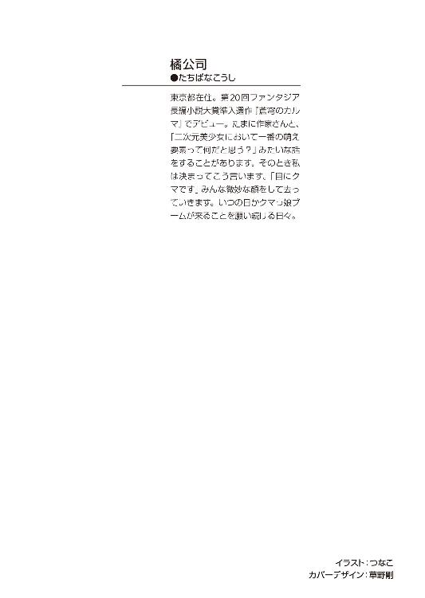
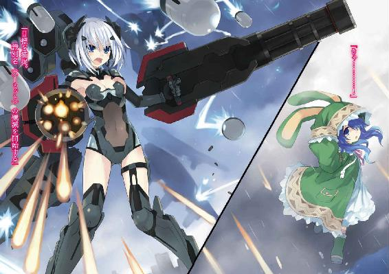

| デート・ア・ライブ 2 四糸乃パペット <デート・ア・ライブ> (富士見ファンタジア文庫) | |
| 橘 公司 & つなこ | |
| Kadokawa / 富士見書房 (2011) | |




デート・ア・ライブ２
四糸乃パペット
橘 公司

富士見ファンタジア文庫
本作品の全部または一部を無断で複製、転載、配信、送信したり、ホームページ上に転載することを禁止します。また、本作品の内容を無断で改変、改ざん等を行うことも禁止します。
本作品購入時にご承諾いただいた規約により、有償・無償にかかわらず本作品を第三者に譲渡することはできません。
本作品を示すサムネイルなどのイメージ画像は、再ダウンロード時に予告なく変更される場合があります。
本作品は縦書きでレイアウトされています。
また、ご覧になるリーディングシステムにより、表示の差が認められることがあります。
口絵・本文イラスト つなこ
序章 新しい日常
「シドー！ クッキィというのを作ったぞ！」
腰まであろうかという夜色の髪をなびかせ。
水晶の如き瞳をキラキラと輝かせながら。
冗談のように美しい少女が、興奮気味にそう言って、手にしていた容器を士道の目の前にずいっと突き出してくる。
五河士道は気圧されるように身を反らしながら、少女の名を呼んだ。
「と、十香......」
「うむ、なんだ!?」
背景に花が咲き乱れるかのような屈託のない笑みで、少女──夜刀神十香がそう言う。
「......や、その」
言いたいことはいろいろあったのだけれど、その眩しすぎる笑顔に、何も言えなくなってしまう。
十香はそんな士道の様子を不思議そうに眺めてから、容器の蓋を開いた。
「そんなことよりも、シドー。これを見てくれ！」
そこには、形が歪だったり、ところどころ焦げていたりはするものの、まあ辛うじてクッキーと称することができなくもない物体が入っていた。
士道と十香は同じクラスだったのだが、なんでも、個々人の作業量が充実するように......とかなんとかいう理由で、実験的に、調理実習を少人数に分けて行っていたのだった。
つまり、今日は女子だけが調理実習の日だったのだ。
「これは......」
「うむ、皆に教えてもらいながら、私がこねたのだ！ 食べてみてくれ！」
言って、十香がまたも満面の笑みを作る。
「............」
士道は、言い知れぬ寒気が背筋に走るのを感じた。
別に十香のクッキーがどうこうという話ではない。
単純に──教室中から、男子たちの怨嗟に満ちた視線が注がれたのである。
だがそれも無理からぬことなのかもしれない。
ただでさえ、女子の手作りクッキーをいただくなんてのは、他の男子たちの嫉妬の的だ。
しかもそれが、転入直後から、彼女にしたい女子ランキングを駆け上がった（と噂の）あの夜刀神十香のものだというのである。
一番近いところだと、すぐ近くにいた友人の殿町宏人までもが虚ろな眼差しで、「ファック、ファック、ファァァァック......死んだ五河だけがいい五河だ」などと呟いていた。
「？ どうしたシドー。食べないのか？」
「え......い、いや......その」
士道が頬をぴくつかせながら言うと、十香が少ししょんぼりと肩を落とした。
「むう......そうか、シドーの方が料理は得意だからな......」
「！ そ、そういうわけじゃないって。い、いただくよ」
士道は意を決すると、容器からクッキーを一枚取った。
そしてそれをゆっくりと口に運──
「......ッ!?」
ぼうとしたところで、目の前を銀色の弾丸のようなものが、一直線に通り過ぎていく。
廊下の方から放たれたと思しきそれは、士道が手に取ったクッキーを粉々に砕くと、そのまま壁に突き刺さった。
「な......なんだ......ッ!?」
突然の事態に一瞬身体を硬直させたあと、叫ぶ。
銀色の軌跡の先に目をやると、フォークが壁に突き刺さって、ビィィィン......と柄を揺らしているのがわかった。シンプルなデザイン。多分、調理室の備品だ。
「ぬ、誰だ！ 危ないではないか！」
十香が叫び、廊下に顔を向ける。士道もそれに倣うように、そちらに目をやった。
「............」
そこには、つい今し方何かを投擲したように、右手を真っ直ぐ伸ばした少女が無言で立っていた。
肩口をくすぐるくらいの髪に、色素の薄い肌。顔立ちは非常に端整であるものの、そこに表情のようなものが一切見受けられないため、どこか人形のような無機的な印象がある少女だった。
「と......鳶一？」
「ぬ」
士道は頬に汗をひとすじ垂らし、十香は不機嫌そうに眉根を寄せる。
少女──鳶一折紙は、そんな二人を見つめながら、ゆっくりと歩み寄ってきた。
そして士道の前まで辿り着くと、左手に持っていた容器の蓋を開け、先ほどの十香と同じように士道に差し出してくる。
「夜刀神十香のそれを口にする必要はない。食べるならこれを」
そこには、工場のラインで製造されたかのごとく、完璧に規格の統一されたクッキーが綺麗に並んでいた。
「え、ええと......」
「邪魔をするな！ シドーは私のクッキィを食べるのだ！」
士道が反応に困っていると、十香がぷんすか！ といった調子で声を上げた。
しかし折紙は微塵も怯まず、それどころか表情をぴくりとも動かさず、のどを震わせる。
「邪魔なのはあなた。すぐに立ち去るべき」
「何を言うか！ あとから来ておいて偉そうに！」
「順番は関係ない。あなたのクッキーを彼に摂取させるわけにはいかない」
「な、なんだと!?」
「あなたは手洗いが不十分だった。加えて調理中、舞い上がった小麦粉に咽せ、くしゃみを三度している。これは非常に不衛生」
「な......っ」
虚を突かれたように、十香が目を丸くする。
なぜだろうか、折紙の言葉が発せられた瞬間、周囲の男子生徒たちが、ざわ......ッ、と色めき立ち、視線が十香のクッキーに注がれた。
しかし十香はそんなものに気づく様子もなく、ぐぬぬ......と拳を握りしめる。
「し、シドーは強いからそれくらい大丈夫なのだ！」
「因果関係が不明瞭。──それに、あなたは材料の分量を間違えていた。レシピ通りの仕上がりになっているとは思えない」
「......っ!?」
折紙が言うと、十香は眉をひそめ、自分と折紙のクッキーを交互に見た。
「な......っ、なぜその場で言わんのだ！」
「指摘する義務はない。──ともあれ私の方が、彼を満足させる可能性が高いことは明白」
「う、うるさいっ！ 貴様のクッキィなぞ、美味いはずがあるかっ！」
十香はそう叫び、目にもとまらぬスピードで、折紙の容器からクッキーを一枚かすめ取ると、自分の口に放り込んだ。
そしてサクサクと咀嚼し──
「ふぁ......っ」
頬を桜色に染め、恍惚とした表情を作った。どうやら、美味しかったらしい。
しかし十香はすぐにハッとした様子で首を横にブンブンと振った。
「ふ、ふん、大したことはないな！ これなら私の方が美味いぞ！」
「そんなことはあり得ない。潔く負けを認めるべき」
「なんだと!?」
「なに」
「お、落ち着けって、二人とも」
放っておいたら殴り合いになってしまいかねない。士道は二人の間に割って入ると、「まあまあ」となだめるように距離を取らせた。
「ぬ......ではシドーは、どちらのクッキィが食べたいのだ？」
「え？」
と、不意にそんなことを言われ、士道は間の抜けた声を発した。
十香と折紙が、左右から同時に、クッキーの入った容器を差し出してくる。
「さあシドー」
「............」
十香と折紙、二人の刺すような眼光に射竦められた士道は、顔中にぶわっと脂汗を浮かべて後ずさった。
......なんだか、どっちを食べても殺されそうな気がする。
士道は自らの生存本能の命ずるままに、両手で二つの容器からクッキーを取ると、同時に口に放り込んだ。
「う、うん、美味いぞ、二人とも！」
十香と折紙はそんな士道の様子をジーッ......と見つめたのち、
「うむ、私のクッキィを食べる方が、ほんのちょびっとだけ速かったな！」
「私の方が、〇・〇二秒速かった」
まったく同時に、そう言った。
「............」
「............」
そして、静かに顔を見合わせる。
「......ええと」
この空気は、今日が初めてではない。
士道は諦めにも似た気分で、再び二人の間に身を躍らせた。
そしてその瞬間、予想通り双方から、凄まじいスピードでお互いの急所を狙った拳が放たれ──二人の間に割って入った哀れな男の頭部と腹部に吸い込まれていった。
第一章 Mission：【一つ屋根の下】
「......はあー......」
士道は、長く重いため息を吐き出した。
日の傾き始めた住宅街の道を、足腰の弱ったおじいちゃんのような足取りで進んでいく。
顔は疲労の色に染まり、目にかかるくらいの髪にも、心なしかツヤがない。
歳はまだ一六だったが......実際何歳か老けて見えた。
だが、それも無理からぬことだろう。
「......はぁ」
ため息をもう一つ。
結局あのあとも十香と折紙は喧嘩をし、そのたび士道が止めに入っていたのである。
しかも、そんなバトルは今日に始まったことではない。
先月十香が、士道の通う都立来禅高校に転入してきてからというもの、毎日のように二人の小競り合いは続いていたのだ。
──だが、それがただの女子高生たちの口喧嘩であれば、士道の心労はここまで深刻なものにはなっていなかっただろう。
「............」
士道は、先月目にした十香と折紙の姿を思い起こした。
片や、世界を殺す災厄と呼ばれた『精霊』。
片や、陸上自衛隊・対精霊部隊の魔術師。
双方、人間の領域を遥かに超えた、規格外の異能を有する少女だった。
そんな二人の間に、一応は一般人の士道が割って入らねばならないのだ。肉体的疲労はもとより、精神的疲労の蓄積度は尋常ではなかった。
「ったく、あの二人、少しは仲良くできねえのかよ......」
言ってから、士道は自分の発言の阿呆さに頭をくしゃくしゃとやった。
ひと月前まで、何の比喩でもなく命のやり取りをしていた二人だ。
今は十香に精霊の反応が認められないため、折紙たちＡＳＴが表立って命を狙ってくることはないと『司令』が言ってはいたのだが......そう簡単に仲良くなどできないのは、当然といえば当然のことだった。
だが......さすがにこれが続くようでは、士道の身が保たない。
士道は今までで一番大きなため息を吐こうとし──
「ん......？」
不意に、顔を上にやった。
突然、ぽつん、と首筋に冷たいものが垂れてきたような気がしたのだ。
「......うわ」
うめくように言って、顔をしかめる。
いつの間にやら、空がどんよりと曇っていたのだ。
「雨かよ。おいおい、天気予報では晴れって言ってたじゃねぇか」
最近的中率の低い気象予報士に恨み言を呟く。
と、まるでそれを見計らったかのようなタイミングで、ぽつ、ぽつ、と、大粒の雫がアスファルトの道に染みを作り始めた。
「っとと......」
慌てて、持っていた鞄を頭の上にやり、小走りで家へと急ぐ。
しかし、雨はそんな士道をあざ笑うかのように、みるみるうちに激しさを増していった。
「おいおい、マジかよ......」
制服に染みていく冷たい感触に、士道はうんざりと眉をひそめた。
まあ、両親が出張中で家事を取り仕切っている士道としては、服が張り付いて気持ち悪いなあとか、風邪を引いたら嫌だなあとかいう思考より先に、部屋干しで明日までにブレザーが乾くかなあという、少々所帯じみた心配が先にきたのだが。
できるだけ服が濡れないよう、無駄な努力をしながら、自宅への道を走る。
だが、丁字路を右に曲がったところで。
「あ......？」
降りしきる雨の中、士道はふと足を止めた。
足が疲労に耐えかねたわけでも、もう濡れてもいいやー、と開き直ったわけでもない。
ただ──前方に。
天から落ちる水玉よりも、遥かに気になるものが現れたのだ。
「女──の子......？」
士道の唇は、そんな言葉を紡いでいた。
そう、それは、少女だった。
可愛らしい意匠の施された外套に身を包んだ、小柄な影。
顔は窺い知れない。というのも、ウサギの耳のような飾りの付いた大きなフードが、彼女の頭をすっぽりと覆い隠していたからだった。
そしてもっとも特徴的なのは、その左手だ。
いやにコミカルなウサギ形の人形が、そこに装着されていたのである。
そんな少女が、ひとけのなくなった道路で、楽しげにぴょんぴょんと跳ね回っていた。
「なんだ......？」
士道は、眉をひそめてその少女を凝視した。
頭の中を、疑問符が通り抜ける。
なぜあの女の子が傘も差さず、雨の中飛び跳ねているのか、という疑問ではない。
──なぜ。
なぜ、自分はあの女の子に、目を奪われたのだろう。
そんな、疑問。
確かに目を引く格好ではある。
だが──違う。そんなことではない。
上手く言語化できないのだが......士道の脳内は違和感で溢れていた。
不思議な感覚。前にも、しかもつい最近どこかで感じたことがある気がしてならない。
「............」
もう雨の冷たさも、濡れた服の不快感も気にならなくなっていた。
ただ、冷たい雨だれのカーテンの中、軽やかに踊る少女に、目を釘付けにされ──
──ずるべったぁぁぁぁぁぁぁぁぁんッ！
「は......？」
呆然と目を見開く。
......女の子が、コケた。
顔面と腹を盛大に地面に打ち当て、あたりに水しぶきが散る。ついでに彼女の左手からパペットがすっぽ抜け、前方に飛んでいった。
そして、うつぶせになったまま、動かなくなる。
「......お、おいッ！」
士道は慌てて駆け寄ると、その小さな身体を抱きかかえるように仰向けにしてやった。
「だ、大丈夫か、おい」
そこで初めて、少女の貌を見取ることができた。
年の頃は士道の妹・琴里と同じくらいだろうか。ふわふわの髪は海のような青。柔らかそうな唇は桜色。まるでフランス人形のように綺麗な少女だった。
「......！」
と、そこで少女が目を開いた。長い睫毛に飾られた、蒼玉のような瞳が露わになる。
「ああ......よかった。──怪我はないか？」
士道が言うと、少女は顔を真っ青に染めて目の焦点をぐらぐら揺らし、士道の手から逃れるようにぴょんと跳び上がった。
そして少し距離を取ってから、全身を小刻みにカタカタと震わせ、士道を怖がるような視線を送ってくる。
「......ええと」
まあ、助け起こすためとはいえ、急に身体に触れてしまったのは軽率だったかもしれないが......それでも少しショックである。
「そ、そのだな。俺は──」
「......！ こ、ない、で......ください......っ」
「え？」
士道が足を前に踏み出すと、少女が怯えた様子でそう言った。
「いたく、しないで......ください......」
続けて、少女はそんな言葉を吐いてくる。
士道が自分に危害を加えるように見えるのだろうか、その様は、まるで震える小動物のようだった。
「ええと......」
と、対応に困った士道は、そこで地面に落ちていたパペットに気がついた。
先ほど少女の手から抜けてしまったものだろう。ゆっくりと腰を折ってそれを拾い上げ、少女に示してやる。
「これ......君のか？」
「......！」
すると少女は目を大きく見開き、士道の方に駆け寄ってこよう──としたところで、足を止めた。
パペットは取り返したいのだけれど、士道に近づくのは怖い、みたいな顔をしながら、じりじりと間合いを計っている。
士道はそんな少女の様子に苦笑すると、パペットを持った手を少女に突き出す格好で、ゆっくりと距離を詰めていった。
「......っ！」
少女がビクッと肩を揺らすが──士道の意図に気づいたのだろう、あちらもゆっくりとすり足で近づいてきた。
そして、士道の手からパペットを奪い取るなり、それを左手に装着する。
すると突然少女が、パペットの口をパクパクと動かし始めた。
『やっはー、悪いねおにーさん。たーすかったよー』
腹話術だろうか、ウサギが妙に甲高い声を発してくる。
首を傾げ、訝しげに少女の顔を見やるが......まるで士道と少女の間を遮るように、ウサギのパペットが言葉を続けてきた。
『──ぅんでさー、起こしたときに、よしのんのいろんなトコ触ってくれちゃったみたいだけど、どーだったん？ 正直、どーだったん？』
「は、はぁ......っ？」
パペットは笑いを表現するようにカラカラと身体を揺らした。
『またまたぁー、とぼけちゃってこのラッキースケベぇ。......まぁ、一応は助け起こしてくれたわけだし、特別にサービスしといてア・ゲ・ルんっ』
「......あ、ああ、そう」
苦笑しながら、パペットが言ってくるのに返す。
『ぅんじゃね。ありがとさん』
と、パペットがそう言うと同時、少女が踵を返して走っていってしまった。
「あ──おいっ」
士道が声をかけるも、少女は反応を示さない。
そのまま曲がり角を曲がり、すぐに姿が見えなくなってしまう。
「何だったんだ......ありゃあ」
奇妙な少女の後ろ姿を呆然と見送ってから数秒。その場に立ち尽くした士道は、頬をかきながらそんな言葉を発した。
「......あ」
そこで、気づく。
少女に気を取られていて気づかなかったが──士道の身体は余すところなくびしょ濡れになってしまっていたのだ。
ついでに、地面に膝をついたものだから、ズボンが盛大に汚れてしまっている。
「うあー、もう......」
染み抜きが家に残ってたかなあ、なんてことを考えながら、髪をくしゃくしゃとかきむしる。水滴が弾けるように辺りに舞った。
もうここまで濡れてしまってはどうしようもない。士道は陰鬱な心地をため息に変換してその場に残し、家へと歩みを進めていった。
「あー......びしょ濡れだよ」
ぼやきながら歩いて、数分。
「......ん？」
自宅の前まで辿り着き、玄関に鍵を差し込んだ士道は、小さく眉をひそめた。
ドアノブを握り、そのまま引いてみる。
予想通り、出がけに鍵を掛けていたはずの扉が、何の抵抗もなく開いた。
「──琴里のやつ、ようやく帰ってきやがったのか」
ふうと息を吐いてから、士道は微かに表情を硬くした。
士道の妹──五河琴里。近所の中学校に通う、一三歳の中学二年生。
そしてそれと同時に、精霊を平和的手段によって無力化しようとする組織・〈ラタトスク機関〉の司令官でもある。
十香という精霊を保護した事後処理に追われ、先月から一度も家に帰ってきていない妹の顔を思い浮かべて、士道は「ったく」と嘆息した。
十香の件で忙しいのはわかるが、無断外泊は看過できない。一応学校には行っているようだったが......ここはお兄ちゃんとして一言いわねばならないだろう。
「それに──」
士道は、ごくりと唾液を飲み込んだ。
士道には、琴里に訊かねばならないことが山ほどあったのだ。
ひと月前、士道が体験した、およそ現実とは思えない数々の事象。
琴里は、それに深く関わっていた。
「............」
ただ妹と顔を合わせるだけだというのに、やたら動悸が激しくなる。
士道は意を決して「ぇえい！」と頬を張り、家の中に足を踏み入れた。
「──ただいま」
雨でぐっしょりと濡れた靴と靴下を脱ぎ、ズボンの裾を捲り上げてから、フローリングの床にペタペタと足跡を残していく。
と、廊下の先から、テレビの音が漏れ聞こえてきた。きっと、琴里がリビングにいるのだろう。
士道は爪先の向きを風呂場の方に変えた。
どうせ濡れ鼠状態のまま話し合いというわけにはいかない。まず身体を拭いて服を着替えてから、リビングに向かう方がよいだろう。
士道は片手に鞄と靴下を持ちながら、脱衣所の扉を慣れた調子で開けた。
と。
「────ッ!?」
瞬間、士道は身を凍らせた。
──脱衣所に、ここにいるはずのない少女の姿があったのである。
背を覆い隠す長い夜色の髪に、水晶の如き瞳。
形容の頭に「絶世の」を一〇付けようとも、その美しさの一割も表しきれないほどの、圧倒的な存在感を放つ美少女。
そんな少女は、士道の記憶の中に一人しかいなかった。
世界を殺す災厄・精霊。──そして、都立来禅高校二年四組出席番号三五番。
夜刀神十香が、そこにいた。
──その身に、一糸すら纏わぬ姿で。
「と、十香......？」
呆然と、呟く。
芸術的とさえいえる美しい肢体が、一瞬のうちに士道の網膜を、視神経を、脳細胞を、振動、発熱、爆裂させる。
手の平に収まるくらいの乳房に、きゅっと締まったウエスト、柔らかそうな臀部。世にいる少女たちが、嫉妬とか羨望を通り越して崇敬の念さえ持ってしまいそうな、魅力的かつ神秘的な裸体だった。
「......ッ!?」
そこでようやく、十香が肩をビクッと震わせ、顔をこちらに向けてくる。
「な......ッ、し、シドー!?」
「！ あ、や、ち、違うんだ......！ これは──」
何が違うのかわからないが、士道の口は無意識にそんな言葉を発していた。
「いッ、いいから出ていけ......っ！」
「ぐぇふッ......!?」
士道は、見事過ぎる右ストレートを鳩尾に食らい、そのまま後方によろめいて、壁に背を、床に尻を預けてへたり込んだ。
間髪入れず、びしゃん！ と、脱衣所の扉が閉められる。
「──けほッ、けほッ......あ、あんにゃろ、本気で殴りやがって......」
咳き込みながらそう言ったのち、脳内で少し訂正。
十香が本気で殴っていたら、士道の身体は収納に便利な上下脱着式になっている。
段々と鳩尾の痛みと、脳内と網膜を侵食していた肌色の衝撃が薄れていき──どうにか心臓が落ち着きを取り戻す。
と、脱衣所の扉が少しだけ開かれ、頬を真っ赤にした十香が顔を覗かせてきた。
「......見たのか、シドー」
「......！」
士道は、じとーっとした視線を送ってくる十香に、ブンブンと首を振った。
......実はちょっとだけ見てしまったのだけれど、馬鹿正直にそんなことを言ったら、今度こそスーツケースに収めやすい身体にされてしまいそうだった。
一応はそれで納得したのか、十香が「むう......」とうなってから、扉を全開にする。
無論、もう十香は服を着ていた。
しかしそれはいつもの制服ではない。琴里が貸し与えたのだろうか、士道が愛用している部屋着だった。
一回りサイズが大きいため、襟元からかすかに鎖骨が覗いており、妙にエロい。少し目のやり場に困ってしまう士道だった。
だが、今はそんなことを気にしている場合ではない。十香に指を突きつけ、叫ぶ。
「な......っ、なんでおまえがうちにいるんだ、十香......ッ！」
しかし十香は、士道が何を言っているのかわからないといった感で首を傾げると、
「何？ 妹から聞いていないのか？ なにやら、ナントカ訓練だとかで、しばらくの間ここに厄介になれと言われたのだ」
なんて、事も無げに言い放った。
「く、訓練......!?」
士道は眉根を寄せると、視線を廊下の奥の方にやった。
そしてそのまま立ち上がり、つかつかと歩いていくと、乱雑に扉を開け放つ。
「琴里ぃ！ どういうことだッ！」
「おー？」
すると、ソファに座りながらテレビを見ていたツインテールのちびすけが振り向き、そのどんぐりみたいな丸っこい目を士道に向けてきた。
「おー、おにーちゃん。おかえりー」
「お、おう、ただいま......じゃなくて！」
思わず普通に返事をしてしまってから、首をブンブンと振る。
「おまえが十香を連れてきたのか......？ 訓練って、一体何のことだよ......っ！」
「まーまー、落ち着いて落ち着いて」
「落ち着いていられるかっ！ な、なんで十香がうちに......？ 今日も、いつもみたいに令音さんと一緒に帰ったじゃねえか」
「え？ んー、それなら──」
琴里が、指を一本ピンと立て、キッチンの方に向ける。
「あ......？」
士道は、琴里の指が指し示す方向に目をやり──また、固まった。
「......ああ、邪魔しているよ」
なんて、言いながら。
やたら眠そうな顔をした女が、リビングとキッチンを隔てるダイニングテーブルに着き、湯気を立てるカップに角砂糖をいくつも放り込んでいたのである。
──村雨令音。〈ラタトスク〉の解析官兼、士道のクラスの副担任だ。
ちなみに彼女も、いつもの軍服や白衣姿ではなく、士道の母のパジャマを着用し、首にタオルを掛けていた。心なしか、髪も少ししっとりしているように見える。
「れ、令音さん？ 何やってるんですか......？」
「......ふむ？」
令音は士道の問いにしばし考え込むような仕草を見せたのち、後頭部をかいた。
「......ああ、すまない。砂糖を使いすぎたかな」
「いや、そうじゃなくて！」
たまらず、叫ぶ。
確かにカップには、令音の血糖値が心配になるくらいの角砂糖が放り込まれていたが、今重要なのはそこではなかった。
士道は心拍を落ち着けるように軽く胸を叩いてから言葉を続けた。
「どういうことですか？ 十香は今、〈フラクシナス〉に住んでるんじゃ？」
〈ラタトスク〉に保護された十香は今、組織が所有する空中艦〈フラクシナス〉内部の隔離エリアで生活しながら、学校に通っているという話だった。
力を封印されているとはいえ、かつては世界を殺す災厄とさえ言われた精霊である。
万一のことがあっても即座に対応できるように。また、効率的に定期検査を行うために、厳重な封印が施された隔離エリアに部屋が用意されているらしい。
ゆえに、十香は学校が終わると、令音と〈フラクシナス〉に戻っていたのだが......
「......ああ、そうだね。まず説明をしなければならないね」
令音が、分厚い隈に彩られた目を擦りながら声を発してくる。
「......しかし、だ。その前に」
「その前に......？」
「......着替えてきた方がよくはないかね？ 床が濡れているよ」
言われて、士道は「あ」と短く声を発した。
◇
「......で？ 一体どういうこった？」
部屋着に着替えた士道は、テーブルの向かいに座った琴里と令音に視線を向けた。
今三人がいるのは、五河家二階に位置する、琴里の部屋だった。
六畳くらいのスペースに、パステルカラーのタンスやベッドが配置され、そこかしこに、ファンシーな小物やぬいぐるみなどが所狭しと並んでいる。
本当ならリビングで話を続けたかったのだが、十香の耳に入れたくない話もあるということで、こちらに場所を移したのだ。
ちなみに十香は今、リビングでアニメの再放送に夢中になっている。とりあえずあと二〇分くらいは大人しくしているだろう。
「んーとね」
と、琴里が、指で頬をぷにっ、と持ち上げた。
「今日からしばらくの間、十香がうちに住むことになったのだ！」
そして、えっへんと胸を反らすようにしながら、無邪気な笑顔を作る。
「だから、どうしてそうなったんだって訊いとるんじゃぁぁぁぁぁぁッ！」
「......まあ落ち着いてくれ、しんたろう」
士道が叫んだところで、令音が声を上げた。
案の定というかなんというか、名前は間違えたままだった。
「しんたろうじゃなくて士道です」
「......ああ、そうだった。訂正しよう。悪いね、シン」
「............」
訂正されていない。ただの愛称になっている。
わざとやってるとしか思えない......のだが、令音のぼうっとした顔を見ていると、なんか本当に間違えて覚えてしまっているのでは、という疑念が浮かんでくるのだった。
しかし、士道はそれ以上、名前の件に関して追及できなかった。
「......理由は大きく分けて二つある」
令音が、静かな声で、そんなことを言い始めたからだ。
「......一つは──十香のアフターケアのためさ」
「アフターケア......っていうと？」
「......シン。君は先月、口づけによって十香の力を封印したね？」
「......っ、は、はい......」
士道は小さく首を前に倒した。
同時に、唇にそのときの感触が蘇ってきて、少し顔が赤くなる。
「あー、おにーちゃん赤くなってるー。かーわいいー」
「う、うるせ！」
琴里が心底楽しそうに言ってくる。士道は気まずげに目線を逸らした。
「......まあ、そこまではいいのだが、一つ問題があってね。......今、シンと十香の間には、目に見えない経路のようなものが通っている状態なんだ」
「パス？ どういうことですか？」
「......簡単に言うと、十香の精神状態が不安定になると、君の身体に封印してある精霊の力が、逆流してしまう恐れがあるということさ」
「な......ッ」
士道は、戦慄に身を凍らせた。
──封印された十香の、精霊の力が、逆流する......？
剣の一振りで天を、地を裂く力を、再び十香が備えてしまうということだろうか。
もしそうだとしたなら──考えるだけでも怖気をふるう事態だった。
「......君も知っての通り、十香は今、〈フラクシナス〉の隔離エリアで生活している」
士道の狼狽を知ってか知らずか、令音が静かな調子で言葉を続ける。
「......十香の精神状態は常にモニタリングしているのだが......どうも、〈フラクシナス〉にいると、学校にいるときに比べて、ストレス値の蓄積が激しいんだ」
「そ、そうなんですか？」
「......ああ。それに、一日二回の定期検査もあまりお気に召さないようだ。今はまだ許容範囲内だが、このまま放置しておくのも好手とは言い難い。──そこで、だ」
令音が、立てた指をあごに当てた。
「......検査の結果も安定してきたし、そろそろ〈フラクシナス〉外部に、十香の住居を移そうということになってね」
「は、はあ......そうなんですか」
「......ああ。というわけで、精霊用の特設住宅ができるまでの間、十香をこの家に住まわせることになったんだ」
「プリーズ。ウェイト」
士道は右手を額に当てて、頬をぴくつかせた。
「......どうかしたかね？」
「な、なんでうちになるんですか......？」
士道が問うと、令音は小さくうなりを上げた。
「......まあ簡単に言うと、だ。君といるときが、一番十香の状態が安定するんだよ」
「え......っ」
急にそんなことを言われ、息を詰まらせる。
「......逆に言えば、君以外の人間は、まだ十香の信頼を得ているとは言い難いのさ。私や琴里なんかは比較的顔を合わせる機会が多いが──それでもね。......まずは少しでも安全性の高い場所で、十香がきちんと生活できるかどうかを試したいところなんだ」
「......むう......」
士道は、額に汗を滲ませながらうなった。
確かにそう説明されると、整合性がある気がしないでもない。
それに──まあ、自分が十香に信頼されている、というのも......嫌な気はしなかった。
しかし、士道は思い直すように首を軽く振った。そう軽々に許可を出せるような問題でもない。食い下がるように、また令音に問いを発する。
「それで......もう一つの理由ってのは何なんですか？」
「......ああ、これはもっと単純明快だ。──シン。君の、訓練のためさ」
「......っ」
先刻、服を着替える前に言われた言葉が繰り返される。
訓練。その単語には、あまりいい思い出がなかった。
「そういえばそんなこと言ってましたね......。でも、もう訓練なんていらないでしょう？」
「......ふむ？ それはなぜかね」
「なぜって......だって、もう精霊の力は封印したわけで......」
士道が言うと、令音はゆらゆらとした調子で首を横に振った。
「......精霊が十香一人だなんて、誰が言ったのかな？」
「え......？ それって......どういう」
「......そのままの意味さ。空間震を起こす特殊災害指定生物──通称・精霊は、十香だけではない。現在の段階でも、彼女の他に数種が確認されている」
「な──っ」
士道は、心臓が引き絞られるのを感じた。
──精霊は、十香一人ではない？
緊張だろうか、戦慄だろうか、なんとも形容しがたい感情が胃の底でぐるぐると渦巻き、全身へと放出されて手足の指先を震わせた。
しかし令音は、硬直した士道に構わず、言葉を続けていった。
「......シン。君には引き続き、精霊との会話役を任じてもらいたい。そのための訓練さ」
「......っ、じょ、冗談じゃ──」
と。士道が膝を叩き、叫びを発した瞬間。
「──ふうん？」
先ほどから静かに話を聞いていた琴里が、小さな声を上げた。
いつの間にか、髪を二つ結びにしていたリボンの色が、白から黒に変わっている。
「──っ」
......見覚えがある。今の琴里は、司令官モードだ。
「嫌なの？ 士道。──もう精霊とデートしてデレさせるのは、嫌だっていうの？」
今までの調子とは違う、どこか大人びた雰囲気を漂わせながら、琴里が言ってくる。
──そう。
〈ラタトスク〉の提唱する、精霊を平和的に無力化する方法。
それは、士道を精霊と仲良くさせ、その身に精霊の力を封印してしまおうという、言葉にするとなんとも間抜けな代物だったのだ。
「っ、あ、当たり前だっ！」
士道が言うと、琴里は軽く身体を反らしてあごを上げながら唇を開いた。
「ふうん。──じゃあ、もうどうしようもないわね」
「あ......？」
「空間震によって世界がボロボロになっていくのを黙って眺めるか──それとも、精霊がＡＳＴに殺されるなんて奇跡的なイベントを気長に待つか。どっちかになるでしょうね」
「......っ」
言われて。士道は、声を詰まらせた。
失念していたわけではない。だが──改めてその事実を口に出されると、心臓がちくりと痛むのだった。
隣界と呼ばれる異空間に存在する精霊は、希にこちらの世界に現れることがある。
その際、空間の壁が大きく撓み、空間震という現象が起きてしまうのだ。
規模の大小はあれど──精霊が出現した一帯は、爆弾でも炸裂したかのように滅茶苦茶に破壊されてしまう。
そして、そんな精霊を危険な存在として、武力を以て殲滅しようとしているのが、陸上自衛隊所属の対精霊部隊、通称ＡＳＴだった。
「精霊の力を封印できるだなんて規格外の能力、持っているのはこの世にあなた一人だけよ。──そのあなたが嫌だと言うのだもの。もうどうしようもないじゃない」
「......っ、な、なんだよ......それ......っ」
士道は、苦しげにうめいた。
知らずに負わされた重責。そのあまりの重さに、胃が痛くなる。
だが──そもそもの前提として。
士道には、確かめておかねばならないことがいくつもあった。
「──琴里」
「何かしら？」
なんとなく質問の内容を推し量ったのだろうか、琴里が悠然と返してくる。
「......まず、聞かせてくれないか。〈ラタトスク〉ってのは、一体何なんだ？ おまえはいつ、そんな組織に入ったんだ？ それに──俺のこの力ってのは、一体何なんだ？」
そう。士道がずっと訊こうとしていたのは、それだった。
琴里がずっと家を空けていたゆえに、発せずにいた問い。
琴里は、ふうと息を吐くと、ポケットから大好物のチュッパチャプスを取り出し、包装を解いて口にくわえてから、話を始めた。
「──そうね。ちょうどいい機会だし、簡単に話しておこうかしらね」
言って、後方にあった大きなクッションに背中を預ける。
「〈ラタトスク〉は、有志により結成された......まあ、言うなれば一種の自然保護団体みたいなものよ。──もちろん、その存在は公表されていないけれどね」
「保護団体......ねえ」
なんだか腑に落ちないものを感じるが、それで話の腰を折るのも躊躇われた。先を促すように相づちを打つにとどめる。
「ええ。そして、〈ラタトスク〉の結成理由にして、最大の目的、それは──精霊を保護し、幸福な生活を送らせることよ。......ま、最高幹部連である円卓会議の中には、精霊の強大な力を得てどうこうしようって助平心を持ってる奴もいるみたいだけれど」
「あ......？ 空間震を防ぐことじゃないのか？」
「ま、それももちろんあるのだけれど。それはあくまで副次的なものよ。そこだけを見るのなら、私たちもＡＳＴも変わらないわ」
「......ぬ、まあ、それもそうか。で......そういう組織があるとして、だ。おまえはいつ、どうしてそこの司令官になんてなったんだよ。俺は全然知らなかったぞ」
憮然とそう言う。
隠し事をするななんて言うつもりはないけれど、こんな重大な──それこそ、最悪命に関わるやもしれないことを秘密にされていたのは、お兄ちゃんとしては少し不満だった。
そんな心境をも察したのか、琴里がふうと鼻から息を吐く。
「私が〈ラタトスク〉実戦部隊の司令官に着任したのは......大体五年くらい前のことよ」
「五年前......ね。──て、はあ......っ!?」
士道は頭の中で簡単な計算を済ませ、うなずきかけた頭を上に戻した。
「ば、馬鹿言うな。五年前って......おまえ、まだ八歳じゃねえかよ！」
士道は信じられないといった感で顔を歪めた。
いくら普通の組織ではないとはいえ、小学三年生程度の女の子を司令官にしようだなんて、正気の沙汰ではない。
「ま、数年の間はずっと研修みたいなものよ。実際に指揮を執りだしたのはここ最近」
「い、いや、そういうことじゃねえだろ。そもそもそんな小さな女の子を──」
「まあなんていうの？〈ラタトスク〉が、私の溢れ出る知性に気づいてしまったのよね」
「納得できるかそんなんでっ！」
「そんなこと言われたって、事実なんだから仕方ないじゃない。もうちょっと素直に妹の言葉を信じなさいよ。人の言葉を疑えば頭が良く見えるだなんて思ってるの？」
......いつもの可愛い琴里とはまるで違う挙動に、言葉。士道は頬に汗を垂らした。
「......おまえのその二重人格も、〈ラタトスク〉のせいなのか？」
士道が言うと、琴里がフンと鼻を鳴らした。
「失礼かつ短絡的ね。もう少し考えてものを言いなさい。第一これは──」
「これは？」
「............」
琴里はなんとも微妙な表情で士道を見たあと、士道の言葉を無視するように首を振った。
「──そんな話はどうでもいいの。今は〈ラタトスク〉の話でしょ。同じく五年前、組織の転機となる、ある出来事が起こったの」
「おい、はぐらか──」
しかし、士道の言葉は途中で止められた。
琴里が、くわえていたチュッパチャプスの棒を指で挟み込み、ピッと士道に向けてきたからだ。
「──接吻によって、精霊の力を封印することのできる少年が発見されたのよ。それにより〈ラタトスク〉は、積極的に精霊を保護しようって方針にシフトしていったわ」
「な......っ」
士道は、驚愕に眉を歪めた。
「そ、それが......俺だってのか？」
「ええ」
琴里がうなずき、再びチュッパチャプスを口に戻す。
士道はといえば、頭の中が混乱しっぱなしだった。一気にいろんな情報が与えられすぎて、処理しきれなくなる。
「ちょ、ちょっと待ってくれ......そもそも、なんで俺にそんな力が備わってるんだ？」
「さあ？」
「は......？ い、いやいやいや。そこまで言ってて勿体付けるんじゃねえよ」
「勿体付けてなんていないわよ。本当に知らないだけ。『キスを介して、精霊から力を奪い取り、安全な状態にして自身に封印する』。そういう能力が士道に備わっているのを知っているだけで、なぜ士道にそんな力があるのかは、少なくとも私は知らないわ」
「そ、それじゃあ、なんで俺にそんな力があるってことがわかったんだよ！ その五年前に！ 一体何があったってんだよ！」
と。士道が頭をわしゃわしゃとかきながらそう言った瞬間。
琴里が、ふっと目線を下の方に逸らした。
「......っ」
いつもとは違う、少し憂いを帯びたような表情に、思わずどきりとしてしまう。
何か感慨に浸るような。悲しい思い出を思い起こすような。
──取り返しのつかない過ちを悔いるような。
そんな──顔。
「こ、琴里......？」
士道が名前を呼ぶと、琴里はハッとした様子で小さく肩を震わせた。
「え、っと──そう、〈ラタトスク〉の観測器でね、調べたの。それで、わかったのよ。──私に関しても、同じ」
なんだか、司令官モードとは思えないような、歯切れの悪い調子で琴里が言う。
だけれど......なぜだろうか、士道には、それ以上琴里を追及することができなかった。
「と、とにかく、よ」
琴里はコホンと咳払いをすると、士道にビシッと指を突き付けてきた。
「今必要な情報は、『士道には、精霊をなんとかする力がある』。それだけよ！ その上で選んでちょうだい。──これからも、精霊を口説き落としてくれるかどうかを、ね」
「............っ」
士道は、苦々しく唇を引き結んだ。なんとも意地の悪い設問である。
士道にしか、精霊の力を封印することはできない。
士道がやらなかったら、精霊は──要は、士道が救いたいと思った十香と同じ境遇の存在たちは、こちらの世界に出てくるたびにＡＳＴに襲いかかられてしまう。
彼女たちは、自分の意思で世界を壊しているわけではないのに。
一方的に災厄と断じられ、命を狙われてしまう。
それに──空間震の問題もある。
精霊の力を封印しなければ、いつかまた、ユーラシア大空災レベルの大災害が起こる可能性だってあるのだ。
士道は、大きな吐息とともに、髪をかきむしった。
「......少し、考えさせてくれ」
「──ま、今はそれでいいわ」
琴里はふうと息を吐いてからそう言うと、隣に座った令音に視線を送った。
「それじゃ令音、準備を」
「......ああ、任せてくれ。......というか、もうおおむね終わっているよ」
令音が頭をゆらゆらさせながら言うと、琴里はひゅうっ、と口笛を吹いた。
「さすが。仕事が速いわね」
「......準備？ 何のことだ？」
二人の不穏な会話に嫌な予感を覚え、士道は頬に汗を滲ませながら問うた。
すると、琴里がさも当然のごとく返してくる。
「え？ だから、十香の部屋の準備に決まってるじゃない。二階奥の客間を使うわよ」
「ちょ、ちょっと待てっ！ 少し考えさせろって言っただろ！」
「ええ。だから、こっちのことは気にせず、じっくり考えてちょうだい」
「無茶言うんじゃねぇぇぇぇぇっ！」
士道が叫ぶと、琴里はやれやれと耳を塞いだ。
「うるさいわね。どっちにしろ、特設住宅ができるまでの間、十香にはここにいてもらうしかないの。それに、士道が決断してから訓練してたんじゃ遅すぎるしね」
「んなこと言ったって......と、年頃の男女が同じ家に住むってのはどうかと思うぞ......！」
士道が顔を真っ赤にしながら言うと、琴里はハン、と鼻で笑った。
「士道に間違いを起こす甲斐性があれば、私たちもあんなに苦労しなかったでしょうよ」
「ぐ......ッ」
なんだか否定しきれない自分が悲しかった。
「だ、だからってだな......！」
と、士道が食い下がっていると、士道の後方──琴里の部屋の出入り口にあたる扉が、ガチャリという音を立てて開いた。
「......！」
肩をビクッと揺らして、振り向く。
いつからそこにいたのか、廊下から、十香が不安げな眼差しを送ってきていた。
「......シドー。やはり、駄目か？ 私は......ここにいては」
「............ッ」
眉を八の字にし、悲しそうな瞳で見つめてくる十香に、士道は声を詰まらせた。
......この状況で、否と言える人間がいるのなら、お目にかかってみたいものである。
士道は、深ぁぁぁいため息を吐いた。
「......わ、わかったよ......っ......」
◇
「......それで、訓練ってのは一体何なんだ？ 俺に一体何やらせるつもりなんだよ」
士道が、半ば強制的に首を縦に振らされてから、およそ三時間。
夕食を終えた士道は、リビングのソファに腰掛けた琴里に問うてみた。
今五河家のリビングにいるのは、士道と琴里の二人だけである。
令音はあのあとすぐ〈フラクシナス〉に帰り、十香は、夕食が終わってから客間に赴いていた。〈フラクシナス〉隔離エリアの部屋にいたとき使っていた小物なんかが先ほど届いたため、荷解きをしているらしい。
「別に、何もしなくていいわよ」
黒いリボンで髪を括った琴里が、食後の一本（もちろん、煙草ではなくチュッパチャプス）をくわえながら唇を動かしてくる。
「は......？ どういうこった？ あれだけ訓練訓練言ってたのに」
「んー、正確に言うと、普段通りの生活を送ることが今回の課題......かしらね」
「あ？」
「基本的に士道の訓練は、これから何人もの精霊とデートすることになったことを想定して、女の子と緊張せずに話せるようになることを目的としてるわけよ」
「......ああ、そういえばそんなこと言ってたな」
先月やらされた、ギャルゲー訓練とナンパ訓練を思い起こし、頬をぴくつかせる。
「今回は、女の子と同居というイベントを生かした実戦訓練なの。要は、突然女の子と胸キュン展開になっても、落ち着いて紳士的に振る舞えるようになってほしいわけよ」
「......はあ」
「だから士道は、十香との同居期間中、どんなムフフイベントが起こっても、焦らずとちらず対応してくれればそれでいいわ」
「な......っ、なんだそりゃ......」
士道は眉の間に盛大にしわを寄せ、うめいた。
と、そこでふと脳裏に疑問が浮かぶ。
「......ていうかそもそも、なんで精霊を口説き落とさなきゃならないんだ？ 精霊の力はキスで封印できるんだろ？ なら不意を突いて──」
「あらなに、士道ったら無理矢理がお好み？ 朝刊に載らないように気を付けてよね」
「載るかッ！」
士道が叫ぶと、琴里はやれやれと肩をすくめた。
「──駄目よ。精霊が士道に心を開いていないと、完全には力が封印されないの」
「そ、そうなのか......？」
「ええ。別にベタ惚れされなさいってわけじゃあないけれど、少なくとも、キスを拒まれないくらいには信頼されてないと厳しいわね。だから令音が逐一精霊の機嫌や好感度をモニタリングしてるのよ」
「は、はあ......」
聞けば聞くほど、わけのわからない能力である。士道は眉の間に深いしわを刻んだ。
「......ん？」
と──士道はそこで、首をひねった。
琴里が、何やらボソボソと唇を動かし始めたのである。
「......そう、わかったわ。ん......じゃあ......」
よくよく見ると、琴里の右耳には、小型のインカムが装着されていた。
「琴里？ 誰と話してるんだ？」
「──ああ、なんでもないわ。気にしないで。──それより士道」
と、琴里がぴょん、とソファから立ち上がった。
「お手洗いに行きたいのだけれど」
「あ？ 行けばいいだろ」
「さっき見たところ、電球が切れていたのよ。先に交換してくれないかしら」
「？ ああ......別にいいけど」
士道は琴里の様子を不審に思いながらも、棚の引き出しから予備の電球を一つ取り出し、作業用の丸椅子を持ってトイレに向かった。
そして、椅子を床に置いてから扉を開け──
「......っ!?」
そのままの体勢で、フリーズした。
しかし、それも当然だ。何しろ──トイレには、先客がいたのだから。
「な......っ、シドー!?」
十香が、パンツを膝元まで下げた状態で、そこに座っていたのである。
「と......ッ、とととととととと十香......!? なんでおまえ、こんなとこに──」
士道は、心臓が急激に鼓動を速めていくのを感じながら、そんな声を絞り出した。
おかしい。トイレの鍵は閉まっていなかった。
加え、琴里が切れていると言っていた電球は、煌々と明るく光っている。ついでに、扉の脇に設えられている電気のスイッチはオフになっていた。
こんなの、咄嗟に人が入っていることを見抜けという方が無茶だ。
「こっ、こっちの台詞だ！ 早く閉めんか！」
頬を真っ赤にした十香が、部屋着の裾を片手で下に引っ張りながら、壁に設えられていたトイレットペーパーをむんずと掴み取り、力いっぱい士道の顔面に投げてきた。
「ごあ......っ!?」
柔らかいトイレットペーパーとはいえ、不意に投げつけられればそれなりの衝撃になる。士道はのどからうめき声を発し、その場に仰向けに倒れ込んだ。
コロコロコロコロ......と、今し方士道の鼻にカミカゼ・アタックを仕掛けてきたトイレットペーパーが、廊下の上に白線を引いていく。
「な......なんだ、ってんだ......」
と、士道が天井を眺めながらうめくと、そこにザッ、と琴里が現れた。
「情けないわね。焦らずとちらずって言ったばかりなのに」
士道の枕元に仁王立ちしているものだから、下着が丸見えになっている。まあ、さすがに士道でも、妹のパンツでは狼狽えなかったけれど。
「......琴里。おまえの仕業か......」
士道が言うと、琴里はキャンディの棒をピンと立てて唇の端を上げた。
......要は十香がトイレに入ったのを見計らって、士道に突撃させたのだろう。しかもご丁寧に、鍵と電灯のスイッチに細工までして。
「──士道の様子は常に〈フラクシナス〉でモニタリングされてるわ。そこでクルーとＡＩが、士道の対応の合否を逐一判定するの。──今回はもちろん、駄目」
言って琴里は、背に隠していたものを士道に示した。
「あ......？」
それは、小型のラジオだった。
琴里が、それの電源を入れ、周波数を合わせる。すると──
『──この世界は、欺瞞に満ちている。大人たちは、腐敗しきっている。俺たちは、そうなっちゃいけない。示せパワー。漲るワンダー。未来に向かう足を止めちゃいけない──』
......ドコかで聞いたことのあるような詩が、淡々と朗読されていた。
そう。士道が中学校の時分に書いたものである。
「ぎ......ッ、ぎゃぁぁぁぁぁぁぁぁぁぁぁぁぁッ!?」
士道はのどが潰れんばかりに大声を上げると、ラジオを引ったくって電源を落とした。
「そんなことをしても無駄よ。だって、もう電波に乗っちゃってるんだから」
「な......っ!?」
士道は、顔を真っ青に染めた。
「前回の発展型ペナルティよ。訓練だからって気楽にやられちゃ困るからね。──ま、安心なさい。全部失敗でもしない限り、作者名を流すようなことにはならないから」
「それ全部失敗したら流すって言ってるようなもんじゃねえか！」
「だから、その前に慣れなさいって言ってるのよ。別にドキドキするなって言ってるわけじゃないの。どんなに緊張しようが、落ち着いた対応さえすればクリアにしてあげる」
「そ、そんな無茶な......ッ」
ゲームならまだしも、こういったイベントに免疫のない士道にとっては難易度の高すぎる訓練だった。
「て、ていうか、十香の精神状態を不安定にしてもいけないんじゃねえのかよ......!?」
「ああ、それは大丈夫。感情の揺らぎにもいろいろと種類があるのよ。こういったイベントで、精霊の力が逆流する可能性は低いわ」
「だ、だからって......」
と、士道が言うと同時、背後からキィ......という音が響いてきた。
十香が、トイレのドアを少しだけ開けて、真っ赤な顔を半分くらい覗かせている。
「と、十香......？」
つい今し方、琴里のせいとはいえ覗きのような真似をしてしまった手前、顔を合わせづらい。士道は小さく視線を逸らしながら声を発した。
「す、すまん......わざとじゃなかったんだ。許してくれ......」
すると十香は、恥ずかしそうに頬を染めながら、廊下に描かれた白線を指さした。
「......許してやるから......その、なんだ......か、紙を取ってくれ」
「あ......」
そういえば、備蓄用のトイレットペーパーが切れていた気がする。
士道は廊下に転がったトイレットペーパーを手に取ると、くるくるとロールし直し、十香に手渡してやった。
◇
「士道。お風呂沸いたみたいだから、先に入っちゃって」
今度はどんな手で仕掛けてくる......？ と気を張っていた士道に、琴里がそんな言葉を投げてきたのは、午後八時を回った頃だった。
「......風呂、ね」
士道は、上擦った声でそう答えたのち、リビングに視線を這わせた。
琴里が寝転がりながら、テレビに接続されたゲーム機のコントローラーを握っている。
十香の姿は......やはり、ない。
そう。先ほど、士道が数分席を外している間に、十香の姿が消えていたのだ。
琴里は、部屋に何かを取りにいったようだと言っていたが......この期に及んでそんな言葉を信じるほど、士道も甘くはなかった。
「......いや、俺はあとでいいよ。先に入ってきたらどうだ？ 琴里」
「............」
ぴくり、と。
ゲームのＢＧＭに合わせて楽しげに揺れていた琴里の爪先が一瞬止まるのを、士道は見逃さなかった。
「遠慮しとくわ。今いいところだし」
なんて、画面に目をやったまま白々しく言ってくる。
──士道は確信した。これは、琴里のトラップだ。
士道がいない間に十香を入浴させておき、先ほどのトイレと同じように、士道を突撃させて、嬉し恥ずかしハプニングを演出するつもりなのだろう。
知将・五河琴里司令が、お風呂なんて王道イベントを見逃すはずがない。
だが、士道は帰宅時、既に脱衣所でのエンカウントを体験しているのである。さすがに二度同じ轍を踏むような真似はしなかった。
小さく肩をすくめながら、とっておきの一撃をお見舞いする。
「まあまあ、そう言うなよ。──今日は特別に、バブ使っていいからさ」
「......っ!?」
瞬間。琴里のツインテールが、ピーン！ と逆立った（イメージ）。
五河家でバブを使用するときは──皆でその炭酸ガスの恩恵にあずかれるように、投入の役目は一番風呂の者が任ずることになっていた。
そして、琴里がその役を逃したことは、ほとんどなかったのである。
「............」
「............」
夕飯あとの静かなひととき。
何も知らない人間が見れば、穏やかな兄妹のワンシーンに見えたかもしれない。
だが──二人の間では今、苛烈な心理戦（？）が繰り広げられていた。
──さあ、どう出る、琴里。
今士道の脳内には、難攻不落の琴里城に、バブ型爆弾で強襲をかけるという、なんともシュールな光景が展開していた。
琴里は、落ち着かない様子で足の指をぴくぴくと動かしている。士道は勝利を確信し、にやりと唇の端を上げた。
──ふっ、ははははは！ 舐めるな小娘。この五河士道、伊達に何年も貴様の兄をやってるわけではないぞッ！
だが。しばしの間のあと、琴里が震える声を発してくる。
「へ......へぇぇぇぇ、そう......それは素敵ねえ。......士道、先に、入れて、おいてよ」
「な......っ」
予想外の返答に、士道は眉をひそめた。──如何に司令官モードとはいえ、琴里がシュワシュワ炭酸ガスの魔力に抗えるはずがない！
......と、よくよく見ると、琴里が肩をぷるぷる震わせながら、左手の甲を、右手でギュゥゥゥゥゥとつねりあげていることがわかった。
「............」
完全に、我慢している。
と──そのとき。
「琴里、待たせたな。さあ、勝負だ！」
後方からそんな声が響いてきて、士道はバッと振り返った。
そこには、ブランケットのようなものを手に持った十香が立っていた。
「十香!?」
「ぬ、どうしたシドー。おかしな顔をして」
「い、いや......どこ行ってたんだ？」
「ん。琴里が一緒にゲェムをしようと言ってきたのだが、なにぶん今日は少し冷えるのでな。荷物の中から、膝にかけるものを探してきたのだ」
「......っ、な──」
十香の言葉に、士道は思わずよろめいた。視界がぐにゃぁ～、と歪むような感覚。
──琴里の言葉は本当だった？ 士道は、独り相撲をとっていただけ......!?
「......ふろ、いってくる......」
なぜか負けた気分になって、士道はふらふらとリビングを出ていった。
「？ シドーはどうしたのだ？」
「......さあね」
そんな二人の声を背に聞きながら廊下に出、適当に着替えとバスタオルを用意してから脱衣所の扉を閉める。
「............」
一応、浴室のドアをノックしてから開けてみた。
「......なんだ、ホントに何もないのか」
安堵の息を吐くと、手早く服を脱いで浴室に入る。その際バブを手に取りかけたが......なんとなく琴里に悪い気がした。
明日にでも琴里に使用させてやろうと思い、泡の出ない普通の入浴剤を湯船に放り込むにとどめる。
そして手早く身体を洗ってから、乳白色に染まった湯に身体を沈み込ませた。
「ふぅー......」
細く、長い吐息が、浴室の壁に幾重にも反響して鼓膜に戻ってくる。
「今日はまた......どっと疲れたな......」
肩に湯をかけながら、またもため息を一つ。
身体中の毛穴から、疲労が溶け出すような感覚。
士道は、そのままゆっくりと瞼を落とした。
......そして、どれくらいの時間が経っただろうか。
『──ふーん、ふふふふーん、ふふーん♪』
ぼうっとした士道の耳に、くぐもった鼻歌が聞こえてきた。
「あ......？ なんだ......？」
士道はとろんとした目をこすって、その歌の聞こえる方に顔を向け──
「......っ！」
身体を硬直させて、自分の油断を呪った。
それも当然だ。何しろ今、浴室と脱衣所を隔てる曇りガラスの向こうに、黒髪の少女の姿がぼんやりと見えていたのだから。
「こ......ッ、こっちが狙いか、琴里......！」
士道は胸元を押さえながらうめいた。
前回と同じパターンと見せかけておいての奇襲。
十香のいるところに士道を誘導するのではなく、その逆。
単純ながら、効果的な策だった。何しろ今士道には、逃げ場がない。
「謀ったな、琴里......っ！」
今士道の脳内には、サングラスをかけた琴里が不敵に笑いながら、「坊やだからさ」とウイスキーのグラスを傾けている光景が浮かんでいた。
だが今は、そんな状況分析をしている場合ではない。
脱衣を終えた十香が、浴室のドアに手をかけたのである。
「......っ！」
混乱した士道は、とにかく見つかるまいと思い、湯に潜って浴槽の蓋を閉めた。
それと入れ違いのような格好で、ドアが開く音が聞こえてくる。
次いで、ガラガラガラっ、という音とともに、浴槽の蓋が巻き取られた。そして──
「とうっ！」
ざっぱーん！ と、浴槽の中を確認しないまま、十香が勢いよく湯船に飛び込んできた。
あたりに湯がしぶき──同時に、士道の腹のあたりに、柔らかい感触が生まれる。
「ぬ？」
そこでようやく、十香も違和感を覚えたらしい。
そして......息が続かなくなった士道の顔が、乳白色の水面からコンニチハする。
「よ......よう」
「............」
それから数秒ののち。
「っっっっっっっっっっっっっっっ────............!?」
十香は、顔をトマトみたいに真っ赤に染めて、声にならない悲鳴を上げた。
「っ、お、落ち着いてくれ、十香......っ！」
「────っ！ 馬鹿者！ でっ、出てくるな......っ！」
十香が士道の頭をむんずと掴み、再び湯船に沈み込ませた。
無論、まともに息継ぎができなかった士道は、肺に酸素が足りなくなる。
「......！ ......！」
そして、狭い湯船の中でひとしきり組んず解れつしたあと。
士道は気を失って、ぷかー......と湯船に浮いた。
なんか頭の上で琴里が「はい、駄目ー」と言って、ラジオからさらに長い音声が聞こえてきた気がしたが......士道は対応することができなかった。
◇
「さ......散々な目に......遭った......」
どうにか意識を取り戻し、風呂から上がった士道は、流し台に溜まった皿を洗い、明日のご飯を仕掛けてから、ようやくフラフラと自分の部屋に戻っていった。
時計の針は、もう一一時を回っている。
よい子な十香と琴里は、既に各々の部屋で眠りについていた。
健全な高校生男子としてはまだまだ宵の口なのだが、今日は疲れ方が尋常ではない。
──さすがに、今日はもう琴里もネタ切れだろう。
士道は部屋に入るなりベッドにダイブし、すぐに眠りに落ちていった。
『......里。琴里、起きてくれ。時間だ』
皆が寝静まった深夜。右耳の鼓膜が震わされる感覚に、琴里は眉をぴくりと動かした。
「ぅ......んー......」
だが、それで起きるほど、五河琴里一三歳の眠りは浅くはない。
ベッドの上で身をよじると、タオルケットを身体に巻き付けるように寝返りを打ち、再びすやすやと穏やかな寝息を立て始める。
『......琴里。琴里。寝直さないでくれ』
「ん～......」
琴里は手の甲でショボショボの目を擦り、のろのろと身を起こした。
「なぁーにぃ......おにーちゃぁん......」
『......悪いがシンではない。私だ、令音だ』
小さく首をひねり、ふぁぁぁぁぁああ......と大きなあくびを一つ。
「令音ぇ......？ どぉしたの、こんな時間に......」
琴里は片手で目を擦りながら、枕元をぺしぺしと叩き、手探りで携帯電話を発見すると、画面を点灯させて表示された時刻に目を這わせた。
午前三時二〇分。よい子も悪い子も皆、夢の中にいる時間だ。
『......準備ができた。指示を頼む』
言われて、琴里は、「あ」と小さく口を開いた。
「ん......そっか......起こしてって頼んでたっけ......」
琴里は令音のように頭をぐらぐらと揺らしながら、再び枕元をぺしぺしと叩いていった。
そしてそこに置かれていた一口サイズの棒付きキャンディを手に取ると、雑に包装を破りとって口に放り込んだ。
「────っ！」
瞬間、舌の上で爆発が起こるかのような感覚が脳に伝わり、琴里は全身をブルブルと震わせた。同時に、スーッとした刺激的な香りが鼻腔を通り抜ける。
そう、これはいつものチュッパチャプスではない。琴里が眠気を抑えたいときにだけ舐める秘密兵器・超爽快スーパーメントールキャンディである。
琴里は黒のリボンを手に取ると、髪をいつものツインテールに括った。
「あー......目が覚めたわ。悪いわね、令音」
『......構わないさ。──早速だが、報告だ。シンが熟睡状態に入ったよ』
「そう。それで、要員の方は？」
『......言われたとおり待機させてあるよ。いつでもいける』
「けっこう」
琴里はそう言うと、足音を殺して部屋を出、階段を降りて玄関まで辿り着いた。
そして、カチャリと音をさせて、錠を開ける。
玄関の前には、黒い戦闘服に目出し帽という、アメリカの特殊部隊みたいな格好をした男たちが数名、待機していた。
「ターゲットは二階よ。頼むわ」
「了解」
男たちは琴里の指示に従い、足音もなく五河家に侵入していった。
「ん......うぅん......」
士道は小さなうめき声を発しながら、ベッドの上で軽く背筋を伸ばした。
目には窓から差し込む朝日が、耳には小鳥のさえずりが入り込んでくる。
「ん......もう朝か」
あくびを一つこぼし、目をしばたたかせながら寝返りを打つ。
──と。
「あ......？ なんだ......？」
頬に何やら柔らかいものが触れた気がして、士道は小さく眉をひそめた。
それの正体を探るため、のそのそと顔の辺りに手をやり、触れてみる。
すると、頭の上の方から、
「ん......っ」
なんて、可愛らしい声が聞こえてきた。
「............」
士道は一瞬息を止め、思考を巡らせた。
ちらと視界を巡らせる。目の前には薄手のフリース生地。そして天井には、士道の部屋のものとはタイプの違う電灯が見て取れた。
ここは──士道の部屋では、ない。
部屋の内装からいって......普段あまり入ることのない二階奥の客間であるようだった。
「て、こ、と、は......」
ゆっくり、ゆっくりと顔を上に向けていく。
「......む？」
そこには予想通り、十香の、美しい貌があった。
先方も今目覚めたのだろう。士道が視線を上にやった瞬間──目が、あった。
「............」
「............」
数秒の間のあと。
「ひ──っ......」
「な......」
士道と十香はほぼ同時に息を詰まらせると、ガバッとその場に起きあがり、まるで試合開始のゴングが鳴ったかのように、ベッドの枕元と足元に分かれて距離を取った。
「な、何をしているのだ、シドー！ なぜ私の寝床に......!?」
「し......っ、知らん！ な、ななななんで俺はここにいるんだ......!?」
「訊いているのは私だ！」
「ですよねぇぇぇぇッ！」
士道は、もうわけのわからないテンションになりながら叫んだ。
と、そこでタイミングよく部屋の扉が開き、琴里が現れる。
「はい、アウトー。もう少し落ち着きなさいよ、士道」
「......っ、琴里......!? ま、まさかこれ、おまえの仕業か！」
「はて、何のことやら。士道が溢れ出る思春期の青い性衝動を抑えきれずに、十香の布団に潜り込んだだけでしょ。変な言いがかりはやめてちょうだい」
琴里は白々しく肩をすくめると、小さな笑みを浮かべながらそんなことを言った。
「な......っ」
その言葉に、十香が顔を紅潮させ、毛布を手繰って胸元を覆い隠す。
「おッ、俺は潔白だ！」
叫ぶが、琴里は構わず、何やらポケットから取り出した携帯電話をいじくり始めた。
しかもそれは、なぜか士道のものだった。
「おまえ......っ、そのケータイ俺のじゃねえか。何してんだ？」
「え？ ああ」
琴里は小さく唇の端を上げると、携帯の画面を士道に向けてきた。
メールの編集画面だ。送信先に、士道の友人である殿町宏人の名前が表示されている。
「......っ!?」
士道は息を詰まらせた。なぜならそのメールの本文が──
『すげえラジオあった。聴いてみてくれ。マジで心が打ち震える。人生観変わるぜこれ』
なんて書かれたあとに、ホームページのＵＲＬが記されていたのである。
「は......？ な、なんだそのＵＲＬ......」
「ああ、昨日の番組、インターネットラジオでも配信を開始したのよ。これでネット環境さえあれば、誰でも好きなときに士道の力作を聴けるわ」
「な......っ!?」
士道は、戦慄に目を見開いて手を伸ばした。
「やッ、やめ──」
「てい」
士道が言い終わる前に、琴里が送信ボタンをプッシュする。
「ぎゃああああああああああッ!?」
叫びながら携帯電話を奪取し、必死でキャンセルボタンを押すも──遅い。
現代文明の利器は可及的速やかに、破滅的な情報を友人のもとに送り届けてしまった。
「な、何しやがんだこの......っ！」
「ペナルティよ。十香の胸に頬ずりしたくらいで慌てふためいちゃうようじゃ困るの」
「ん、んなこと言ったって......って......？」
琴里の言葉に違和感を覚え、首をひねる。
......そういえば、意識が覚醒する直前、非常にやーらかいものに触れた気がする。
恐る恐る十香の方を見ると、彼女も目を丸くしていた。
そして、何やら感触を思い出すようにペタペタと身体を触っていき──胸の辺りに触れたところで、全身を硬直させた。
「......っ」
ボンっ！ と、煙でも立ち上るのではないかと思えるほどに、十香の顔が真っ赤になる。
「う......うわあああああああああああっ！」
そして十香は凄まじい絶叫を上げると、手当たり次第に周囲のものを投擲してきた。
「うわ......っ、お、落ち着け、十香！」
士道はどうにかそれらを避けつつ、部屋を出ようとしたが、扉のノブを握ったところで後頭部に赤べこの置物をぶつけられ、昏倒した。
第二章 レイニー・ガール
「おーう五河。......て、どうしたんだ、おまえ」
朝、重たい足を引きずって教室に入るなりかけられたのは、殿町の怪訝そうな声だった。
まあ彼でなくとも、今の士道の有様を見れば、似たような感想を持っただろう。
何しろ顔や手など、身体のあちこちに湿布を貼り付けているうえ、足取りは今にも倒れてしまいそうなほどフラフラなのである。
「......ああ、ちょっとな」
士道は曖昧に乾いた笑みを浮かべて返すと、小さく息を吐いた。
と、そこで、殿町が何かを思いだしたように含み笑いを浮かべてくる。
「そうそう。聴いたぜあのネットラジオ、なんだあれ。めっちゃ面白えじゃねえか」
その言葉に、士道は頬を引きつらせた。
「っ！ も、もう聴いたのか、あれ......」
「おう。出がけにちょろっとな。しっかし......あれ冗談でやってんのかね。もし本気だったらちょっと引くわー」
「あ......ははは......そ、そうだな......」
士道は乾いた笑いを浮かべると、わざとらしく視線を逸らした。
「そ、それより殿町、おまえ、何見てたんだ？」
これ以上あのラジオに興味を持たれても困る。士道は話題を変えるように声を上げた。
殿町は、何やら漫画雑誌巻末のグラビアページを深刻そうに眺めていたのである。
「ああ、これか。──そうだ、五河にも訊いておきたいんだが......」
「な、なんだ？」
士道が問い返すと、殿町はいつになく真剣な様子で言葉を続けてきた。
「ナースと巫女とメイド......どれがいいと思う？」
「......は？」
予想外の言葉に、間の抜けた声を発する。
「読者投票で次号のグラビアのコスチュームが決まるらしいんだが......悩むんだよなあ」
「......ああ、そう」
士道がため息交じりに返すも、殿町はまるで気にしない様子で雑誌を突き付けてきた。
「で、おまえはどれがいいと思う!?」
「え、ええと......じゃあ......メイド......？」
異様な気迫に気圧された士道が言った瞬間、殿町がぴくりと眉を動かした。
「ど、どうした？」
「──まさかおまえがメイド好きだったとはな！ 悪いが俺たちの友情はここまでだ！」
「............」
士道は、ぽりぽりと頬をかくと、自分の席に歩いていった。
「あっ、おい、どこ行くんだ五河！」
「......友情はここまでなんだろ？」
「なんだよノリ悪すぎだろおーい。メイド好きとナース好きが手を取り合う。そんな世界があってもいいとは思いませんかー」
どうやら殿町はナース派らしかった。
士道は雑誌を机に放ってあとをついてくる殿町を無視し、自分の席に鞄を置いた。
その際、既に隣の席に着き、分厚い技術書を読んでいた少女──鳶一折紙が、ちらと士道に目を向けてくる。
「............」
「お、おう......鳶一、おはよう」
「おはよう」
折紙は抑揚のない声でそう返すと、小さく首を傾げてきた。
「メイド？」
どうやらさっきのやり取りを聞かれていたらしい。慌てて手を横に振る。
「......っ、い、いや、気にしないでくれ」
「そう」
折紙はそうとだけ言うと、再び書面に視線を戻した。
「おはよー」
と、次いで殿町が手を振るが、折紙はぴくりとも顔を動かさなかった。
殿町が大仰に肩をすくめ、士道の脇腹をぐりぐりと押してくる。
「毎度のことだけど、なーんでおまえだけ挨拶返してもらえんだよー。くぬっ、くぬっ」
「し、知るかよ。やめろって」
鬱陶しげに殿町を振り払い、席に着く。
と、そこで教室の扉がガラッと開かれ、十香が入ってきた。
無論十香は今五河家に住んでいるわけだから、通学路もまったく同じなのだが、一緒に登校するといろいろと勘ぐられそうだったため、家を出る時間をずらしたのだ。
ただでさえ、十香が転入時に発してくれた衝撃的な台詞が、未だに尾を引いているのである。七十五日も経たないうちに新たな燃料を投下されてはたまらなかった。
「............」
十香は無言のまま士道の右隣の席に座ると、視線を合わせぬまま唇を開いてきた。
「......その、なんだ......今朝は、すまなかった。身体は大丈夫か？」
どうやら、朝の一件のことを気にしているらしい。士道は苦笑しながら頬をかいた。
「お、おう......気にすんな」
「む......」
十香が小さくうなずく。そこでようやく──士道は気がついた。
「......あ」
二人の会話を聞いた数名のクラスメートが、興味深げな視線を送ってきているのに。
しかし、十香はまだそれに気づいていないらしい。
「だ、だが、おまえだって悪いのだぞ。いきなりあんな......その、びっくりした」
十香の言葉に、周囲の皆が息を呑むのがわかった。
「と、十香......っ、その話はあとにしないか......？」
「ぬ？ なぜだ？」
十香は首を傾げながら士道の方を向き、ようやく皆の視線に気づいたらしかった。
「......っ」
昨日のうちに、士道と十香の同居は皆には秘密、と言い含められていたことを思い出したらしい。十香がハッと息を呑み、頬に汗を垂らした。
「ち、違うぞ皆、私とシドーは、一緒に住んでなどいないぞ!?」
『............ッ!?』
十香の言葉に、周囲のクラスメートが一斉に眉を寄せた。
「ば、馬鹿......」
士道は口の中で小さく呟くと、わざと大仰に声を上げた。
「あ、ああ！ 朝って、登校中に偶然ぶつかったあれか！ だ、大丈夫だったか十香!?」
「む......？ う、うむ、問題ないぞ！」
十香も士道の意図を察したのだろう、苦しいながらも話を合わせてくる。
まあいろいろと無理矢理ではあったが......そもそも『クラスの男女が同棲』だなんてこと自体が現実味のない話だったためか、一応は納得した様子で散らばっていった。
......まあ、それでも士道の左側から一名、背が凍傷になってしまいそうな視線を浴びせてくる女子生徒はいたのだけれど。
「............」
なんだか、すぐボロが出そうな気がする。士道は深くため息を吐いた。
──そして、その懸念は意外と早く的中してしまうことになるのだった。
四限目の授業の終了のチャイムが校舎中に鳴り響き、昼休みの開始が示される。
それと同時に、
「シドー！ 昼餉だ！」
「............」
士道の机に、右左からがっしゃーん！ と机がドッキングされた。
無論、右は十香、左は折紙である。
「......ぬ、なんだ、貴様。邪魔だぞ」
「それはこちらの台詞」
士道を挟んで、左右から鋭い視線が放たれた。
「ま、まあ......落ち着けって。みんなで食えばいいだろ......？」
士道が言うと、渋々といった様子で、十香と折紙は大人しく席に着いた。そして二人とも、自分の鞄から弁当箱を取り出す。
士道もそれに倣うように弁当を机の上に出すと、二人と一緒に蓋を開けた。そして──
「............」
折紙が目をほんの少しだけ見開くのを見て、自分の油断を呪った。
士道の弁当は、朝自分で作ってきたものである。もちろん、いつも琴里のものも一緒に拵えている（まあ、ここひと月はそもそも琴里が家に帰っていなかったのだが）。
無論──急遽弁当がもう一人分必要になったとしても、それは士道の仕事だった。
「............」
折紙が、冷たい視線を、士道と十香の弁当箱の中身に交互に這わせる。
──まったく同じメニューで揃えられた、二人の弁当に。
「ぬ、な、なんだ？ そんな目で見てもやらんぞ？」
ことの重大さに気づいていないのか、十香が自分の手元を覗き込んでくる折紙に、怪訝そうな眼差しを向ける。
「どういう、こと？」
「こ、これはだな......」
折紙から問われ、士道は顔中に粘っこい汗を噴き出しながら目を泳がせた。
「じ、実はあれだ。これは朝、弁当屋で買ったんだ。それで、偶然十香もそこに......」
「嘘」
折紙は、士道の言葉を途中で遮って、裏返っていた士道の弁当箱の蓋を持ち上げた。
「これは今から一五四日前、あなたが駅前のディスカウントショップにて一五八〇円で購入したのち、使用し続けているもの。弁当屋のものではない」
「な......なんでそんなこと知って──」
「それは今重要ではない」
いや、それはそれでものすごく問題だと思うのだが、折紙の有無を言わせぬ調子に気圧され、言葉を差し止められてしまう。
「むう、さっきから二人で何を話しているのだ！ 仲間はずれにするな！」
横から、不満げに頬を膨らませた十香が声を上げてくる。
と、そのとき。
ウウウウウゥゥゥゥゥゥゥゥゥゥゥゥゥゥゥ────
街中に、けたたましい警報が鳴り響いた。
瞬間、ざわついていた昼休みの教室が、水を打ったように静まりかえる。
──空間震警報。
およそ三〇年前より人類を脅かす、最悪の災厄。空間震と称される、災害の予兆である。
「............」
折紙は一瞬逡巡のようなものを見せながらも、即座に席を立ち、素晴らしい速さで教室を出て行ってしまった。
「......ッ」
士道は、複雑な心境で、その背を目で追うしかできなかった。......まあ、不謹慎ながら少しだけ、このタイミングで警報が鳴ってくれて助かった、と思わなくもなかったのだが。
鳶一折紙は学生ながら、陸上自衛隊ＡＳＴに所属する才媛だ。
つまり今彼女は、戦いの場に赴いたのだ。──十香のような、精霊を殺すための。
「............」
士道は、ぎりと奥歯を噛み締めた。
士道に、折紙を止めることはできない。だが──
と、そこで教室の入り口から、ぼうっとした様子の声が響いてきた。
「......皆、警報だ。すぐ地下シェルターに避難してくれ」
白衣を纏った眼鏡の物理教師──令音が、廊下の方に指を向ける。
生徒たちはごくりと唾液を飲み下したあと、次々と廊下に出ていった。
「ぬ？ シドー、一体皆どこへ行くのだ？」
十香が、そんなクラスメートたちの様子を見て首を傾げてくる。
「あ、ああ......シェルターだよ。学校の地下にあるんだ」
「シェルター？」
「ああ。とりあえず説明はあとだ。俺たちも行くぞ、十香」
「ぬ、ぬう」
十香は手を付けていない弁当に名残惜しそうな視線を残しながらも、士道の指示に従って立ち上がった。
そして、ともにクラスメートたちのあとについて廊下に出ようとしたところで。
「......シン。君はこっちだ」
士道は、令音に首根っこをひっ掴まれた。
「っ、れ、令音さん？ こっちって......」
「......決まっているだろう、〈フラクシナス〉だ」
士道が問うと、他の生徒に聞こえないよう声をひそめながら、令音が言ってきた。
「......昨日の今日だ。今後のことについて、まだ結論は出ていないかもしれない。だが......いや、だからこそ、君には見ておいてほしい。精霊と、それを取り巻く現状を」
士道は渇いたのどを唾液で湿らせると、小さく拳を握った。
「......わかりました。行きます」
令音は眠たげな半眼のまま小さく首肯すると、生徒たちが全員列に並ぶのを見てから、昇降口の方に顔を向けた。
「......さあ、急ごう。空間震まで、もう間もない」
「は、はい。と──あ、令音さん。十香は......一緒に連れて行かなくていいんですか？」
ちらと十香の方に目をやりながら、言う。
十香はといえば、廊下にずらりと列を作りながら避難するクラスメートたちに、驚いたような視線を送っていた。
「......ああ、そのことか。──うむ、十香は皆と一緒にシェルターに避難させてしまおう」
「え？ それでいいんですか？」
「......ああ。力を封印された状態の十香は人間とそう変わらない。それに、精霊とＡＳＴの戦いを見て、自分のときのことを思い出されても困ってしまう。言っただろう？〈ラタトスク〉としては、できるだけ十香のストレスを蓄積させたくないんだ」
「いや、でも......」
と、士道が言いかけたところで、廊下の奥の方から、甲高い声が響いてきた。
「ほ、ほらっ、五河くんに夜刀神さん、それに村雨先生までっ！ そっ、そこで立ち止まらないでくださいっ！ 早く避難しないと危険が危ないですよ！」
士道の担任の岡峰珠恵教諭・通称タマちゃんが、小さな肩をいからせながら、焦ったような調子で言ってくる。ちょっと言葉の意味が支離滅裂だった。
「......ん、捕まっても面倒だ。行こうか」
令音がちらと目配せし、昇降口の方に足を向ける。
「っ、あ、ちょっと──」
少々気がかりではあるが、仕方ない。士道は小さくうなって頭をくしゃくしゃとかくと、十香の手を取り、その手をタマちゃん教諭に預けた。
「先生、十香をよろしくお願いします！」
「ふぇ？ え？ あ、は、はい、それはもちろん」
急に十香を託されたタマちゃんは、呆気にとられたように目を丸くしながら、「わ、私先生ですもの！」とうなずいた。
「シドー......？」
十香が、少し不安そうに眉を歪めてくる。
「十香。いいか？ 先生と一緒にシェルターに避難しててくれ」
「シドーは、シドーはどうするのだ？」
「あー......俺は、ちょっと大事な用があるんだ。先に行っててくれ。な？」
「！ あ、し、シドー！」
「五河くんに、村雨先生まで!? 一体どこへ!?」
心配そうな二人の声を背に聞きながら、士道と令音は、校舎の外へと走っていった。
◇
「──ああ、来たわね二人とも。もうすぐ精霊が出現するわ。令音は用意をお願い」
士道と令音が〈フラクシナス〉艦橋に着くなり、艦長席に座った琴里から、そんな言葉が飛んできた。
「......ああ」
令音が小さくうなずき、白衣の裾を翻して、艦橋下段にあるコンソールの前に座り込む。
「──さて」
と、士道が無言でいると、琴里が首を傾げるようにしながら問うてきた。
「あまり時間をあげられなくて悪いのだけれど。腹は決まったのかしら、士道」
「......っ」
息を詰まらせる。が、そこで突然、艦橋内にけたたましいサイレンの音が鳴り響いた。
「な......なんだ？」
「非常に強い霊波反応を確認！ 来ます！」
士道が狼狽に目を丸くすると同時、艦橋下段から、男性クルーの叫び声が発せられる。
琴里はそれを聞くと、パチンと指を鳴らした。
「オーケイ。メインモニタを、出現予測地点の映像に切り替えてちょうだい」
琴里が指示を発すると、メインモニタに、街の映像が俯瞰で映し出された。
いくつもの店が建ち並ぶ大通りである。しかし当然のごとく人の姿はなく、まるでゴーストタウンのようになっていた。
そんな映像の中心が、ぐわんっ、と撓む。
「え......？」
一瞬、映像を映し出している画面の方に問題があるのではないかと思ったが──違う。
空間に。
何もないはずの空間に、水面に石を投じたときのような波紋ができていた。
「な、なんだこりゃ......」
「あら？ 士道は見るの初めてだっけ？」
琴里がそう言うのとほぼ同時に、空間の歪みがさらに大きくなり──
画面に小さな光が生まれたかと思った瞬間、爆音とともに、画面が真っ白になった。
「──っ！」
画面内の出来事であるとわかっているはずなのに、思わず腕で顔を覆ってしまう。
そして数秒のあと、妙に激しくなった動悸を抑えながら目を開けると、画面には、今までとはまったく違う風景が映し出されていた。
街に、穴があいている。
そうとしか表現のしようがなかった。
今まで幾つもの建物が並んでいた通りの一部が、浅いすり鉢状に削り取られている。
そこにあったはずの店や街灯や電柱、さらには道路の舗装に至るまで、全てが、無くなってしまっていた。
そして爆発の余波のためだろうか、その周囲も、まるで大型ハリケーンにでも襲われたかのような有様になっている。
その様は、およそひと月前、十香に初めて会った場所に酷似していた。
つまり、今のが──
「空間震......っ」
士道が震える声で言うと、琴里が「ええ」と首肯した。
「──精霊がこちらの世界に現界する際の空間の歪み。それが引き起こす突発性災害よ」
「............」
廃墟を見たことは何度もあったが、爆発が起こる瞬間を目撃したのは初めてだった。
手のひらが、じっとりと湿る。
頭ではわかっていたつもりだった事象が、ようやく、実感として理解できた気がした。
街が、人々が生活している空間が、一瞬で全て壊れてしまう。──その、恐ろしさが。
「ま、でも今回の爆発は小規模ね」
「そのようですね」
と、琴里と、その後ろに控えていた長身の男──副司令・神無月恭平が声を発する。
「僥倖──と言いたいところですが、〈ハーミット〉ならばこんなものでしょう」
「まあ、そうね。精霊の中でも気性の大人しいタイプだし」
士道は、無言のまま自分の額を小突いた。
──今の爆発が、小規模？
一瞬、琴里たちは何を言っているかわからなかったが、すぐに思い直す。
それはそうだ。今の空間震の規模はせいぜい数十メートル程度である。彼らにしてみれば、比較的軽微なものなのだろう。
無論......頭で理解できたからといって、心臓は静まってくれなかったのだけれど。
「......なあ、琴里」
と、士道は琴里たちの会話に気になる点を見つけて、声を発した。
「〈ハーミット〉ってのは、一体何のことなんだ？」
「ああ、今現れた精霊のコードネームよ。ちょっと待ってて。──画面拡大できる？」
琴里が、艦橋下段のクルーに指示を出す。
するとすぐに、映像がズームして、街の真ん中にできたクレーターに寄っていった。
と、それに合わせて、画面内に変化が訪れる。
「......雨？」
士道は小さく呟いた。
そう、ふっと画面が暗くなったかと思うと、ぽつ、ぽつと雨が降り始めたのである。
だが──そんな変化は、すぐに気にしてはいられなくなった。
クレーターのように抉り取られた地面の中心に、小さな少女の姿が確認できたからだ。
「............っ!?」
心臓を鷲掴みにされるかのような衝撃が、全身を通り抜ける。
拡大された画面の中心に佇む、一人の少女の姿。それに──見覚えがあったのである。
「あ、れは......」
ウサギの耳のような飾りのついたフードを被った、青い髪の少女だ。
歳は一三、四だろうか。大きめのコートに、不思議な材質のインナーを着ている。
そしてその左手には、コミカルな意匠の施された、ウサギの人形を装着していた。
士道の目と、脳。いずれかに異常でもない限り、間違いない。
あれは──士道が昨日学校から帰る途中に遭遇した女の子だった。
「......？ どうしたのよ、士道」
士道の様子を不審がってか、琴里が怪訝そうな声を響かせてくる。
士道はもう一度画面を注視し、自分の思い違いでないことを確認してから唇を開いた。
「俺──あの子に、会ったことが、ある......」
「なんですって？ 一体いつの話よ」
「つい昨日だ......っ、学校から帰る途中、急に雨が降ってきて──」
士道は、記憶を探りながら、昨日の出来事を簡潔に話した。
ひとしきり士道の話を聞いた琴里は、艦橋下段のクルーに指示を飛ばした。
「昨日の一六〇〇時から一七〇〇時までの霊波数値を私の端末に送って。大至急！」
そうしてから手元の画面に視線を落とし、苛立たしげに頭をがりがりとかく。
「......主だった数値の乱れは認められないわね。十香のときのケースと同じか。......士道、なんで昨日のうちに言わなかったの？」
「む、無茶言うなよ。会ったときは精霊だなんて思わなかったんだ......！」
と、士道が叫ぶのとほぼ同時に、〈フラクシナス〉艦橋に設えられていたスピーカーから、けたたましい音が轟いてきた。
「......!? なんだ、一体──」
「──精霊が現れたんだもの。仕事を始めるのは私たちだけじゃあないでしょうね」
琴里の言葉に、士道は指先をぴくりと動かした。
「ＡＳＴ......か」
「ええ」
画面に目をやると、今し方少女──〈ハーミット〉と呼ばれる精霊がいた場所に煙が渦巻いていた。恐らく、ミサイルか何かを撃ち込まれたのだろう。
そしてその周囲に、物々しい機械の鎧を着込んだ人間たちが数名、浮遊していた。
陸上自衛隊・対精霊部隊。通称ＡＳＴ。
琴里たちの組織〈ラタトスク〉とは違い、武力を以て精霊を殲滅することを目的とした特殊部隊である。
と、煙の中から、小さなシルエットがぴょん、と飛び出した。──〈ハーミット〉だ。
彼女は左手のパペットを掲げるような格好のまま宙に舞うと、周囲を固めるＡＳＴ隊員たちの間を抜けるように身を捻り、空に躍った。
だが、ＡＳＴ隊員たちはすぐにそれに反応すると、一斉に〈ハーミット〉を追跡した。
そしてそのまま、身体中に装着していた武器から、夥しい量の弾薬を発射する。
「......っ！ 危ない！」
反射的に士道が叫ぶが──画面越しの警告には何の力もなく、ＡＳＴ隊員の放った無数のミサイルや弾丸は、無慈悲に〈ハーミット〉の身体に吸い込まれていった。
「あいつら......あんな女の子に......っ」
目を見開き、奥歯をぎりと噛みしめる。
「......今さら何言ってるのよ、士道」
すると琴里が、半眼を作りながら言ってきた。
「十香のときに学習しなかったの？ ＡＳＴにとって、精霊がどんな姿形をしているかだなんて関係ないの。あるのは世界を守る使命感と、人類にとって危険である存在を排斥しようという、生物として至極まっとうな生存本能だけ」
「だ......だからって......！」
士道が口を開いた瞬間、煙の中から再び少女が空に躍る。
だが──〈ハーミット〉は反撃しようとはせず、ただ逃げ回るだけだった。
「あの子......反撃しないのか？」
「ええ。いつものことよ。〈ハーミット〉は精霊の中でも極めて大人しいタイプだし」
「......っ、なら──」
「ＡＳＴに情けを求めるなら、無駄よ。──彼女が、精霊である限り」
「............っ」
にべもない答えに、士道は唇を噛んだ。
いや──言葉を重ねるまでもなく、自分でもわかっていたのだ。
彼女の気性や、性格だなんて、ＡＳＴには関係がない。
彼らはただ、この世に害なす敵を討っているだけなのだから。
──それを覆す方法だなんて、一つしかない。
士道は血が出るのではないかと思えるほどに拳を握りしめ、静かに、のどを震わせた。
「......琴里」
「何よ」
「......精霊の力さえなくなれば、あの子がＡＳＴに狙われることはなくなるんだな......？」
士道が言うと、琴里は眉をぴくりと動かして、士道の方に目を向けてきた。
「ええ。──その通りよ」
「空間震は......起きなくなるんだな？」
「ええ」
士道は数瞬の間押し黙ったあと、大きく深呼吸をして、次の言葉を発した。
「──俺には、それができるんだな......？」
「十香の現状を見て信じられないのであれば、疑ってくれて構わないわ」
「............」
士道は髪をくしゃくしゃとかきむしってから、両手で頬を張った。
そして、伏せた目をゆっくりと上げ、決意を発する。
「手伝ってくれ、琴里。......俺は──あの子を、助けたい......！」
「──ふふ」
琴里は、どこか嬉しそうに、キャンディの棒をピンと立てた。
「それでこそ──私のおにーちゃんよ」
そして身体の向きを変え、艦橋下段のクルーたちに向かって声を投げる。
「総員、第一級攻略準備！」
『はッ！』
クルーたちが一斉にコンソールを操作し始める。
琴里はそんな光景を眺めながら、唇を舐めた。
「さあ──私たちの戦争を始めましょう」
◇
「──なあ、タマちゃん先生よ」
高校地下に設えられた大型シェルターに避難していた十香は、そわそわする心地を抑えるようにスカートの裾をきゅっと握りながら、すぐ隣に座っていた珠恵に声をかけた。
「や、夜刀神さんまでその呼び方......」
先ほどよりは幾分か落ち着いた様子で、珠恵が顔を向けてくる。
しかし十香は、抗議めいた視線など気にもとめずに、言葉を続けた。
「先ほどの音は、一体なんなのだ？ ここは一体どういう場所なのだ？」
「な、何言ってるんですかぁ。さっきのは警報ですよ、空間震警報。空間震が起こる可能性があるから、みんな地下シェルターに避難してるんです。ここにいれば安全ですからね」
「空間震......？ なんだそれは」
十香が首を傾げると、タマちゃんはさらに予想外といった表情を作ってきた。
「え？ 空間震ですよ？ 知らないんですか？」
「......むう」
言われて、十香は気まずげに口をへの字に結んだ。
どうやらその空間震とやらは、誰もが知っている言葉のようだ。
もしかしたらまずいことを訊いてしまったかもしれない。十香は士道から、目立つ言動は控えろと言われているのだ。極端な無知は、晒さないに越したことはない。
と、そんな沈黙をどう受け取ったのか、タマちゃんが慌てたように手を振ってきた。
「あ、いえいえ、大丈夫ですよ。そうですよね、知らない人だっていますよね」
「......ぬ、すまん」
タマちゃんはもう一度「いえいえ」と言うと、指をピンと立ててきた。
「空間震っていうのは、突発性広域災害の総称です。まぁ、簡単に言えば、ある日突然世界のどこかで、どんっ、と爆発が起こってしまうんですよ。気圧変化説やプラズマ説など、様々な説が唱えられていますが、原因は解明されていません」
「──爆発、だと？」
タマちゃんの説明に、十香は眉をひそめた。
「はい。今までで一番大きかったのは、およそ三〇年前。ユーラシア大空災ですね。実に一億五〇〇〇万人あまりの死傷者を出した、有史以来最悪の大災害です」
「な、なんだそれは、危ないではないか！」
「ええ。だからみんなシェルターに避難するんです。──まぁ、現在はそこまで大きな空間震は起きていませんが、この近辺は、数年前から小規模な爆発が頻発しているんです」
タマちゃん教諭の言葉に、十香は眉根を寄せた。
「な、ならシドーはそんな危険なときに、どこへ行ったのだ？」
「え......？ え、ええと......それは......」
珠恵は、困ったように眼鏡を動かしながら、周囲に座り込んだ生徒たちを見渡した。
「............」
十香は無言のまま、一層強くスカートの裾を握りしめた。
「......シドー」
どく、どく、と、胸の辺りから音が聞こえる。
なぜかわからないが......とても嫌な予感がした。
そして、動悸が最高潮に達したとき。
「......っ」
十香は、バッと顔を上げた。
「え......と。だ、大丈夫ですよ。ちょっとこの辺りには見えませんけど......きっと忘れ物か何かを取りに戻っただけだと思いますし、きっともうシェルターのどこかに......」
と、シェルターの中を見渡していた珠恵が、十香に視線を戻すと。
「あれ......？ や、夜刀神さん？」
そこに、十香の姿はなくなっていた。
◇
「ふぅ......ここでいいのか？」
〈フラクシナス〉下部に設えられた転送装置で地上まで送られた士道は、右耳に装着した小型のインカムに向かって声を投げた。
『ええ。精霊も建物内に入ったわ。ファーストコンタクトを間違わないようにね』
「......了解」
士道は頬に汗を垂らしながらそう言うと、インカムから手を離した。
そして、鼓動を落ち着けるように深呼吸をする。
士道は今、商店街の先に聳える大型デパートの中にいた。
なんでも〈ハーミット〉は、比較的出現回数が多い精霊らしく、その行動パターンの統計と、令音の思考解析を組み合わせれば、おおよその進路に目算がつくのだという。
無論、ＡＳＴの出方によっては微妙に進路が変わってしまう可能性もあったが、そのときはまた士道を回収して、次の予測地点に向かえばいいとのことだった。
ＡＳＴの主要装備であるＣＲ－ユニットは、屋内での戦闘に不向きである。
無論、十香のときのように建物を破壊して精霊を燻り出そうとしてくる可能性もあったが、とりあえずしばらくの間は、精霊が建物内から出てくるのを待つだろう。
そしてその、数分とも数十分とも知れないわずかな間が、戦場において士道が精霊と会話をするための貴重な時間なのであった。
「............」
四月中旬。このインカムをつけて〈ラタトスク〉の指示を仰ぎながら、十香と会話をしたときのことを思い出す。
まさか、それからひと月しか経たないうちに、再び戦場に舞い戻ることになるとは思ってもみなかったが──仕方あるまい。
なぜかはわからないが、士道にはとんでもない力があって。
その力を使えば、空間震を止められ、精霊への攻撃も止めさせられると言われて。
──しかも、それを、士道は望んでしまったのだから。
「......まあ、っていっても」
士道は小さく息を吐いた。......その方法が、精霊を口説いてキスをすることだというのだから、士道にはいささか難易度が高かったのだが。
『──士道。〈ハーミット〉の反応がフロア内に入ったわ』
「......！」
不意に響いた琴里の声に、士道は身体を緊張させた。
と、その瞬間。
『──君も、よしのんをいじめにきたのかなぁ......？』
「......っ!?」
急に頭上からそんな声が響き、士道はバッと顔を上げた。
そこには、件の少女〈ハーミット〉が、重力に逆らうような逆さの状態で浮遊していた。
『駄目だよー。よしのんが優しいからってあんまりおイタしちゃ。......って、んん？』
と、少女は逆さになっていた身体を空中でぐるんっ、と元に戻して、床に降り立った。
そして、パクパクとパペットの口を動かす。
『ぉおやぁ？ 誰かと思ったら、ラッキースケベのおにーさんじゃない』
士道の顔をまじまじと見たのち、パペットが器用にぽん、と手を打ってくる。......本当に、片手でどうやって操作しているのだろうか。
しかし今はそんな疑問に時間をとられている場合ではなかった。
すぐに、右耳に『待ちなさい』という琴里の声が聞こえてくる。
〈ハーミット〉の言葉のすぐあと。①「ああ、久しぶり。元気だったかい？」素直に挨拶をする。
②「ラッキースケベってなんだラッキースケベって！」軽快なつっこみを入れる。
③「ふ......っ、知らないね。私は、通りすがりの風来坊さ」ハードボイルドに決める。
〈フラクシナス〉艦橋のメインモニタに表示された三つの選択肢を眺めて、琴里はペロリと唇を舐めた。
ちなみに艦橋のモニタには、〈ハーミット〉の姿がバストアップで映し出されており、その周りに各種パラメータやテキストウインドウまで表示されている。
どう見ても恋愛シミュレーションゲーム──通称ギャルゲーの画面だった。
「総員、選択開始！」
琴里の号令に合わせて、艦橋下段のクルーたちが、一斉に手元のボタンを押す。
すぐにその結果が、琴里の手元の小型ディスプレイに映し出された。
①、②、③──全てが、ほぼ同数。
「ええっ？ ②でしょう！ このギャルゲー主人公的なつっこみ！ これですって！」
と、クルーの一人が主張してくる。だが、すぐまた別の方向から声が上がった。
「しかし、相手の性格がわからない以上危険では？ ここは①が妥当かと」
「いやいや、今までのデータから、〈ハーミット〉が人間にほとんど攻撃をしてこないことはわかってるんだ！ ここは③で勝負に出るべきだ！」
「......ふむ」
三方向からの訴えを聞き、琴里はあごに手を当ててうなった。
そして、マイクに向かって唇を開く。
「──士道、③よ」
「......っ、なんだそりゃ......」
士道は、床に尻をつけたまま、小さく呟いた。
耳に届いた琴里の行動指示。それが、あまりに突飛なものだったのである。
『うぅん？ どったの？』
パペットが、器用に首を傾げてくる。
考えている間はない。士道はその場にすっくと立ち上がると、近くに陳列されていた椅子に片足をかけ、
「ふ......っ、そんな奴のことは知らないね。私は、通りすがりの風来坊さ......」
なんてきざったらしく言ってから、髪をふぁさぁ......とかき上げてみせた。
......正直、もの凄く恥ずかしい。
『............』
〈ハーミット〉の操るパペットが、ポカンと口を開けたまま、黙った。
そのまま、数秒が過ぎる。
「......お、おい、琴里。どうしてくれんだこの空気......」
と、士道が小声で琴里に不満をこぼした瞬間、
『ぷ......っ、は、ぁはははははっ！』
パペットが、カラカラと頭を揺らして笑い出した。
『なぁーにぃ、おにーさん意外とひょうきん者？ あっはっは、今どきそれはないわー』
「は、はは......お気に召してなによりだ」
士道はパペットに合わせるように苦笑した。今どき『ひょうきん者』もないと思ったが、言わずにおく。
『どーよ』
「......はいはい、悪かったよ」
自慢げな琴里の声に小声で返し、士道は〈ハーミット〉の方に向き直った。
すると、それに合わせるように、パペットが士道の顔に視線を合わせてくる。
『やー、しかしラッキースケベのおにーさん。珍しいところで会うねー。ぁっはっは、おにーさんみたいなのは歓迎よー？ どーもみんな、よしのんのこと嫌いみたいでさー。こっちに引っ張られて出てくると、すーぐチクチク攻撃してくるんだよねぇー』
言って、パペットが、またもわははと笑ってみせる。
『随分とまあ、陽気な精霊ね』
右耳に、士道が思ったままの言葉が聞こえてくる。やはり、琴里もそう思ったらしい。
と、〈ハーミット〉の言葉の中に、気になる単語があった。小さく口を開く。
「なあ......よしのん、って？」
士道が問うと、パペットが驚きを表現するように、口を大きく開けた。
『ああっ、なんてみすていくっ！ よしのんともあろう者が、自己紹介を忘れるだなんてっ！ よしのんはよしのんのナ・マ・エ。可愛いっしょ？ 可愛いっしょ？』
「あ、ああ......いい名前だな」
ハイテンションなパペットに気圧されるようにうなずく。
すると、右耳に琴里の怪訝そうな声が聞こえてきた。
『──よしのん、ね。ふうん、この精霊は十香と違って、名前の情報を持っているのね』
「あ......」
言われてみればその通りである。十香は、名前を持っていなかった。
『十香』というのは、士道がつけた名前だ。
しかし、パペットがずずいっ、と顔を寄せてきたため、その思案は中断させられる。
『ぅんで？ おにーさんはお名前なんてーの？』
「あ......っ、ああ。──俺は士道。五河士道だ」
『士道くんねー。カッコいい名前じゃないの。ま、よしのんには勝てないけどねぇー』
「お、おう......ありがとう。ええと......よしのん？」
『はいはーぃ、何かなー？ 今し方覚えたばかりの名前を、軽妙に会話に折り込んでくる士道くんのフロンティアスピリッツに、感心しきりのよしのんだよー』
大仰な仕草で手を広げるパペットに苦笑で返してから、士道は言葉を続けた。
「いや、大したことじゃないんだが、ええと......よしのんっていうのは──このパペットじゃなくて、君の名前なんだよな？」
言って、パペットの奥──青い目をした少女の方に視線を向ける。
『............』
すると、今まで陽気に話を続けていたパペットが、急に黙りこくった。
次いで、右耳のインカム越しに、ビーッ！ ビーッ！ という警報音が響いてくる。
『──っ、士道、機嫌の数値が一気に下がっているわ。あなた一体何を言ったの？』
「え......っ？ いや、俺はただ、なんでずっと腹話術でしか喋らないのかなあ......と」
士道が疑問を素直に口にすると、パペットがゆらりと顔を近づけてきた。
『──士道くんの言ってることがわからないなぁ......。腹話術ってなんのこと？』
口調は穏やかなまま。ついでに、パペットなので顔の造作だって変わっていない。
それなのに、なぜかとてつもないプレッシャーを感じて、士道は後ずさった。
「い、いや......その」
『士道。原因はあとで考えればいいわ。とにかく、今は精霊の機嫌を直すのよ』
琴里から指示が飛ぶ。士道は目を泳がせながら唇を動かした。
「そ......っ、そうだよな！ よしのんはよしのんだよな。いやー......はは......は」
すると。
『ぅうんっ、もー、士道くんったらおちゃめさんなんだからー』
それまでの凄味が嘘のように霧散し、パペットが甲高い声を響かせた。
「......な、なんだったんだ、今の」
『さあね......。まあ、いくらフレンドリーとはいえ、相手は精霊。油断は禁物ってことよ』
士道は小さくうなずくと、『よしのん』に向き直った。
「ええと──」
とはいえ、そうすぐに言葉が出てくるわけもない。
士道が言い淀んでいると、琴里が苛立たしげに声を響かせてきた。
『間を空けないの。とにかく、精霊に逃げられないようにして』
「......ど、どうやって......」
『そんなの、決まり切ってるでしょ。せっかく大型デパートの内部にいるのよ？ 時間あったらちょっとデートしよう、でいいのよ。いい？「デートしない？」じゃなくて「デートしよう」っていうのがポイントよ。選択権を相手に渡さないの』
「は、はあ......」
士道は少し気後れしながらも、『よしのん』に向き直った。
「じ、時間あったらちょっとデートしよう」
そして何の脈絡もなく、聞いたままの台詞を発してしまう。
『......そのままって。もうちょっと柔軟に対応なさいよ』
琴里が、やれやれといった調子で言ってくる。
が、『よしのん』はさして気にしていない様子だった。否、むしろテンション上がってきたぜぇ、とでも言うように、パペットの小さな手をバタバタさせる。
『ほっほ～！ いいねー。見かけによらず大胆に誘ってくれるじゃーないの。うふん、もちろんオーケイよん。ていうか、ようやくまともに話せる人に出会えたんだし、よしのんからお願いしたいくらいだよー』
言って、カラカラと笑う。
「そ、そうか......」
『......ま、結果オーライにしといてあげる』
琴里のため息交じりの声を聞きながら、士道は『よしのん』とともに、デパートの中を歩いていった。
◇
「............」
折紙は、全身に着用型接続装置と、ありったけの弾薬を積んだアウトレンジ装備を纏った臨戦態勢で、デパートの上空を浮遊していた。
周囲には、同じ装備のＡＳＴ隊員が数名浮遊し、あたりに気を張っている。
ＡＳＴ──対精霊部隊は、陸上自衛隊の特殊部隊の中でも、ひときわ特殊性の高い部隊である。
空想を現実に再現する装置・顕現装置を用い、世界を殺す災厄たる精霊に対抗するための部隊。
しかし、顕現装置を戦術的に運用するための装備──戦術顕現装置搭載ユニットを使用することができる人間が限られているため、折紙のようなイレギュラーな隊員が存在するのだった。
駐屯地外に住居を構え、あまつさえ学校に通いながら、有事の際にのみ出動する。
扱いとしては、出動頻度が極端に高い予備自衛官のようなものだった。
「............」
周囲に展開された随意領域の表面を、ひっきりなしに雨粒が叩いている。
精霊──〈ハーミット〉がビル内に侵入してから、およそ一時間が経とうとしていた。
しかし、〈ハーミット〉は屋内に潜伏したまま、今なお姿を現そうとはしない。
『──随分と粘るわね』
と、通信機を通して、部隊の隊長である日下部燎子の声が聞こえてきた。
『〈ハーミット〉にしては珍しいわね。こんなに一所にとどまっているなんて。いつももっとビュンビュン飛び回ってるイメージだったわ』
そう。〈ハーミット〉は、行動パターンのほとんどが逃げの一手なのである。
折紙たちがいくら攻撃を仕掛けようとも、反撃をしてくることもなく、逃げ回るだけ。
それが、もし屋内で消失までの時間をやり過ごす智恵を付けたのだとしたら──折紙にとってはあまり面白くない事態だった。
「攻撃許可は」
静かな声で折紙が問うと、燎子が嘆息めいた声を返してきた。
『──一応要請はしてみたんだけどね。待機だってさ』
「建造物なら倒壊しても、修復は可能」
『......ま、合理的に考えればそうなんだけれどね。そう簡単にはいかないものなのよ。復興部隊動かすのだってタダじゃないし。──だいいち、前回の〈プリンセス〉クラスならまだしも、今回のターゲットは弱虫〈ハーミット〉よ？』
「............」
〈プリンセス〉。
その識別名に、折紙は小さく眉を動かした。
どんないきさつがあったのか知らないが、その識別名を持つ精霊は今、人間の少女──夜刀神十香として折紙の学校に通っているのである。
無論、折紙は十香の存在を確認するなり、燎子に報告をした。
だが、なぜか彼女から精霊の反応が確認されなかったため、攻撃許可は出なかったのである。
無理を言って戸籍なども調べてもらったが、そちらからも不審な点は発見されなかった。
少なくとも現段階において──折紙としては不満極まりないものの──彼女は折紙たちの守るべき日本国民であったのだ。
と──
「......っ？」
折紙は不意に目を細めた。
一瞬、視界の端に、美しい闇色の髪が映ったように感じたのである。
そう。まるで十香のそれのような。
下方──ひとけのなくなった、雨の降りしきる大通りに顔を向ける。
「............」
だが、十香の姿は確認できなかった。
折紙は無言でかぶりを振った。どうもナーバスになっているらしい。
こんなことで精霊を取り逃がしては目も当てられない。折紙は細く息を吐くと、さらに気を張って警戒を続けた。
◇
──『よしのん』と遭遇してから、どれくらいの時間が経過しただろうか。
士道と『よしのん』は、デパートの中を歩き回りながら、会話に花を咲かせていた。
もちろん時折琴里から指示が飛ぶのだが──妙に笑いの沸点が低いらしい『よしのん』は、どんな些細なことにもカラカラと笑っていた。
実際、彼女の精神状態をモニタリングしている〈フラクシナス〉艦橋でも、いい数値が出ているらしい。
先ほどの豹変ぶりが何かの間違いに思えるほど、順調な展開だった。
『──ふむ、存外いい感じじゃない』
琴里が、そんなことを言ってくる。
『そもそもが人なつっこい性格なのかしらね。好感度も上々よ。今すぐキスしようっていっても、拒まれはしないんじゃないの？』
「......おいおい」
冗談なのか本気なのかわからない言葉に、頬をかく。
しかし、実際士道も驚いていた。
今でこそ十香も普通に会話できるようになったが、最初会ったときは酷い人間不信で、言葉を間違うたびに死にそうな目にあったものである。
......だが。
『やっぱりお喋りするのはたーのしーいねー。どうもあの人たちは無粋でさー』
「は......はは」
パペットがパクパク口を開きながら言うのに、曖昧な調子で返す。
......なんというか、やっぱり、気になった。
会話が弾むのは願ったり叶ったりであるし、数値的にも機嫌や好感度が上がっているのなら、何も問題はない。......はず、なの、だが。
「............」
士道は無言で、ちらとパペットを操っている少女の方を見やった。
昨日会ったときも、そして今日も。雄弁に喋るのはパペットの腹話術だけで、本人の口はぴくりとも動いていなかったのである。
まるで......そう、人形浄瑠璃の黒子みたいだった。
『──おぉ？』
「............っ！」
と、不意にパペットがこちらを向くのを感じて、士道は肩を震わせた。
『すっごーい！ 何かねありゃー！』
パペットが興奮気味に手をバタつかせると、その場からとてとてと走っていく。──まあもちろん、走るのは本人の足なのだが。
『よしのん』が興味を持ったのは、玩具売場の一角に組まれていた、お子様用の小さなジャングルジムらしかった。
やたらカラフルな強化プラスチックのお城に、両足と右手だけで器用に上っていく。
そして頂点に到達すると、
『わーはは、どーよ士道くん。カッコいい？ よしのんカッコいい？』
なんて、声を弾ませて訊いてきた。
「お、おい、そんなところに立ってると危ないぞ」
あくまで子供用の室内用ジャングルジム。そこまで大きくないとはいえ、てっぺんから落ちては怪我をしてしまうだろう。
いや、彼女が空を飛べるというのはわかっているのだが、どうも士道の脳内には、昨日の『ずるべったぁぁぁぁぁぁぁぁぁんッ！』のイメージが残っていたのである。
慌てて、ジャングルジムのもとに駆け寄る。
しかし『よしのん』は不満げにパペットの手を振った。
『んもうっ、カッコいいかどうかって訊いてるのにぃ──っと、わ、わわ......っ!?』
「な──っ！」
その動作でバランスを崩してしまったのだろうか、『よしのん』はジャングルジムの上で踊るように手を振ってから、士道の上に落下してきた。
そのまま、『よしのん』に押しつぶされる格好で、床に張り付けられる。
「っ......いへぇ......」
仰向けになりながら、声を発する。なぜか、前歯が痛かった。
と──そこで、違和感に気づく。
なんか、目の前に少女の青い髪と、端整な造作の貌があって。
──ちょうど、唇のあたりに、妙に柔らかい感触があった。
「────ッ!?」
数秒のあと、今自分がどういった状況に置かれているのかを、脳が理解した。
『......わお。やるわね、士道』
さすがに琴里も予想外だったのだろう。驚いたような声を響かせてくる。
それはそうだ。だって今士道は──上から落ちてきた少女と、ばっちり口づけを交わしてしまっていたのだから。
『............』
──無言のまま、『よしのん』が身を起こす。その際、ようやく二人の唇が離れた。
図らずも......キスをしてしまった。
しかしこれで、『よしのん』の力は封印できたはずである。
だが......なんだろうか、先月、十香とキスを交わしたときのような、身体に温かいものが流れ込んでくるような感覚が無かったというか──
──と、そこで再びインカムの向こうから、けたたましいサイレンが鳴り響いてきた。
「な......っ」
眉をひそめて声を発する。──力は封印できたはずでは？
だがこの音は、精霊の機嫌が崩れ、士道に危険が迫ったときに鳴るものであったはずだ。
と、いうことは、『よしのん』は今──
『あったたたぁー......ごめんごめん、士道くん。不注意だったよー』
しかし『よしのん』は、パペットをパクパクと動かすと、平然とそんな声を発した。
「え......？」
呆然と、目を見開く。『よしのん』に、怒っている様子は見られなかった。
ならば、耳に届くこの警報は一体何なのだろうか。
『──士道、緊急事態よ。......それもたぶん、最強最悪の』
と、琴里が、いつになく焦った様子で言ってくる。
「は......？ 一体何が......」
と。後方から、ざッ、という足を踏みしめるような音がして、士道は肩を震わせた。
恐る恐る、首を後方へと向ける。
そこには──意外に過ぎる、顔があった。
「と、十香......？」
目を見開き、そこに立っていた少女の名を呼ぶ。
そう、そこにいたのは、来禅高校の地下シェルターに避難しているはずの十香だった。
しかも雨に降られたのだろうか、その全身はびしょ濡れで、ついでについ今し方全力疾走でもしてきたかのように、荒く肩で息をしていた。
「──シドー」
士道の思考を遮るように、十香が身体をゆらりっ、と揺らしながら声を発してくる。
なぜだろうか、ただ名を呼ばれただけなのに、背筋に寒気が走った。
「......今、何をしていた？」
「......っ、な、何って......」
その問いに思わず唇に触れ──すぐに思い直して手を背の後ろにしまう。
だが十香は、そんな仕草すら気に入らなかったのか、まるでぐずる子供のような表情を作ると、のどの奥から震える声を絞り出した。
「──あ、あれだけ心配させておいて......」
「え......？」
「女とイチャコラしてるとは何事かぁぁぁぁぁぁぁぁっ！」
だんッ──！
十香が叫び、足を打ち付けた瞬間、その位置を中心に床がベコンッ！ と陥没し、周囲に放射状の亀裂が入った。
「な、ななななななな......」
突然の事態に、士道は目を剥いて戦慄した。
普通の女子高生は、地団駄を踏んだくらいで床をへこませたりはしない。
無論十香は普通の女子高生ではないのだが......精霊としての力を封印されている状況では、常識的な範囲内の身体能力しかないはずだった。
「ど、どういうことだ、琴里......っ」
インカムに問うと、琴里がため息交じりに返してくる。
『だから......前々から言ってたでしょ。士道と十香の間にはパスが通ってるから、十香の精神状態が不安定になると、力が少し逆流する恐れがあるって』
「は......はあ？ なんだよそれ、十香の精神状態が不安定だってのか？」
『ええ。状態が悪化する前に、なんとか十香の機嫌を直しなさい』
「そ、そんなこと言ったってどうすりゃあ......」
そんなことを言っている間に、十香は士道と『よしのん』のもとに到達した。
そして鋭い視線で二人を交互に見たあと、「むむむ......」と唇を引き結んでから、士道にキッ！ と視線を、『よしのん』にビッ！ と指を向けた。
「......シドー。おまえの言っていた大事な用とは、この娘と会うことだったのか？」
「あ、いや、それは......」
いやまあ、確かに言葉の上ではその通りなのだが、ここでイエスと言って、こちらの真意が十香に伝わるかどうかは疑わしかった。
と、そこで、
『......いやぁー、はやぁー......そぉーいうことねえ......』
今の今まで十香の登場にキョトンとしていた『よしのん』が、甲高い声を出した。
一体どうやっているのだろうか、ウサギの顔が、いたずらっぽい笑顔になっている。
『おねーさん？ ええと──』
「......十香だ」
パペットに言われ、憮然とした様子で十香が返す。
『十香ちゃん。君には悪いんだけどぉ、士道くんは君に飽きちゃったみたいなんだよねぇ』
「な......っ」
「......!?」
十香と士道が、同時に息を詰まらせ、パペットの方に向く。
『いやさぁ、なんていうの？ 話を聞いてると、どうやら十香ちゃんとの約束すっぽかしてよしのんのとこに来ちゃったみたいじゃない？ これってもう決定的じゃない？』
「......っ」
十香が肩をぴくりと揺らし、今にも泣き出してしまいそうな顔を作る。
「お、おまえ、何言って──むぐっ!?」
士道がパペットの発言に声を上げる──が、十香にがッ、と口元を掴まれた。
「シドーは少し黙っていろ」
有無を言わせぬ迫力を発しながら、万力のような力でギリギリと頬骨を締め付けてくる。
「......！ ......！」
パペットはそんな様子が愉快で仕方ないというような調子で、言葉を続けた。
『やー、ねー、ごめんねぇ、これもよしのんが魅力的すぎるのがいけないのよねぇ』
「ぐ、ぐぐ......っ」
『別に十香ちゃんが悪いって言ってるわけじゃぁないのよぅ？ たぁだぁ、十香ちゃんを捨ててよしのんの元に走っちゃった士道くんを責めることもできないっていうかぁ』
「う......うがーッ！」
しばしの間、士道の顔を掴みながら肩をぷるぷると震わせていた十香だったが、もう我慢の限界とばかりに叫びを上げた。
ようやく、士道の顔から手が離される。
「う、うるさい！ 黙れ黙れ黙れぇっ！ 駄目なのだ！ そんなのは駄目なのだ！」
『ええー、駄目って言われてもねぇ。ほらほらぁ、士道くんもはっきり言ってあげなよぅ、十香ちゃんはもういらない子、って』
「......っ！」
瞬間、十香はガバッとパペットの胸ぐらを掴み上げた。
無論小さなパペットである。少女の手から容易く外れ、上空に持ち上げられてしまう。
「............!?」
と、パペットを取り上げられた少女が、目を丸くした。
次の瞬間には眼球がぐらぐらと揺れ、顔面が蒼白になり、顔中にびっしりと汗が浮かんだ。ついでに目に見えて呼吸も荒くなり、指先がぷるぷると震え始める。
「よ、よしのん......？」
士道は、未だ痛む頬をさすりながら、急な変化を見せた『よしのん』に、怪訝そうな視線を送った。
だが、十香はそんな『よしのん』の様子に気づいていないようだった。両手で掴み上げたパペットに、ナイフのごとく鋭い視線を向け、詰め寄っている。
「わ......ッ、私は！ いらない子ではない！ シドーが......シドーが私に、ここにいていいと言ってくれたのだ！ それ以上の愚弄は許さんぞ！ おい、何とか言ったらどうだ!?」
パペットが声を発していたと思っているのだろうか、ウサギの首元を掴み上げながら、ぐらぐらと揺する。
「......！ ......！」
そんな様子に、『よしのん』が声にならない悲鳴を上げていた。
先ほどまでの悠然とした調子が嘘のように、全身をチワワのごとく震わせている。
そして『よしのん』が、視線を避けるようにフードを目深にかぶり直してから、おっかなびっくりといった調子で、十香の服を引っ張った。
「ぬ。な、なんだ？ 邪魔をするな。今私は、こやつと話をしているのだ」
「──かえ、して......っ、くださ......っ」
十香の両手で高々と吊り上げられたパペットを取ろうとしてか、『よしのん』がぴょんぴょんと飛び跳ねる。
そういえば、彼女の地声を聞いたのは昨日会ったとき以来初めてかもしれなかった。
『──何してるの士道。よしのんの精神状態まで揺らぎまくりよ。早く止めなさい！』
と、右耳に、琴里の声が響いてくる。
士道は頬をかきながら、恐る恐るのどを震わせた。
「な、なあ、十香。その......それ、返してやってくれないか？」
「............っ！」
すると十香が、士道の言葉に、愕然とした様子で目を見開いた。
「シドー......やはり......私よりもこの娘の方が......っ」
「は、はぁ？ いや、そういうことじゃなく──」
と、それとほぼ同時に。
「......っ、〈氷結傀儡〉......っ！」
『よしのん』がバッと右手を上げたかと思うと、それを真下に振り下ろした。
瞬間──床を突き破るようにして、その場に巨大な人形が現れる。
「な......!?」
全長三メートルはあろうかという、ずんぐりしたぬいぐるみのようなフォルムの人形である。体表は金属のように滑らかで、所々に白い文様が刻まれていた。
そしてその頭部と思しき箇所には、長いウサギのような耳が見受けられる。
「に、人形......ッ!?」
「──なっ、これは──!?」
士道と十香が、同時に声を発する。
『よしのん』は、自分の足の下から出現した人形の背にぴたりと張り付くと、その背にあいていた二つの穴に両手を差し入れた。
次の瞬間──人形の目が赤く輝き、その鈍重そうな体躯を震わせながら、グゥォォオオオオオオオオォォォォ──と、低い咆哮を上げる。
それに合わせて、人形の全身から白い煙のようなものが吐き出された。
「冷た......ッ!?」
思わず足を引っ込めてしまう。
その煙は、まるで液体窒素から発せられているもののように、非常に低温であったのだ。
『──このタイミングで天使を顕現......!? 士道、まずいわ、逃げなさい！』
「は、はぁ......っ!? て、天使って何だよ！」
突然右耳に響いた琴里の叫びに、思わず大声を上げてしまう。
『目の前に現れたでしょう！ 精霊を護る絶対の盾・霊装と対を成す最強の矛！ 精霊を精霊たらしめる「形を持った奇跡」よ！ 十香の〈鏖殺公〉を忘れたの!?』
〈鏖殺公〉。その名に、士道は眉をぴくりと動かした。
先月。十香が精霊の力を有していたときに顕現させた、巨大な玉座。そして剣である。
それが示す事象。それは非常にシンプルだった。
つまりは──キスをしたのに、精霊の力が、封印できていない。
と、『よしのん』が小さく手を引いたかと思うと、人形──〈氷結傀儡〉が低い咆哮とともに身を反らした。
すると、デパート側面部の窓ガラスが次々と割れ、フロア内部に雨が入ってくる。
否──正確に言うのなら、少し違う。
窓が割れて雨が入ってきたのではなく、まるで、雨粒が凄まじい勢いで以て、外部から窓ガラスを叩き割ったかのような感じだった。
「いぃ......っ!?」
士道は驚愕に目を見開くと、足を震わせながら、前方に聳える人形を見た。──ギロリ、と十香の方に顔を向ける人形を。
「......ッ！ 十香！」
士道は、言うが早いか十香の手を引き、その身体を抱き込むようにして床に倒れ込んだ。
「な......っ、シドー!?」
十香の声が、鼓膜を震わせる。と、それとほとんど同時に、今の今まで十香の身体があった位置を、夥しい数の弾丸のようなものが通り抜けていった。
それらは周囲の商品棚を派手に穿ったのち、透明な液体となって床に流れていく。
「あ、雨......!?」
そう。割れた窓から、雹のように固まった雨粒が、重力を無視して十香に放たれたのだ。
と──そこで、『よしのん』の駆る〈氷結傀儡〉が動いた。
「......っ」
咄嗟に十香を守るように、自分の背を〈氷結傀儡〉の方に向ける。
だが、〈氷結傀儡〉は鈍重なシルエットに似合わぬ俊敏な機動で地を蹴ると、先ほどまで十香がいた位置を通り抜け、そのまま割れた窓から屋外に飛び出していってしまった。
途中──十香の手から床に落ちたパペットを、口に当たる部分でくわえて。
「............」
士道は『よしのん』の背を視線で追ってから、小さく口を開いた。
「た、助かった......のか？」
『......ええ。反応は完全に離脱したわ。なかなか無茶をするわね、士道』
右耳に、そんな声が聞こえてくる。
「や......でもなんでいきなり──」
と、言いかけたところで、
「いいから早く離さんか......ッ！」
顔を掴まれ、士道はその場にごろんと転がされた。
「のわ......っ!?」
原因は考えるまでもない。今の今まで士道の腕の中にいた、十香だ。
彼女は頬を紅潮させ歯を食いしばるという、駄々っ子のような表情を作りながら、肩をいからせるような姿勢でその場に立ち上がった。
「と、十香......？」
「......っ！ 触るなっ！」
「いて......っ」
士道が思わず顔をしかめ、手を引っ込めると、十香は一瞬ハッとした顔を作った。
しかしすぐに「むむむ......」とうなり、ぷいと顔を背けてしまう。
「ど、どうしたってんだよ、十香......」
「うるさいっ！ 話しかけるな！ わ、私より、あの娘の方が大事なのだろう......っ！」
「は、はあ......っ？ 何言って──」
士道が呆気にとられたように声を発すると、十香が苛立たしげに地面を蹴り始めた。
「う、う、う、ううううう────ッ!!」
「ちょ......ッ、うわっ......!?」
そのたび、地面に亀裂が入り、陥没していく。
士道はバランスを保ちきれなくなり、その場に転げてしまった。
◇
『──ＡＳＴ各員に通達。精霊に動きがあったわ。反応が確認でき次第攻撃を再開』
全身をワイヤリングスーツで覆った折紙の鼓膜に、そんな通信が聞こえてくる。
「──了解」
折紙はそう返すと、両手に装備した対精霊ガトリング〈オールディスト〉を構え直した。
現在の装備は、相手の射程外から、とにかく手数多く弾をばら撒くことを目的としたアウトレンジ型だ。
〈ハーミット〉出現と同時に降り始めた雨が、随意領域の外面に弾かれる様を見ながら、油断なくビルディングと、網膜に直接表示された精霊反応を注視する。
瞬間。
──ゴッ、という音とともに、ビルの壁が吹き飛び、砂埃が上がる。
それと同時に、網膜に投影された精霊反応が点灯した。
『──撃てッ！』
隊長たる燎子の号令が響くと同時、折紙たちは一斉にトリガーを引いた。
けたたましい音を立てて、幾百もの弾丸がビルに吸い込まれ、凄まじい土煙を上げる。
「............」
折紙は、トリガーを固定したまま目を細めた。
随意領域によって研ぎ澄まされた超視力が、土煙の中を高速で移動する影を捉えたのだ。
折紙は無言のまま、脳内に指令を出した。
それに応ずるように、脚部に装着されていた小型のミサイルポッドが展開し、左右からそれぞれ一〇発、〈ハーミット〉目がけてホーミング弾が射出された。
「──ッ!?」
対精霊ガトリング弾の雨の中を抜けてきた精霊──〈ハーミット〉が、すぐ目の前に迫っていたホーミング弾を目にして、驚愕の表情を作る。
「......！」
〈ハーミット〉が両手を引くと、人形が軽やかに宙を舞い、ホーミング弾の追尾を振り切っていった。
だが、そのときにはもう、折紙以外のＡＳＴ隊員も、精霊の姿を捉えている。
後方からはホーミング弾、そして、他の全方位から夥しい量のガトリング弾が浴びせられる。これを全て避けるのは不可能だろう。
「きゃ──」
小さな悲鳴のようなものが、折紙の超聴覚に聞こえてくると同時、全弾が一斉に着弾。凄まじい爆音を上げる。
恐らく精霊の纏った霊装でほとんどの攻撃は無効化されるだろうが──〈プリンセス〉ならまだしも、〈ハーミット〉では無傷というわけにもいくまい。
実際、着弾位置から、巨大な人形が下方に落下していくのが確認できた。
『──よし！ 攻撃の手を休めるんじゃないわよ！ 撃てッ！ 撃てッ！』
燎子の命令が響く。が──
折紙は、トリガーにかかった指をぴくりと動かした。
精霊の身体と巨大な人形が、空間に溶け消えていくのが確認できたのである。
『消失......した？』
誰かの声が、ＡＳＴ隊員全員の耳に届く。
精霊が、隣界と呼ばれる異空間に帰ることを、消失と呼ぶ。
武力を以て精霊を殲滅することが目的のＡＳＴではあるが、強大な戦闘能力を有する精霊を完全に倒しきることは非常に困難であるため、通常はこの消失を作戦の終着点に設定していた。
と、そこで、雲の切れ間から日の光が差し込んでくる。
随意領域を叩いていた雨が、ぴたりと止んだのである。
『──総員、帰投するわよ』
「............」
折紙は燎子の声に銃口を下げ、臨戦態勢を解除した。
だが、燎子の背を追って帰投する際──
「......？」
随意領域で強化された視界に、気になるものを発見し、一時的に高度を下げた。
第三章 それは非道く歪な慈悲で
「おーい、十香ぁ～......」
困惑に染まった声を発しながら、士道はコンコン、と扉をノックした。
しかし......反応はない。
「十香......頼むよ、話を聞いてくれ......」
もう一度、そう言いながら扉を叩く。
すると──ドンっ！ と凄まじい音がして、家全体がビリビリと震えた。
「......っ！」
突然のことに、思わず肩をビクッと揺らしてしまう。
と、士道が今までノックを続けていた扉の向こうから、くぐもった声が響いてきた。
『......ふん、構うな。......とっととあっちへ行ってしまえばーかばーか』
そしてそれきり、また何も反応がなくなる。完全に、拗ねてしまっていた。
「はぁ......どうしろってんだよもう......」
士道は途方に暮れ、額に手をあてながら陰鬱な調子でため息を吐き出した。
士道がいるのは、五河家二階の一番奥──下手くそな字で『十香』と書かれた紙が貼ってある扉の前だった。
『よしのん』が隣界に消失してからおよそ五時間。
〈フラクシナス〉に回収してもらい、家に帰ってこられたのはいいのだが......家に入るなり、十香が自分の部屋に籠もって出てこなくなってしまったのである。
『──士道。ちょっといい？ 確認しておきたいことがあるのだけれど』
と、右耳につけっぱなしにしていたインカムから、琴里の声が聞こえてくる。
「あ......？ 何だよ、こっちは今それどころじゃ──」
『士道、あなた、ちゃんとよしのんとキスをしたのよね？』
「......っ、はぁっ？ いきなり何を......」
突然の質問に、士道は上擦った声を発した。
『いいから、答えてちょうだい。士道はあのとき、よしのんと唇を合わせた。それに間違いはないわね？』
「......あ、ああ......」
『ふむ......』
「そ、それがどうしたってんだよ。言っとくけど、あれは完全に事故で──」
『わかってるわよ。むしろ狙ってやったことなら褒めてあげたいくらい』
「......じゃあ何だってんだ？」
士道が問うと、琴里は『うーむ』とうなってから返してきた。
『──どうやら、キスをしたのに精霊の力がまったく封印されてないみたいなのよ』
言われて。士道は目を見開いた。
そうだ。確かに『よしのん』はキスのあとも、精霊の力を振るっていた。
『まあ、十香のときほど好感度が上がっていたわけでもなし、全ての力を封印することはできないのは当然だとしても──少しも封印できていないっていうのはちょっと引っかかるわね。数値的には、あの段階でも二、三割くらいいけると思ったのだけれど』
言って、またもむむうとうなる。
『......何かよしのん特有の能力があるのかしら。それとも──』
「な、なあ、琴里。よしのんの方も大変だとは思うんだが......その」
言いながら、士道は十香の部屋の扉に目を向けた。
琴里も士道の思考を察したのだろう、さほど間を空けずに言葉を返してくる。
『──ああ、十香のことね。どうなの、様子は』
「どうもこうも......さっきから呼びかけてはいるんだが、全然駄目だ」
『なるほど。数値を見るに、一時的に顕在化した力は経路を通して再封印されたみたいだけど──早めに機嫌を直しておいた方がよさそうね』
「機嫌をって......どうやって」
『......シン。もしよければなんだが、その件は私に任せてくれないか？』
士道が問うと、インカムから妙に眠たげな声が聞こえてきた。──令音だ。
「え......？」
『......さすがに今は気が立っているだろう。確か明日は土曜だったね。日中、私に十香を預けてはくれないか？ そうだな......名目は生活用品の買い出しとでもしておいてくれ』
「それは構いませんけど、なんでまた」
士道が言うと、令音は数瞬の間黙ってからため息をこぼした。
『......こういうのは、当事者がいない方がいいのさ。女心の機微だ。覚えておきたまえ』
「は、はあ......」
士道は、困惑気味に頬をかいた。
◇
「......と、いうわけで、十香。買い物に行こうと思うのだが、ご同行願えるかな？」
翌日、五月一三日（土）。午前一〇時。
昨日言っていたとおり、令音が五河家を訪れ、十香の部屋の扉の前でそう言った。
その装いは、平時のような白衣や軍服ではない。胸元に傷だらけのクマのぬいぐるみが覗いたカットソーに、暗色のボトムス。そして鞄を肩がけにしたお買い物スタイルである。
しかし十香は昨日と同じように、扉の奥から苛立たしげな声を響かせてきた。
『うるさいっ、私のことは放っておけ......！』
荒々しい語気に、令音の隣に立っていた士道はため息を吐いた。
「昨日からずっとこの調子です」
「......ふむ」
令音は、思案するようにあごに手を当てた。
そして鞄から、小さなパソコンのような端末を取り出すと、片手でそれをいじり始める。
令音は画面を眺めてから端末をしまい込み、扉に向かって一歩足を踏み出した。
「......十香」
『構うなと言っているだろう......！ 私は──』
「......買い物のついでに外で食事でもと思っているのだが、どうかな？」
令音が言うと、不意に十香が黙り込んだ。
そして、数十秒後。
ギィ、と部屋の扉が開かれ、中から不機嫌そうな十香が顔を出した。
昨日から着替えていないのだろう、身に纏った高校の制服は、まだしっとりと濡れている。ついでに、あまり寝ていないのか目には隈が浮かんでいた。令音と並んで歩いていたら、姉妹と言われるかもしれない。
「な......っ」
士道は驚愕に目を見開いた。
「れ、令音さん......？ 一体何したんですか......？」
「......何も。十香の空腹値が上昇していたからね。そろそろ限界とは思っていたんだ」
「なるほど......って、昨日の夜、夕飯に呼んだときは出てこなかったのに......」
「......それはまあ、君と顔を合わせたくなかったんだろう」
「............」
さらっと酷いことを言ってくれる。
だが、事実なのだろう。ようやく外に出てきた十香は、士道の姿を見るなりぷいと顔を背け、のしのしと歩いていってしまった。
「早く行くぞっ！」
「......ん、そうしよう。今日も朝から雨が降っている。傘を忘れないようにしてくれ」
言いながら、令音は士道に目配せをしてきた。「任せてくれ」とでも言うように。
「......お、お願いしまーす」
士道は二人を見送ることしかできなかった。
そのまま数分の間、呆然とそこに立ちつくす。
「ええと......」
しかし、すぐに時間の無駄ということに気づいた。軽く頬を張って気を取り直し、階段を降りていく。
「学校も休みだし......俺も午前中に買い物行ってくるか」
昨日下校時に商店街に寄ってくるつもりだったのだが、いろいろとあったせいで買い物ができないでいたのである。
士道は手早く着替えを済ませると、傘を手にとって家を出た。
「鍵は──まあ、一応かけておくか。琴里寝てるし」
言って鍵をかけてから、士道は雨の道に足音を響かせていった。
──そして、どれくらい歩いた頃だろうか。
「............ッ!?」
商店街に向かう道の途中。見覚えのある後ろ姿を認めて、士道は足を止めた。
その、ウサギのような耳がついた緑色のフードを見つけて。
「よ......よしのん......ッ？」
士道は、眉をひそめてその名を口に出した。
そう、昨日の空間震によって破壊され、立ち入り禁止になっていたエリアの向こうに、精霊・『よしのん』の姿があったのである。
士道は塀に身を隠すと、『よしのん』の様子をじっと見つめた。
「警報は......鳴ってねえよな。......っ、十香のときと同じパターンか」
そういえば、初めて『よしのん』に遭遇したときも、警報は鳴っていなかった。もしかしたら、頻繁にこちらの世界と隣界を行き来している精霊なのかもしれない。
「......しかし、どうすりゃいいんだ......？」
見つけてしまった以上放っておくことはできないが、どうすればいいのかわからない。
士道はしばしの間考えを巡らせてから──携帯電話のボタンをプッシュした。
しばらく呼び出し音が続いた後、眠たげな声が電話口から聞こえてくる。
『......ふぁ～ぃ......もしもぉし......？ おにぃちゃん......？』
明らかに今起きたような感の声音。無論、士道の妹・琴里だった。
「おう。おはよう琴里」
『んー......おぁよ。どぉしたの......？』
「......緊急事態だ。よしのんを見つけた」
『............』
士道がそう言った瞬間、電話口の向こうから、パチン！ パチン！ と、頬を思い切りひっぱたくかのような音が聞こえてきた。
そしてすぐに、今までとは似ても似つかぬ、凜とした声が響いてくる。
『──詳しく状況を聞かせてちょうだい』
「お、おう」
そんな様子に少し気圧されながらも、士道は今の状況を簡単に説明した。
『......なるほど。また静粛現界か、厄介ね。──それで、まだ士道の存在は精霊に気づかれていないのね？』
「ああ......たぶんな。どうすればいい？」
『インカムは持ってる？』
「え？ ああ──一応」
士道は、ポケットを軽く叩いて中にある小型機械の感触を確かめた。
十香の一件があってから、万が一に備えて携帯しているように言われていたのだ。
『よろしい。それを着けて、精霊を見失わないように待機してなさい』
「え？ ちょ──」
──ぶつっ。つー、つー、つー。切られた。
「た、待機って......」
あまりにぞんざいな指示に、眉をひそめる。
だが、他にできることもなかった。大人しくインカムを耳に装着し、『よしのん』の様子を窺う。
と、それから五分と経たず、インカムから妹様の声が響いてきた。
どうやらこの短時間の間に支度を済ませ、〈フラクシナス〉へと移動したらしい。
『──聞こえる？ 士道』
「......おう、聞こえるよ」
『このまま彼女を放っておくこともできないわ。とりあえずコンタクトを取ってみましょ』
「......了解」
士道は深呼吸をしてから、そろそろと『よしのん』の方に歩いていった。
『よしのん』は未だ士道に気づく様子もなく、必死に地面に視線を放っている。
「......じゃあ、声をかけるぞ」
『ええ。──っと、ちょっと待ちなさい』
士道が精霊に接触しようとしたところで、艦橋の大モニタにウインドウが表示される。
①声をかけると同時に仰向けに転がって腹を見せ、敵意がないことをアピール。
②すぐさまギュッとハグをして、こちらの愛を伝える。
③こちらが丸腰であることを示すため、全裸になって声をかける。
精霊を刺激しないための方法が、三パターン示された。
「ち、令音がいないのは痛いけれど、仕方ないわね」
琴里は、艦橋下段の空席を一瞥してから、小さく舌打ちした。
確か令音は、十香を連れて買い物に行っているはずである。十香を一人放りだして不機嫌にしてしまうこともできなかった。
「──総員、選択！」
号令と同時に、琴里の手元にあるディスプレイに、クルーたちの選択が表示される。
──①、②、③。すべてに、ほぼ同じくらいの票が集まっていた。
「ち、結構割れたわね」
琴里が難しげに呟くと、艦橋下段から声が響いてきた。
「①ですよ！ 腹を晒すのは動物にとって降伏のポーズ！ 相手も安心するはずです！」
「笑止！ ②に決まっています！ ウサギは寂しいと死んじゃうんですよ！」
「あれウサギのフードかぶってるだけでウサギじゃないし！ それより司令、絶対③ですって！ こちらが得物を帯びていないことを示すには全裸！ 全裸しかありません！」
「うっさいオールドミス！ あんた高校生男子の裸見たいだけだろうがっ！」
「な......ッ、何を失礼なことを！ 知らないの!? 現代に甦った原始人を説得するときだって、全裸になるのが有効だったのよ！」
「何の話だそれっ！ とにかく②だよ②！」
「いや、①ですって！」
「全裸！ 全裸！」
「......黙りなさいッ！」
バン、とコンソールを叩き、ヒートアップするクルーたちを一喝する。
そして一斉に静まりかえった艦橋の中、ゆっくりとマイクを取り、
「──士道、声をかける前に服を脱ぎなさい」
静かに、そう言った。
艦橋下段で、数名の女性クルーと、なぜか男性クルーが一人、ガッツポーズをとる。
だが、
『ごめんだよ！』
スピーカー越しに士道の悲鳴じみた叫びが響くと同時、
『......っ!?』
画面の中の『よしのん』が、ビクッと肩を揺らした。
「......！ やべっ」
士道が叫びを発した瞬間、『よしのん』が、ハッとした様子で振り向いてきた。
顔を蒼白にして歯をカチカチと鳴らし、全身を小刻みに震わせ始める。
「......ひっ、ぃ......っ」
そして、もう今にも泣き出してしまいそうな顔を作り、右手をバッと高く掲げる。
士道は心臓が掴まれるかのような錯覚に襲われた。
あの動作には覚えがある。昨日『よしのん』が、巨大な人形を顕現させた際のものだ。
「ちょ......っ、待て！ 落ち着け！」
だが、そんなことを言っても通じるはずがない。
琴里も『よしのん』の動きに気づいたのだろう。叫びを上げてくる。
『士道！ 今から間に合うとしたら──①よ！ 腹を見せて転がりなさい！』
「は──はぁ......っ!?」
『早く！』
もう他にどうしようもない。
士道は傘をその場に投げ捨てると、雨に濡れた道の上に、ごろーん、と寝転がった。
「参った！ 降参！」
「......っ!?」
瞬間、手を振り下ろしかけていた『よしのん』が、呆気にとられたような顔を作る。
そして、恐る恐るといった調子で右手を元の位置に戻し、士道の様子を窺い始めた。
「......せ、成功......したのか？」
『──多分ね。刺激しないよう話しかけてみなさい』
言われて、士道は寝転がったまま、首だけをゆっくりと起こした。
「よ、よう......」
「............」
声をかけるも、『よしのん』は警戒するように睨んでくるだけだった。
「き、今日はどうしたんだ......？」
「............」
「す、すごい雨だよな......」
「............」
何も、言葉を返してこようとはしない。
「......どうしたもんかね、これは」
と、そこで士道は首を傾げた。
見間違いかもしれないのだが──今、『よしのん』の左手が見えた気がする。
つまり、パペットを着けていない。
士道が不審そうに眉をひそめると同時、琴里から再度制止の声が響いた。
〈フラクシナス〉艦橋モニタに再び選択肢が、表示される。①ねばり強く話しかけながら歩み寄り、距離を詰めていく。
②一旦態勢を立て直すため、退却する。
③パペットを着けていないことを訊いてみる。
「ふむ......」
手元の小型ディスプレイに表示されたクルーたちの集計結果を眺め、琴里は小さくうなりを上げた。
もっとも多いのは、③。やはり皆、彼女がパペットを着けていないのが気になるようだ。
確かに琴里としても確認しておきたい事項ではあった。
「士道、③よ。パペットをなくしてしまって、探しているのかもしれないわ。とにかく何か反応が欲しいところだし、パペットのことを訊いてみなさい」
「......了解」
士道は小さく首肯すると、唇を開いた。
「なあ......おまえ、もしかして、パペットを探してたりする......のか？」
「......！」
士道が言った瞬間、『よしのん』がカッと目を見開いた。
そして士道の元にパタパタと走り寄ってきたかと思うと、頭をガッと掴み、問いつめるように揺さぶってくる。
「......っ！ ......っ!?」
「あッ、あててててて......っ！ ちょっ、止めろって」
言うと、『よしのん』がハッとしたように士道の頭から手を離した。
士道は彼女の様子を窺うようにしながら身を起こすと、もう一度問いかけてみた。
「やっぱり......あれを探してるのか」
『よしのん』が、何度も力強くうなずく。
それから、不安そうな瞳を士道に向けてきた。まるで、パペットの所在を問うように。
「......っ、す、すまん。俺もどこにあるかは知らないんだ......」
士道が言うと、『よしのん』はこの世の終わりを告げられたかのような顔をして、その場にヘナヘナとへたり込んだ。
そしてそのまま顔をうつむかせ、「ぅえ......っ、ぇ......っ」と嗚咽を漏らし始める。
「え、ええと......」
暴れられるのも困るけれど、こういうのも困る。士道はあたふたと視線を泳がせた。
『──落ち着きなさい、士道』
と、またも琴里の声が鼓膜に届いてくる。
『よしのん』の反応を受けて、三度画面にウインドウが展開される。①「そんな奴のこと、俺が忘れさせてやるぜ」頼れる男をアピール。
②「俺も一緒に、パペットを探してやるよ！」優しい男をアピール。
③「実は俺がパペットだったんだ！」ユーモアセンス溢れる男をアピール。
「総員、選択！」
琴里の号令とともに、小型ディスプレイに集計結果が表示される。
もっとも多いのは②、それに次いで①。③には一票しか入っていなかった。
「まあ、②が無難でしょうね。......ていうか③なんて選んだの誰よ」
「......駄目でしょうか」
後方から、神無月のしょぼくれた声が響いてきた。
「............」
琴里は無視してマイクをたぐり寄せた。
「士道、彼女と一緒にパペットを探してあげなさい」
後方から「ああッ、放置プレイというのもなかなか......っ！」なんて声が聞こえてきたが、それも無視した。
「あ、あのだな、よしのん」
「......っ！」
士道が声を上げると、『よしのん』はまたもビクッと身体を震わせた。
そして彼女がバッと手を振りかぶると、辺りにできた水たまりが隆起し、弾丸のようになって士道の座っている場所のすぐ近くに炸裂した。
「の......のわッ!?」
思わず、身をすくませる。
「す、すまんッ！ 驚かすつもりはなかったんだ！」
こちらの様子を窺うように、油断なく視線を送ってくる（......わりには、目が合うと視線を逸らそうとする）『よしのん』に、姿勢を直して小さく頭を下げる。
そして無抵抗を示すように両手を上げながら、言葉を続けた。
「その......も、もしよかったら......お、俺も、パペットを探すの手伝おうか？」
「......！」
士道が言うと、『よしのん』が驚いたように目を見開いた。
そして数秒のあと、初めて顔を明るくし、うんうんと力強く首を縦に振ってくる。
士道は「よし」と息を吐くと、ようやく濡れた地面から腰を上げた。
随分と濡れてしまったが、まあ、今は気にするまい。
「ええと......それで、なんだけど。パペットは、いつどこでなくしちまったんだ？」
問うと、『よしのん』は逡巡するように視線を泳がせてから、その桜色の唇を開いた。
「......き、のぅ......」
そして、ウサギの耳付きフードをきゅっと握って顔をうつむけ、目元を隠すようにしながらたどたどしく言ってくる。
「こわい......人たち、攻撃......され......気づいたら......、ぃなく、なっ......」
「ええと......？ 昨日、ＡＳＴに襲われたのか」
士道が言うと、『よしのん』はこくんと首を縦に倒した。
「なるほど、あのあとか......」
士道は言いながら、首を左右に回して辺りの様子を見取った。
崩落した建物や、ヒビの入った道路が、視界いっぱいに広がっている。これは骨が折れそうだった。
と、それに合わせるようにして、右耳に〈フラクシナス〉からの音声が届く。
『──こっちからもカメラをあるだけ送るわ。できるだけ彼女とコミュニケーションを取りながら捜索をしてちょうだい』
士道は了解を示すようにインカムを小突くと、再び『よしのん』に目をやった。
「よし......じゃあ、探すか、よしのん」
「......！」
『よしのん』が首肯し──しばし口をモゴモゴさせてから、声を発してくる。
「わ、たし......は、」
「え？」
「私......は、よしのん、じゃなくて......四糸乃。よしのんは......私の、友だち......」
「四糸乃......？」
士道が問い返すように名を呼ぶと、少女──四糸乃が走っていこうとする。
「あ......ちょっと！」
と、その声に驚いたのだろうか、またも四糸乃が肩を震わせる。
瞬間、四糸乃の周囲の雨が突然、針のようになって士道の方に飛んできた。
「うわぁぁぁッ!?」
慌ててその場にうつぶせになり、どうにかそれを避ける。
数が少なかったからいいようなものの、これが広域に放たれていたなら、今頃士道の身体はサボテンのようになっていただろう。
「お、落ち着いて！ 俺だ、俺！」
四糸乃はビクビクしながら振り向くと、士道の顔を見て小さく息を吐いた。
士道は恐る恐ると言った調子で立ち上がると、
「よ、よかったらこれ。......もう濡れてっかもしれねえけど、ないよりはマシだろ？」
先ほど道端に放った傘を拾い、四糸乃に差し出した。
「？ ？ ？」
「ああ、これはこうするんだ」
不思議そうに首を傾げる四糸乃の手に傘を握らせ、差してやる。
すると、雨粒が自分の身体に触れなくなったことに驚いたのか、四糸乃が目を丸くして頭上を見やった。
透明なビニール傘に当たって雨粒が弾け、きらきらと光りながら落ちていく。
「......！ ......！」
四糸乃が興奮気味に、傘を持っていない方の手をパタパタと動かした。
「お、おう、気に入ったか。使え使え！」
と、士道が言うと、四糸乃が士道に問いかけるように目を向けてきた。
「あ......？ 俺？」
四糸乃が、こくこくとうなずく。
「ああ、俺は大丈夫だよ。いいから使えって」
四糸乃はしばしの間逡巡するように傘と士道を交互に見たのち、
「ぁ......り、が......ぅ......」
ぺこりとお辞儀をしてから、パペットの捜索に戻っていった。
『格好いいことしちゃって』
右耳に、からかうような琴里の声が聞こえてくる。
「う、うるせ」
『──まあ、精霊がその気になったなら、濡れた服なんてすぐ乾かせるでしょうけどね。というかそれ以前に、不可視の皮膜を張って雨を弾くなんて造作もないことだし』
「そ、そうなのか？」
......まあ、そこは別の問題である。小さな女の子が雨に濡れているのを見るのは、どうにも忍びなかった。
士道は雨に濡れた顔を軽く拭うと、捜索を開始した。
◇
「──どう？ パペットは見つかった？」
「いえ、まだですね。見当たりません」
琴里が問いかけると、艦橋下段からクルーの返答が聞こえてきた。
時刻は一二時三〇分。士道が四糸乃とともに捜索を開始してから、およそ二時間が経過している。この雨の中の作業となれば、身体も冷えてしまっているだろうし、疲労も溜まっているだろう。
〈ラタトスク〉の機関員を捜索に回してもよいのだが──急に大人数を投入して四糸乃を怖がらせてしまっては元も子もないし、仮に怖がらなかったとしても、士道に向けられるべき感謝や好印象が、多方向に分散してしまう可能性がある。
「映像の方は？」
琴里が右手側に目を向けると、コンソールをいじっていたクルーが、視線は寄越さぬまま、声だけを投げてきた。
「解像度が粗いですが......なんとか」
「モニタに出してちょうだい」
琴里が言うと、〈フラクシナス〉艦橋のモニタの一部に、昨日、四糸乃とＡＳＴが交戦したときの映像が映し出される。
攻撃の余波に巻き込まれてしまわぬよう、カメラも距離を取って撮影していたため、平時に比べて多少画質が悪かった。
「精霊が消失する瞬間の映像では──もう既にパペットをもっていません」
一時停止ののち、画面が拡大されて、落ち行く四糸乃の姿がアップになる。
「──反して、ＡＳＴの攻撃が着弾する前の映像では、天使の口元にパペットを確認することができます。この攻撃によって紛失したと考えるのが妥当でしょう」
「で、肝心のパペットは？」
「非常に煙が濃いため、確実ではありませんが......落下している影が確認できますので、攻撃の際に燃えてしまっているという最悪のパターンにはなっていないと思われます」
「......ふむ」
琴里はあごに手を当てた。
「四糸乃が消失したあとの、この近辺の映像は残っていないの？」
「さ、探してみます！」
と、そこでスピーカーから、きゅるるるる、という間の抜けた音が聞こえてきた。
「四糸乃？」
「......！」
パペット捜索を始めてから、およそ二時間。
士道は雨に濡れた髪をかき上げながら、隣でパペットを探す四糸乃の方を向いた。
何やら、やたらと可愛い音が響いてきた気がする。
四糸乃はまたも怯えるように肩を震わせたが──少しは士道の声に慣れたのか、水の弾丸や針を放ってはこなかった。
「......腹減ったのか？」
士道が問うと、四糸乃は顔を真っ赤にしてブンブンと首を横に振った。
しかし、そのタイミングで、またもお腹の音が鳴る。
「............っ！」
四糸乃はその場にうずくまると、フードを引っ張って顔を完全に隠してしまった。
精霊も、お腹は空くようである。
精霊は、そういった生命維持に必要な事柄を全て霊力でまかなうことが可能と聞いていたが......そういえば十香も、封印前からかなりの健啖家だった。
「......どうしたもんかね」
四糸乃がどれくらい前からパペットを探しているかはわからないが、もう昼を過ぎているし、空腹になってもおかしくはない。士道も、少し小腹が空いてきたところだった。
士道が指示を仰ぐようにコンコンとインカムを小突くと、既に大方内容を察しているらしい琴里から、声が届いてきた。
『──そうね。一度休憩も兼ねて食事してきたらどう？』
「ん......そうだな」
士道は前屈みになっていた姿勢を伸ばすと、軽く伸びをしてから四糸乃に話しかけた。
「四糸乃、少し休憩しよう」
士道が言うと、四糸乃は首を横に振った。だが、そこでまたもお腹が鳴る。
「......！」
「ほら。無理すんなって。おまえが倒れたらよしのんが探せなくなっちまうぞ」
四糸乃は少しの間考えを巡らせるようにうなってから、躊躇いがちに首肯した。
「よし。じゃあ......」
言ってから、士道は「あ」と思い直した。
一応財布は持っているが、こんなにびしょ濡れでは、店に入るのも困難だろう。
士道はしばらくあごに手を当ててから、インカムを小突いた。
「......なあ、琴里。休憩する場所なんだが、うちでも大丈夫か？」
言うと、琴里が大仰に驚いたような声を発してきた。
『わお。少し見ない間に随分大胆になったわね。押し倒す気なら気を付けなさいよ』
「......おい」
『わかってるわよ。......ま、他に場所もないでしょうし、特別に許可するわ』
「おう」
士道は短く返事をすると、四糸乃に声をかけた。
「じゃあ......行くか」
四糸乃は、無言のまま、小さくうなずいた。
◇
「......むう」
十香は、嘶くお腹をさすりながら、令音のあとについて雨の街を歩いていた。
昨日の昼から何も食べていないうえ、あまり睡眠もとれていないため、どうも気分が悪い。
だが、この途方もない気分の悪さが、空腹感や睡眠不足のみによるものでないことは、十香にも何となくわかっていた。
「............」
十香は奥歯を噛みしめると、雨に濡れた地面をぺしっ、と蹴った。
しかしそんなことで、腹の底にぐるぐると渦巻いた苛立ちが晴れるはずもない。
と、前を歩いていた令音が、不意に足を止める。十香はその背にぶつかってしまう寸前で立ち止まった。
「......先に食事にしようか。ここでいいかな？」
二人の目の前には、カラフルな看板のついた建物があった。確かファミレスとかいう、食事を提供してくれる店舗だ。
十香は深くうなずいた。
「ん......そうしてもらえると助かる。腹が空いて死にそうだ」
「......では、入ろうか」
二人は傘を畳んで店内に入ると、店員の案内に従い、禁煙席の一番奥に腰を落ち着けた。
すぐに、メニューに目を通して料理を注文する。
そして料理が来るまでの間、どうにか腹を保たせようと、店員がテーブルに置いていった水を一気に飲み干した。──と、
「......十香」
そこで令音が、分厚い隈に飾られた眠たげな双眸を十香に向けてきた。
「なんだ？」
「......料理が運ばれてくるまでの間、少し話をしたいのだが......いいかな？」
「ぬ......まあ、構わんが......一体何を話すのだ？」
十香は、少し警戒を示すように身体を離しながらうなずいた。
この村雨令音という女......いつも何を考えているのかわからなくて──そのくせこちらの考えは全部見通されている気がして、少々気味が悪かったのである。
そんな十香の思考に気づいているのかいないのか、令音がぼうっとした挙動のまま鞄から機械のようなものを取り出し、テーブルの上に広げる。
「なんだ、それは」
「......ああ、気にしないでくれ」
言いながら、令音が片手でそれをカタカタカタ......と軽やかに操作する。
力いっぱい気になるが、十香はどうにかそれを無視して、令音の顔に視線を戻した。
すると令音も十香に目を戻し、唇を開いてくる。
「......まあ、話が得意なわけでもなし、単刀直入にいこう。十香、君が苛立っていた──否、今まさに苛立ちを覚えている、その理由と原因を教えてはくれないかな？」
「──っ」
令音の言葉に、十香は思わず息を詰まらせた。
「っ、私は、別に──」
「......やはり、シンが別の女の子と会っていたのが許せないのかな？」
シン。それは令音が士道を呼ぶ際の名前だった。
「なっ、なぜそこでシドーが出てくるのだ......っ」
「......おや、関係がなかったかな？」
「............」
十香はテーブルに肘を突くと、観念したように頭をくしゃくしゃとやった。
そして大きなため息を吐いてから、重苦しい調子で唇を動かす。
「......わからないのだ」
「......わからない？」
令音が、首を傾げながら聞き返してくる。十香はうつむけた顔をさらに前に倒した。
「うむ......自分でも、なぜこんな気分になってしまっているのか、わからないのだ......」
頭を抱えながら、言葉を続ける。
「昨日......シドーが私を学校に置いて──その、女の子と、キスとやらをしていたのだ」
キス。その単語を出すだけで、なぜか胸の辺りが痛んだ。
「......ああ、そのようだね」
「別に......何がいけないわけでもないはずなのだ。シドーがどこで誰と会おうが、誰とキスをしようが、私にそれを咎められるはずもない。......だが、それを見た瞬間、もう、なんというか、とても──そう、とても嫌な感じがしたのだ」
「......ふむ」
「気づいたときには......声を荒らげていた。それに......そのあとあのウサギが、シドーは私よりあの娘の方が大事だと言うのを聞いて......もう、どうしようもないくらい、悲しくて、怖くて、何がなんだかわからなくなってしまったのだ。......自分でも意味がわからない......こんなことは初めてだ」
再び大きくため息を吐く。
「やはり......どこかおかしいのだろうか」
「......いや、おかしくなどないさ。それは非常に健康的な感情だ」
「そ、そうなのか？」
「......ああ。心配することはない。だが──誤解は解いておいた方がよさそうだね」
「誤解......？」
「......ああ。あのキスに関しては完全な事故だし......シンが十香、君よりもあの女の子のことを大事に思っているとか、そんなことは決してない」
令音が機械の方を一瞥してから言ってくる。十香はバッと顔を上げた。
「っ、ほ、本当か......？」
「......本当だとも」
「だ、だがシドーは......」
「......君のことを大切に思っていなければ、自らの命を危険に晒してまで君を助けはしないと思うがね」
「──あ......」
言われて──十香は言葉を失くした。
胸に、腹に渦巻くわけのわからない感情に気を取られ、完全に失念してしまっていた。
──昨日、士道は、先月と同じように、十香を庇ってくれたではないか。
また、凶弾に倒れる可能性があったにも拘わらず。
十香は、胸元のあたりを手で押さえながら、ごくんと唾液を飲み込んだ。
「......っ、私は──」
なんて、馬鹿なことを。
十香はうめくようにのどを震わせると、再び頭をくしゃくしゃとかきむしった。
そして、バッとその場から立ち上がる。
「......十香？」
「すまん、今日の買い物、後日に回してもらうことはできないか？」
十香は、唇を噛みしめてから再び声を発した。
「......シドーに、謝らねばならん」
令音はあごに手をあててから、小さくうなずいた。
「......行きたまえ」
「感謝する」
十香は短く言うと、ファミレスの扉を抜けて傘を手に取り、雨の街を走っていった。
「......ふむ。まあ、一件落着......かな？」
一人残された令音は、小型端末の画面に表示されたグラフと数値に目をやりながら、誰にともなく呟いた。
十香の精神状態を歪めている要素には、なんとなく予想がついていたのだ。
駄々っ子のような拗ね方をしていたものの......十香は、士道を悪く思っているわけでもなければ、士道が会っていた少女を憎んでいるわけでもない。
どちらかといえば、苛立ちが収まらない自分自身に、得体の知れない恐怖や焦燥を覚えていた......というのが近いだろうか。
だから、機嫌を直すところまではいかずとも、十香の意識を変えること自体は、そう難しいことではなかった。
そう──ただ、気づかせてやればいい。
自分が、士道に守られていたのだということを。それが何を意味するのかを。そしてそれを知ったとき、自分が何を思うのかを。
「......まあ、ジェラシーも、立派に恋のうちさ」
呟きながら、端末を閉じる。
「......ただ、気をつけたまえよ。恋はきっと、世界を殺す感情だ」
と。
「──お待たせしました！ こちらダブルチーズハンバーグセットのライス大盛りに若鶏の唐揚げ、牡蠣フライセット、ミックスグリル、マルゲリータ、スパゲティ・ボロネーゼでございます。鉄板が熱くなっておりますのでお気をつけください」
「......ん？」
突然現れた店員が、テーブルに十香の注文したハイカロリーな料理を並べていく。
「ごゆっくりどうぞ」
そして慣れた調子で四五度上体を倒すと、その場から去っていってしまった。
「......ふむ」
残された令音は、その夥しい数の料理を前にして頬をかいた。
「......これは......困ったな」
◇
「ええと......卵と、あ、鶏肉もあるな。ご飯も炊飯器に余ってたし......親子丼でいいか」
ざっと冷蔵庫を見回してすぐにメニューを決め、必要な材料を取り出してから、リビングの方をちらと見やる。
そこには、ソファに座りながら、物珍しそうに辺りを見回す四糸乃の姿があった。
士道は家に帰ってすぐに服を着替えたのだが、四糸乃の装いは、先ほどと同じウサギのコートだった。琴里の言ったとおり、あれだけ雨を浴びていながら、少しも濡れていない。十香の光のドレスと同じように、これも霊装というやつなのだろうか。
「ちょっと待っててくれ。すぐできるから。──あ、暇だったらテレビでも見てな」
「......？」
士道が皮を剥いたタマネギを刻みながら言うと、四糸乃が不思議そうに首を傾げた。
「ん、そこのリモコン──そうそう、それの一番左上のボタンを押してみ」
四糸乃が、士道の指示に従ってリモコンのボタンを押す。
すると壁際に置かれていたテレビが点き、わははははは！ という笑い声が響いた。
「────っ！」
瞬間、四糸乃が身を竦ませたかと思うと、流し台に溜まっていた水がボコボコと隆起し、弾丸のようになってテレビの画面に突き刺さった。
「な......っ」
『馬鹿ね。驚かすなって言ったでしょうに』
琴里の非難じみた声が、右耳に聞こえてくる。
四糸乃はといえば、瞑っていた目を開いたのち、慌てたように士道に頭を下げてきた。
「い、いや......気にすんな。驚かして悪かったな」
士道は乾いた笑みを浮かべてから、調理を再開した。
水で割っためんつゆを熱し、そこに切り終えたタマネギと鶏肉を投入。火が通ったところに溶き卵を流し入れる。
そしてご飯を盛ったどんぶりにそれを流し入れ、最後にみつばを散らして、完成。
慣れた作業である。一〇分とかからず、調理を終える。
「ほら、できた。しっかり腹ごしらえして、早いとこよしのんを見つけてやろうな」
言いながら、両手にどんぶりを持ってリビングへ。
四糸乃の目の前に一つ、その向かいに自分の分を置いてから、再度台所に足を運び、箸と、念のためスプーンを持ってリビングに戻る。
「さて、んじゃ、いただきます」
士道が手を合わせてそう言うと、四糸乃もその仕草を真似るようにペコリと頭を下げた。
そしてスプーンを手に取り、士道謹製親子丼を一口、口に運ぶ。
「............！」
すると四糸乃はカッと目を見開いて、テーブルをぺしぺしと叩いた。
「ん？」
しかし士道が目を向けると、恥ずかしそうに目を逸らしてしまう。
その後四糸乃は、何かを伝えたいんだけど、言葉を発するのが恥ずかしい、みたいな顔を作ってから、ぐっ、と士道に親指を立ててきた。
「お、おう......」
どうやら気に入ってもらえたらしい。士道は苦笑して、返答とばかりに親指を立てた。
よほどお腹が減っていたのだろう、四糸乃は小さな口を目一杯広げ、すぐにそれを平らげてしまった。
と──四糸乃の食事が終わるのを見計らうようにして、琴里が喋りかけてくる。
『まだ少し休憩するでしょう？ できるだけ精霊の情報が欲しいわ。ちょうどいい機会だし、幾つか四糸乃に質問をしてみてくれない？』
「質問？」
士道が小さな声音で問い返すと、すぐに琴里が質問事項を提示してきた。
「......ああ、そうか」
士道は、どんぶりを空にして満足そうに息を吐く四糸乃に目を向けた。
「なあ......四糸乃。ちょっと訊きたいことがあるんだが──いくつか質問してもいいか？」
四糸乃が、不思議そうに小首を傾げてくる。
「その......随分大事にしてるみたいだけど、あのパペット──よしのんって、おまえにとってどんな存在なんだ......？」
問うと、四糸乃は恐る恐るといった調子で、たどたどしく唇を開いてきた。
「よしのん、は......友だち......です。そして......ヒーロー、です」
「ヒーロー？」
問うと、四糸乃がうんうんとうなずいた。
「よしのんは......私の、理想......憧れの、自分......です。私、みたいに......弱くなくて、私......みたいに、うじうじしない......強くて、格好いい......」
「理想の自分......ねえ」
士道は頬をかいて、デパートの中で四糸乃と会ったときのことを思い起こした。
まあ、確かにパペット越しで話していた四糸乃と、今の四糸乃では、口調から態度からまるで別人だ。だが──
「俺は......今の四糸乃の方が好きだけどなぁ......」
十香が現れたとき、パペットがのたまった冗談の数々を思い出し、苦笑する。
確かにあのときの四糸乃は陽気で話しやすかったが──もうあれは勘弁願いたかった。
多少言葉が聞き取りづらいとはいえ、たどたどしくでも誠実に答えようとしてくれている今の四糸乃の方が、ずっと好感が持てる。
だが士道がそう言った瞬間、四糸乃は顔をボンっ！ と真っ赤に染め、背を丸めながらフードをたぐって顔を覆い隠してしまった。
「よ、四糸乃......？ どうした？」
士道が顔を覗き込むようにしながら声をかけると、四糸乃がフードを握っていた手を離し、そろそろと顔を上げた。
「......そ、んなこと、言われた......初め......った、から......」
「そ、そうなのか......？」
四糸乃が、深く首肯する。
まあ......そもそも人と話す機会の少ない精霊だ。そういうものなのかもしれない。
『士道、今の......計算？』
と、そこで琴里がそう問いかけてきた。
「は？ け、計算って何だ......？」
『......いえ。違うならいいわ』
「は、はぁ......？」
よくわからないことを言う妹である。士道は小さく眉をひそめた。
『気にしないで。今のところ問題はないわ。──存外落ち着いてるじゃない。一応は同居訓練の成果が出てるのかしら？』
「......さあてね」
士道は曖昧に返事をした。確かに幾分かは落ち着いているが、それが訓練の成果によるものなのかどうかは判別がつかない。
しかし、そちらにばかり気を取られてもいられない。士道は四糸乃に向き直ると、次の問いを発した。
「それで──ええと、四糸乃、おまえはＡＳＴに襲われても、ほとんど反撃をしないらしいじゃないか。何か理由があるのか？」
訊くと......四糸乃は、またも顔をうつむかせた。
十香の霊装と同じように、光の膜で構成されたインナーの裾をぎゅっと握るようにしてから、消え入りそうな声を出してくる。
「......わ、たしは......いたいのが、きらいです。こわいのも......きらいです。きっと、あの人たちも......いたいのや、こわいのは、いやだと......思います。だから、私、は......」
油断していれば聞き逃してしまいそうなほど小さな、掠れるような声音。
だけれど──士道はその言葉に、心臓を穿たれるかのような衝撃を覚えた。
「......っ、四糸乃......おまえ、そんな理由──」
しかし、士道はその言葉を最後まで続けられなかった。
四糸乃が全身を小刻みに震わせながら、言葉を続けてきたからだ。
「でも......私、は......弱くて、こわがり......だから。一人だと......だめ、です。いたくて......こわくて、どうしようも、なくなると......頭の中が、ぐちゃぐちゃに......なって......きっと、みんなに......ひどい、ことを、しちゃい、ます」
後半は、もう涙声だった。
ずずっと洟を啜るようにしてから、さらに続けてくる。
「だ、から......よしのんは......私の、ヒーロー......なんです。よしのんは......私が、こわく、なっても......大丈夫って、言って......くれます。そした、ら......本当に、大丈夫に......なるんです。だから......だ、から......」
「............っ」
士道は、無意識のうちに唇を噛んでいた。両の手はとうに、血が出るのではないかというほどに強く握られている。
そうでもしなければ──耐えられそうになかった。
四糸乃は。この小さな少女は。あまりにも優しくて──あまりにも、悲しすぎる。
『いたいの』や『こわいの』はきっと嫌だろうからと。
幾度となく自分に敵意を、悪意を、殺意を突き付けてきたはずの相手を慮り──傷つけないようにする。それが、一体どんなに困難なことか。
四糸乃が──弱い？
四糸乃が己を評した言葉に首を振る。──弱くなど、あるものか。
嗚呼、だが、それは──非道く、非道く歪な慈悲だ。
「────」
士道は、思わず席を立っていた。
そしてテーブルを迂回し四糸乃の隣に腰を下ろすと──そのまま、四糸乃の頭をわしわしと撫でた。
「......っ、あ......っ、あの──」
「俺が」
「──っ、......？」
「俺が──おまえを救ってやる」
言うと、四糸乃が目を丸くする。構わず、士道は続けた。
「絶対に、よしのんは見つけだす。そして......おまえに渡してやる。それだけじゃない。もうよしのんに守ってもらう必要だってなくしてやる。もう、おまえに『いたいの』や、『こわいの』なんて近づけたりしない。俺が──おまえの、ヒーローになる」
フード越しに頭を撫でながら、ガラにもない台詞を吐く。
でも──止まらなかった。
だって、四糸乃の優しさには、重大な欠落がある。
聖人のようなその慈悲が、一つも自分に向けられていないのだ。
なら、それは、外部から与えられるしかない。
もう、精霊がどうとか、そういう話は関係なくなっていた。
四糸乃に。このあまりに優しすぎる少女に、何も救いがないだなんて、そんなのは、絶対に許されない。
そう──思ってしまった。
「......？ ......？」
四糸乃はしばしの間目を白黒させていたが、数十秒ののち、小さく唇を開いてきた。
「......あ、りがとう、ございま......す」
「......おう」
四糸乃が、素直にそう言ってくれたことは嬉しかった。小さくうなずく。
だけれど、四糸乃が声を発した際に、その可愛らしい唇に目がいってしまい......士道は気まずげに視線を逸らしてしまった。
「......？ 士道、さん......？」
四糸乃が、小首を傾げて士道の方を見てくる。
「や、その、なんだ。......この前は、悪かったな」
「え......？」
「いや......なんというか......キス、しちまって」
正確には士道がどうこうという話でもないのだが......女の子には一大事だったろう。懺悔の意味も込めてそう言う。
しかし四糸乃は、キョトンとした様子で目を丸くし、再び首を傾げた。
まるで、士道が何を言っているのかわからないというように。
「......キスって、なんですか？」
「え？ ああ、それは......こう、唇を触れさせることで......」
士道が説明するも、四糸乃はまたもよくわからないといった表情を作ると、士道の目の前に顔を突き出してきた。
「こう、いうの......です、か？」
「......っ！」
少し顔を前に出せば、唇が触れてしまいそうな距離である。
急な事態に心臓が飛び跳ねたが、士道は十香との同居訓練を思い出し、どうにか表層だけは平静を装うことに成功した。
「っ、あ、ああ......そう、そんな感じ」
しかし四糸乃は小さくうなると、これまた小さな声で言った。
「......よく、覚えて、いません」
「......え？」
そんな返答を聞いて、士道は眉をひそめた。
が──その瞬間。
「シドー......！ すまなかった、私は──」
突然扉が開かれたかと思うと、朝方家を出たはずの十香が、肩で息をしながら、リビングに入ってきた。
そして、今にもキスをしてしまいそうな距離で向かい合う士道と四糸乃の姿を見るなり、ぴき、と身体を固まらせる。
「え......？」
一瞬、士道はポカンとした顔を作ったのち、
「と──とッ、ととととととととととととと十香......ッ!?」
顔中に、ぶわっと汗を噴き出させた。
「......ひ......っ」
四糸乃も異常を感じたのだろう、後ろを振り返り、小さな声を漏らす。
しかしそれも仕方のないことかもしれなかった。四糸乃にとって十香は、パペットを取り上げられた怖い相手であるはずだし──それに何より、リビングの入り口に静かに佇む十香からは、言葉にしがたいプレッシャーが漏れ出ていたのである。
ちなみに先ほどから、緊急事態を示すけたたましいブザーが右耳に鳴り響いている。
「............」
十香は、無言のまま、いやに穏やかぁーな笑みを作ると、そのままゆっくりとした足取りでリビングに入ってきた。
ビクッ、という感触が手に伝わってくる。どうやら四糸乃が身を震わせたらしい。
「と、十香、これはだな......」
なんだか浮気現場に踏み込まれた男のような心境になって、士道はあたふたと手を動かした。
しかし十香は二人の脇を通り過ぎると、リビングを抜けてキッチンに向かい、冷蔵庫や棚からありったけの食料と飲み物を持ち出し、そのまま廊下へ出ていってしまった。
扉の先から、ダダダダダダっ、という足音が聞こえ──それが二階に到達したかと思うと、今度はバァン！ と、乱雑に扉を閉めるような音が聞こえてくる。
......どうやら、また部屋に閉じこもってしまったらしい。
しかも、今度は十分に兵糧を蓄えての籠城だ。
「え、ええと......」
『......厄介なことになったわね』
右耳に、ため息交じりの声が聞こえてくる。
「ど、どうすりゃいいんだ......？」
『とりあえず、今は放っておくしかないわ。今士道が声をかけても、多分逆効果にしかならないでしょうし』
「そ、そうか......」
言って、ちらと隣に腰掛けた四糸乃の方に目をやる。
しかし、いつの間にやら、ソファの上から四糸乃の姿が忽然と消えてしまっていた。
「あれ......？ 四糸乃？」
『──どうやら、十香が近づいてきたところで隣界に消失しちゃったみたいね。パペットを取り上げられたのが、よっぽどトラウマになってるんでしょ』
「......なるほどね」
ふぅ、と息を吐き──士道は違和感に眉をひそめた。
四糸乃は、十香にパペットを取られたことを覚えているらしい。
なのに......士道とのキスは、よく覚えていないと言っていた。
いや、確かに昨日もさほど気にはしていない様子だったし、もしかしたら接吻という行為自体に特別な感情を抱いていないのかもしれない。精霊の知識や価値観は個体によってまちまちだというし、そういう可能性もあるのだろう。
だけれど──それでも四糸乃の反応には、少し違和感があった。
士道の脳裏に一つの疑問......というか、気になることが浮かぶ。
士道は手を口元に当てながら、唇を動かした。
「なあ、琴里。......一つ気になることがあるんだが、調べてもらえるか？」
『何？』
士道は簡潔に、頭に浮かんだ疑問を伝えた。
『......ふうん。いいわ、令音が戻ってきたら調べてもらいましょ』
「おう、頼む」
と、士道が言うと、琴里が何かを思い出したように続けてきた。
『......ああ、そうそう。十香の乱入で言いそびれてたんだけど、一つ朗報があるわ』
「あ？」
『映像を洗ってみたところ、パペットの所在が判明したの』
「本当か!? どこにあるんだ？」
『それはね──』
琴里が発した言葉に、士道は、頬を痙攣させた。
「う......うがーっ！」
二階奥の部屋に駆け込んだ十香は、今し方持ち込んだ食料を手当たり次第にガツガツ食べながら、そんな叫び声を上げた。もう、見るからにヤケ食いである。
「なんなのだ......なんなのだもう......ッ！ ぐっ、むぐぅぅぅ......ッ！」
士道が十香の留守中、先日の少女を家に招待していた。
事象としてはたったそれだけのことなのだ。十香が怒るような要素はどこにもない。
士道は十香のよい友だちで。その友だちが、新しい友だちを連れてきた。
十香の正しい対応は、士道に先日のことを謝って仲直りをし、そのあと「ようこそ。この前はすまなかった」と、あの少女の手を取ることであったに違いない。
でも──できなかった。
士道とあの少女が二人で部屋にいたのを見た瞬間、例の『いやな感じ』が全身を駆け巡り、その場にいることができなくなってしまったのだ。
「ううぅぅぅぅぅぅぅぅぅ......ッ！」
十香はひと通り食料を食い荒らすと、その場にうずくまった。
「......シドー」
──士道に、謝りたい。士道と、仲直りがしたい。
その気持ちに嘘はなかった。
でも......『いやな感じ』が胸の中に渦巻き、それができない。
十香は体育座りのような格好のまま、苦しげにうめいた。
第四章 注文の多い鳶一家
「ここ......で、合ってるよな」
左手に菓子折の入った紙袋、右手に地図の描かれたメモ用紙を持った士道は、重苦しいため息を吐いてから、目の前に聳えるマンションを見上げた。
緊張を抑えるように胸元を叩き、「これは仕事。不可抗力」と大きく深呼吸。
......しかし、それにしても。
「なんでまた、こんな泥棒みたいな......」
『仕方ないでしょ。鳶一宅に招き入れられるのなんて、士道くらいしかいないんだし』
士道がぼやくと、右耳に装着したインカムから、琴里の声が聞こえてきた。
そう──今士道は、鳶一折紙の自宅であるマンションを訪れていたのである。
四糸乃が消失した際の映像を丁寧に洗ってみたところ──基地に帰投する折紙が、パペットを拾い上げ、持ち去ったことがわかったのだという。
それをどうにか入手するために、「なあ鳶一、今度おまえの家に遊びに行っていいか？」と、数日前にお伺いを立て、家に招いてもらうことになったのだ。
「......ていうか、そもそも招いてもらう必要もなかったんじゃないか？ パペット一つ取ってくるくらい、〈ラタトスク〉なら簡単に──」
『......やったわよ、とっくに』
「え？」
ため息交じりに発せられた言葉に、士道は首を傾げた。
『数日前から三度にわたって侵入を試みたけれど、全部失敗したって言ってるの。──部屋中に赤外線が張り巡らせてあるわ、催涙ガスは噴射されるわ、要所に自動追尾歩哨銃まで設置されてるわ......うちの機関員六名が全員病院送りよ。一体何と戦ってるの彼女は』
「は、はあ......」
『数に物を言わせて強引に押し入ればもちろん奪取は可能でしょうけど──向こうからお誘いいただけるなら、それに越したことはないじゃない？』
「......了解したよ」
基本的に小心者な士道としては、非常に気が進まない仕事であったが......あの不安そうな四糸乃を見てしまっては、そうも言っていられない。
それに──士道自身、折紙ときちんと話しておきたいこともあった。
と、もう一つ気になることがあって、士道は琴里に問いかけてみた。
「そういえば......十香の様子はどうだ？」
『相変わらずよ。部屋に籠もってるわ』
「......そっか」
士道は困ったように頬をかいた。
先日、四糸乃を家に招いているところを見られてから、十香の様子がおかしいままだったのだ。
いや、この前のようにずっと部屋に籠もりきりというわけではないし、学校にもちゃんと来ているのだが、どうも避けられている気がしてならなかった。
むうとうなってから、気を取り直す。
それはそれで胃の痛くなる問題だったが、今はこちらだ。
「──よし」
士道は意を決すると、マンションの入り口に向かって足を踏み出した。
自動ドアをくぐり、エントランスに設えられている機械に、折紙の部屋番号を入力する。
すると、すぐに折紙の声が聞こえてきた。
『だれ』
「あ、ああ......俺だ。五河士道だ」
『入って』
言うが早いか、エントランス内側の自動ドアが開く。
士道は、促されるままにマンションに入ると、そのままエレベーターに乗って六階まで上がり、指定された部屋番号の前に到着した。
「......じゃあ、手はず通りに」
『ええ。任せてちょうだい』
言うと、琴里がそう返してくる。
士道の周りには今、〈ラタトスク〉の操作する超小型のカメラが虫のように飛んでいる。
これが、士道が折紙の目を引き付けている間に探索を行うのだ。
「......ふう」
もう一度大きく深呼吸をしてから、呼び鈴を鳴らす。
するとすぐさま──それこそ折紙が玄関で待ち構えていたかのようなタイミングで、扉が開けられた。
「お、おう鳶一。悪いな、今日は無理言っちゃっ──」
士道は、手を軽く上げて挨拶をし──そのまま、停止した。左手に携えていたお菓子の箱が落下し、グチャッと、あとでスタッフがおいしくいただかねばならなくなるような音を立てる。
理由は単純。──折紙の、装いだ。
そりゃあここは鳶一家。折紙がどんな格好をしていようと自由だ。士道が文句を付けられるようなことではない。
だがさすがに、これは想定外だった。
濃紺のワンピースに、フリルの付いたエプロン。頭には可愛らしいヘッドドレス。
そう、今彼女は、頭頂から爪先まで、完璧なメイドさんスタイルだったのだ。
あろうことか学校一の天才様が。あの永久凍土、鳶一・コキュートス・折紙嬢が、だ。
「ア、アノ......トビイチサン......？」
「なに」
顔中に玉のような汗をびっしり浮かべた士道が、なんとか声を発すると、折紙はいつものように人形のごとく無味な表情のまま、小さく首を傾げた。
その様は、まさに折紙そのものである。
実は私は折紙の双子の妹、コスプレ好きの色紙ちゃんでしたー！ なんて展開に、儚い望みを託していた士道としては、早々に希望が打ち砕かれた気分だった。
「い、いや......なんて格好してんだ、おまえ......」
折紙は、不思議そうに自分の装いに目を落としてから、もう一度首を傾げた。
「きらい？」
「や......そ、そういうことではなく......」
嫌いどころかむしろたまんねえのだが、そんなことを口に出せるはずもなかった。
......なんかもう、直視できない。士道は顔を真っ赤にしたまま目を泳がせまくった。
「入って」
しかし折紙はなんら気にする素振りも見せず、士道を部屋の中へ招き入れた。
「お、お邪魔します......」
士道は地面に落ちてしまった紙袋を拾い上げると、かすかに震える指でノブを掴んで扉を閉め、靴を脱いで部屋に上がった。
「......っ？」
と、士道は眉をひそめた。急にインカムから、ノイズのような音が鳴ったのである。
琴里に問いかけるよう、インカムをコンコン、と小突く。すると、琴里の声がノイズに紛れて微かに聞こえてきた。
『く......っ、まさ──ジャミング──士──、通──ない──、なんとか──』
そこまで聞こえたところで、ぷつん、と音声が途切れ、何も聞こえなくなる。
「......!? お、おい......」
「どうしたの」
インカムに問いかけると、前方にいた折紙が振り返ってきた。
「あ......っ、い、いや......なんでもない」
「そう」
折紙が顔の向きを元に戻してから、大きく息を吐く。
理由はわからないが、どうやらここでは通信ができないらしい。もしかしたら、カメラの方も操作不能になっているかもしれなかった。
否......仮にカメラが生きていても、士道に情報を送れないのなら同じことだ。
要は──一人でこの任務を成功させねばならなくなってしまったということだった。
「......おいおい、マジかよ」
折紙に聞こえないくらいの音量でぼやいてから、前髪をくしゃくしゃとかきむしる。
しかし不満を言っても始まらなかった。士道は覚悟を決めるように唾液を飲み下すと、折紙のあとをついていった。
そして、折紙に促されるままに、リビングに足を踏み入れる。
「......ん？ この匂い......」
と、リビングに入った瞬間、ふわっと甘い香りがした。
とはいえ、食べ物の匂いといった感じではない。どちらかというとこれは──
「鳶一？ お香でも炷いてるのか？」
「そう」
「へ、へえ......」
なんというか、少し意外だった。勝手なイメージなのだが、鳶一折紙は、こういった趣味や娯楽には、あまり興味を示さないような気がしていたのだ。
クラスメートのいつもとは違った顔を見てしまった気がして、少し照れくさくなる。
......だが、なんだろうか。
この香、嗅いでいると頭がボーッとしてくるというか、気を抜いていると意識がどこかに飛んでいきそうというか......まあ、随分とリラクゼーション効果の高そうな代物だった。
「座って」
「あ、ああ......」
言われて、リビングの中央に置かれていた背の低いテーブルの前に座る。
「............」
そして、士道が座ったのを見届けてから、折紙も腰を落ち着けた。
士道の、すぐ隣に。
「え......？」
普通、向かいに座るものだと思うのだが、鳶一家ではこれが普通なのだろうか。
折紙の涼しげな顔を見ていると、自分の常識が正しいのかどうかが、少しあやふやになってくる士道だった。
「ええと......」
「............」
「その......」
「............」
しばしの間のあと。士道はうんうんとうなずいた。
──うん、そうだ。やっぱり鳶一家ではこの位置がスタンダードなのだ。頬に汗なんて流れてない。だってこれが普通なのだから。
しかしさすがに気まずくなって、士道は会話の糸口を掴むべく、唇を開いた。
「と、鳶一？」
「なに」
「や、素朴な疑問なんだが......鳶一って、一人暮らしなのか？」
折紙は、小さく首肯した。
「......そ、そうか」
もしかしたら......とは思っていたのだが、いざ明らかにされると、一人暮らしの女の子の家にお邪魔しているという事実が、士道の心拍を少し激しくした。
「い、いつ頃から一人で？」
士道が問うと、折紙が、補足をするように続ける。
「五年前に両親が死んでから、しばらく叔母と一緒に暮らしていたけれど、高校に入るときに、一人でここに移った」
「高校から一人暮らしか......大変じゃないのか？」
「そうでもない」
顔の筋肉を必要最低限しか運動させぬまま、しかし士道の顔をジッと見据え、そう言ってくる。しかもご存じの通り、とにかく距離が近い。
......なんか、ただ会話しているだけなのに妙なプレッシャーがあった。
士道は内心の狼狽を誤魔化すように、大仰な仕草で後頭部をかいた。
「いや、はは、は......でもやっぱりすげえと思うよ。俺もそのうち一人暮らしすることになるだろうけど、なんか自分一人だと飯とか掃除とか手ぇ抜いちまいそうでさ」
「問題ない」
「え？」
きっぱりと言い切る折紙に、不思議そうな顔を向ける。
「私がやる」
士道は、一瞬全身を凍らせた。
「っ......!? えと......それって......」
が、士道が言うより速く、折紙がその場からすっくと立ち上がった。
「え......？」
「待っていて」
そしてそのまま足音もなく、キッチンの方へ歩いていく。
どうやら、お茶の準備をしに行ったらしい。
士道はキッチンへ立った折紙の背をボーッと眺め......ハッとして首をブンブン振った。
「......そうだ、パペットは......」
小声で呟き、部屋中を見回すように視線を巡らせる。
淡色で揃えられたシンプルな家具が、綺麗に配置された部屋である。
女の子らしさどころか、当然漂っているはずの生活感さえまったく感じられない。まるでモデルハウスの内装みたいな空間だった。
「......ん」
パッと見たところ、パペットらしきものは見あたらない。
もの自体は少ないのだが、家の構造上収納スペースが多そうだったので、探すのには骨が折れそうだった。
加え、折紙の目をどう誤魔化すかも問題である。やはり、折紙がトイレに立ったときにでも探すのが妥当だろうか。いや、ここは逆に、士道がトイレに立つ振りをして──
と、そこで、折紙がトレイに、ソーサーとティーカップを二つずつ、それに砂糖とミルクを載せて戻ってきた。
そして無言のまま、テーブルにそれらを配置していく。
「どうぞ」
言って、折紙が再び士道の隣に寄り添うように腰を下ろした。......なぜだろうか、先ほどよりさらに距離が近い気がする。
「あ、ああ、ありがとう」
お香の匂いとは別に、仄かに漂ってくる折紙のシャンプーの匂いが鼻腔をくすぐる。
士道は自然と噴き出てくる汗を袖で拭ってから、ティーカップに手を伸ばした。
「......!?」
だが、カップに触れる寸前で、思わず眉をひそめる。
折紙と士道のティーカップの中身が、明らかに異なっていたのである。
折紙のお茶は、見るも鮮やかな、透き通った赤褐色。
対して士道の方は、カップの底が窺い知れないほどに淀んだ、泥のような液体だった。
一瞬コーヒーかとも思ったが......違う。
液体の正体を見取るため、顔をカップに近づけた瞬間、生物兵器もかくやというほどの凄まじい刺激臭が、士道の鼻腔に爆撃をしかけてきたのである。
「──エンッ!?」
思わず、身体を弓なりに仰け反らせてしまう。
「どうしたの」
「ど、どうしたって......これ、一体なんだ!?」
「お茶。外国の」
「ず、ずいぶん個性的なお国で......」
士道は顔をしかめ鼻をつまみながら再びカップを覗いた。士道の生物としての本能が、頑なに摂取を拒む色をしている。──あれだろうか、これを飲み干せたら成人として認められるとか、そういう類のものだろうか。
「あー......鳶一？ 貴重なモン用意してくれて悪いんだけど、俺、これ苦手かも──」
が、士道が遠慮しようとすると、折紙がティーカップを士道の方に進めてきた。
「や......鳶一？」
「どうぞ」
「いや、どうぞじゃなくて......」
「どうぞ」
「あの、だな」
「どうぞ」
「........................いただきます」
なんかもう、自分の性格が嫌になる。士道は結局断り切れず、再びカップに向かった。
「............」
しかし、さすがにこのまま飲むのは気が引ける。
士道は少しでも味をマイルドにすべく、テーブルに置かれたミルクを一つ手に取ると、カップの中の液体に注ぎ込んだ。
......結論から言うと、溶けなかった。
完全に分離したミルクの油分がお茶の表面に浮き、まるで重油の流出した海みたいになっていた。逆に状況が悪化した気がする。
「......ええい、ままよ！」
士道は意を決すると、カップを持ち上げ、液体をのどの奥に流し込んだ。
「──おぼふ......ッ!?」
臭いに負けない、刺激的な味が、士道の味蕾を蹂躙する。
きっと一生口にすることなんてないだろうけれど、王水ってのは飲んだらこんな味がするんじゃなかろうか、と思えるような味だった。苦いとか辛いとかじゃなく、痛い。
「み......ッ、水......！」
しかし、手元に水はない。
「............！」
士道は咄嗟に、自分で持ってきた菓子折の包装をびりびりと破くと、潰れた人型焼き（天宮銘菓）を口に放り込んだ。
優しい甘みが口内に広がっていく。......士道は力なくバタンと身体を後方に倒し、ようやく息を吐いた。
「はぁ......っ、はぁ......っ」
と──
「......あ？」
士道は胸元を押さえた。
なぜだろうか、妙に身体が熱いというか、火照るような感じがする。......今日はそんなに気温が高かっただろうか。
しかもそこへ。
「............」
なぜか折紙が、仰向けに倒れた士道の頭の横に手をつくと、腹の辺りに跨り、マウントポジションを取るような格好で覆い被さってきた。
「............っ!? と、鳶一!?」
「なに」
まるで士道の方がおかしいとでも言うように、折紙が平然とした調子で返してくる。
「い、いや、おまえ何を......」
「だめ？」
「だ、駄目だ......と思う」
士道は、頭がフットーしそうになるのをどうにか抑えながら、なんとか言葉を発した。
折紙のほどよい重量とか、女の子特有のいい匂いとか、柔らかい感触とか、メイド服の衣擦れとか、そんなものが全てぐるぐるない交ぜになってもうやっべぇ。少しでも気を抜いたなら、士道は即座にリバースカードをオープンしてしまいそうだった。
「そう」
折紙はそう言うと、ぱちりと瞬きをした。
「では、交換条件」
「は......？」
「ここから退くかわりに、私の要求を一つ、無条件で呑んで欲しい」
「な、なんだ......？」
ごくりと唾液を飲み下してから、問う。
すると折紙は、珍しく逡巡のような間をおいてから、小さな声で言ってきた。
「あなたは、夜刀神十香のことを十香と呼ぶ」
「え......？ ああ......そ、そうだな」
士道は、小さくうなずいた。確かにその通りである。
いや、そもそも『十香』という名を付けたのは士道なのだから、当然である。苗字は、戸籍を偽造する際に令音が付けたものという話だ。
「けれどあなたは、私のことを鳶一と呼ぶ」
「あ、ああ......」
「これは非常に不平等」
言って、折紙はぷいと顔を背けた。
「へ......？ や、えと......」
士道は折紙の意図をはかりかねて、頭に疑問符を浮かべた。
「つまり......？ 十香のことを夜刀神って呼べってのか？ なんか慣れねえな......」
「............」
折紙が、無言でぎゅうと、腹に体重をかけてきた。
せいぜい少女一人分の重量だ。大した重さではない。
のだけれど、問題はそんなところではなかった。耳から蒸気が噴き出すような感覚が、士道を襲う。
「じゃ......じゃあどうしろってんだよ......っ!?」
折紙は姿勢を元に戻すと、少し顔を背けながら言葉を発してきた。
「私のことを、折紙と呼んで欲しい」
「え......と」
「だめ？」
折紙が、言ってくる。
それはいつも通り抑揚のない声音だったのだけれど──少しだけ、不安そうな響きを孕んでいるような気がした。
「や......それは、駄目じゃない、と......思う」
「そう」
「............」
「............」
またしばし、沈黙が流れる。
これはさすがに士道にもわかった。......こほんと咳払いをしてから、のどを震わせる。
「ええと......お、折紙」
「............」
士道がそう呼ぶと、折紙は無言で士道の腹から腰を浮かせ、その場に立ち上がった。
そしてその場で無表情のまま、ぴょん、と飛び跳ねる。
「へ......？」
なんともシュールな光景に、身を起こした士道は目を丸くした。
しかし折紙は気にする素振りもなく、小さく唇を開いた。
「──士道」
「......！」
そういえば、折紙にそう呼ばれるのは初めてだったかもしれない。......いつも『五河士道』とフルネームで呼ばれていた気がする。
「お、おう」
なんかむずむずするものを感じながらもそう返事をすると、折紙はもう一度その場でぴょん、と跳ねた。無論、表情筋はぴくりとも動いていない。
......ひょっとして、喜んでいるのだろうか。
折紙はそのまま数秒の間、余韻に浸るように目を伏せたのち、小さく息を吐いた。
そして、
「待っていて」
なぜか突然そう言うと、踵を返す。
「あ......おい、鳶──」
「............」
「......折紙。どこ行くんだ？」
「シャワー」
折紙は、ちらと士道の方に顔を向け、それだけ言ってリビングを出て行った。
「は......？」
リビングに一人残された士道は、しばし呆然としてから、ようやく状況を理解し、「はふぅ」と息を吐いた。そのまま、再びばたんと後方に倒れ込む。
「あー......」
胸に手を置く。
心臓が、信じられないくらいバクバクいっていた。
だが、そうしてもいられない。数秒のあと、ハッと身を起こす。
「そうだ......！ パペットを探すチャンスじゃねえか」
あまりに衝撃的な体験の連続で忘れかけていたが、今日の目的はあくまでそれである。
予期せず、千載一遇のチャンスが舞い込んできた。
「でもあいつ......なんでいきなりシャワーなんて浴びに行ったんだ？」
首をひねる。汗でもかいたのだろうか？
......にしても無防備に過ぎはしないだろうか。士道にもう少し度胸があったなら、浴室を覗いてしまう可能性だってあったのである。先ほどの言動もそうだが、折紙は少々そういったことに気を遣わなさすぎな感があった。
「......ま、助かったことにかわりはないか」
士道はすっくと立ち上がると、先ほどより詳細に、リビング中に視線を這わせ始めた。
「目につくところには......ねえか」
呟き、足音を忍ばせながら、棚の中身をチェックしていく。
本当なら、空き巣かガサ入れのごとく、中のものを全部床にぶちまけながら探した方が効率がいいのかもしれないが......さすがにそんなことはできない。
今回の絶対目的は、四糸乃のパペットを回収することだが、可能な限り折紙に気取られないことも重要なのである。
「......なんか、恐ろしく綺麗に配置してあるから調べづれえな......」
収納スペースの内部まで完璧に整えられているため、少しでもずらしたらたちまち気づかれそうだった。
しかし、そこまで気を遣っていては何もできない。できるだけ配置をもとに戻しながら、探索を進めていく。
「リビングにはなさそうだな......となると......」
士道は、ダイニングテーブルを隔てたキッチンに目をやった。
まあ見込みは薄いと思うが、パペットを鍋掴みにしている可能性もゼロではない。一応ざっと見ておいた方がいいだろう。
「ええと......？」
そろそろとキッチンに移動し、食器棚やシンクの下などを順にチェックしていく。
「ん......これは？」
と、士道はぴくりと眉を動かした。
キッチンの最奥にあるゴミ箱の中に、いくつもの小さな空き瓶を発見したのである。
「なんだこりゃ......」
首を傾げ、それらを手にとってみる。
『必殺・赤まむし』
『大絶倫・黒天狗』
『スッポンゴールド１０００』
『マカの魔力』
エトセトラエトセトラ......
一本数千円はくだらない、高級精力剤のオンパレードだった。
どう見ても、女子高生が栄養ドリンク代わりに飲むような代物ではない。
士道は、ぽりぽりと頬をかいた。
......まあ、まずあり得ないことなのだけれど、これらを全部鍋に入れて煮詰めたなら、それはそれは凄まじい味の液体ができるんだろうなあ、なんて考えて。
ついでに、そんなものを男が飲まされたなら、もう即座にハイパーモードになって全身金色に輝き、下腹の一部分だけが、それはもう真っ赤に燃えてしまうんじゃないかなあとも。
「ま、まあ、個人の好みを詮索するのはマナー違反だな」
まあ、女の子の家を家捜しなんて、超特級のマナー違反を犯している士道が言っても、まるで説得力はないのだが。
「やっぱりキッチンにはないか。じゃあ次は──」
士道はドリンク剤の空き瓶をゴミ箱に戻すと、そろそろと歩みを進め、リビングの入り口に目を向けた。
確か玄関からリビングに至るまでの廊下に、一つ扉があった気がする。
折紙が浴室に行ってから、もう一五分以上が経過していた。士道は少し早足気味に、廊下へと出た。
そしてそのまま最後の扉へ歩いていき──
「......っ」
その途中で、一瞬足を止めた。
最後の扉のちょうど向かいに、脱衣所へと繋がる扉があり、そこからシャワーの水音が聞こえてきたのである。
少し収まっていた動悸が、また激しくなる。
「......落ち着け、落ち着け」
とりあえず手の平に『人』という字を三度書いて飲み込み、ジャガイモ頭の折紙を想像しながら、素数を数えてみた。
......正直、あんまり落ち着かなかったが。
なぜか今日は、士道の頭の中のベルセルクが荒ぶりがちだ。本当になぜだろうか。まるで高い精力剤を何本も飲んでしまったかのような興奮のしかただった。
このままここにいると、なんかとんでもない間違いを犯してしまいそうである。
士道は焦るように最後の扉に手をかけ、開け放った。
「......っ、ここは......寝室か」
六畳くらいのスペースに、ベッドや洋服棚が並べられている。
「......んん？」
と、部屋に入ってすぐ、士道は訝しげな声を発しながら目を細めた。
......何か、違和感がある気がする。
部屋が狭い......？ 否、これは──
「......あいつ、随分とでかいベッドで寝てんだな」
そう。なぜかベッドがダブルサイズなのだ。おかげで、妙に寝室が狭く見えてしまっている。
しかも不思議なことに、他の家具に比べて、このベッドだけが妙に新しかった。それこそ、昨日今日に包装を解いた新品のように。
「最近新調したのか......？ いや、にしても......」
言いながらベッドの枕元に移動し──またも首をひねる。
ホテルのベッドメイクもかくやというほどに、ピンと美しく張られたシーツの上に、枕が二つ並べられていたのである。
しかも、そのカバーにはポップな文字で『問題ない』と刺繍が施してあった。
「............」
裏返してみた。
裏には『構わない』と書いてあった。
選択の余地なしだった。
「........................」
先ほどより長い沈黙のあと、
「さ、さてと......パペットはどこかな......」
わかろうと思ってもわからないので──そのうち士道は、考えるのをやめた。
と──そこで。
「あ」
顔を上げた士道は、短く声を発した。
部屋の脇に置かれた背の高い洋服ダンスの上に、ちょこんと見覚えのあるシルエットが鎮座していたのである。
コミカルな意匠の施されたウサギ形のパペット。──間違いなく、四糸乃のものだった。
「こんなところにあったのか......」
これで、四糸乃を助けることができる。士道はほう、と息を吐いた。
だが、士道がタンスに向かって足を踏み出した、そのとき。
「......っ」
寝室の外から、ガチャッ、という音が聞こえてきた。
普通のドアの音ではない。あれは多分、浴室の扉が開けられるときの音だった。
どうやら、折紙がシャワーを終えたらしい。
「やっべ......」
士道は手早くタンスの上のパペットを掴み取ると、無理矢理服のポケットに詰め込み、足音を殺してリビングに戻った。
間一髪。間に合った。士道は小さく放念の息を吐いた。
あとはこれを持って、無事帰還するだけである。
......その最後の項目の難易度が、やったら高い気がするのは、気のせいだと信じたい。
「あ......そうだ」
ふと、士道は独り言を呟くように声を発した。
鳶一宅を訪れた最大の目標は、一応達することができた。
だが士道には、もう一つ個人的な目的があったのである。
家に招き入れられてからずっと折紙のペースで、会話の糸口を掴むことができないでいたが......こんなチャンスはそうないだろう。
一度──折紙と、ちゃんと話してみたかったのだ。
精霊のことに、ついて。
と、そこで、士道の思考を中断するように、リビングの扉が開いた。どうやら折紙が戻ってきたらしい。
士道はごくりと唾液を飲み下すと、声を発しながらそちらに顔を向けた。
「お、おう、折紙。ちょっと訊きたいことが──」
だが。
「ぃ......ッ!?」
折紙の姿を目にした士道は、その姿勢のまま停止してしまった。
リビングに入ってきた折紙の格好は、先ほどまでのメイド服ではなく──裸身にバスタオルを巻き付けただけだったのである。
しかも全身に水分を帯びていたためか、タオル地がしっとりと張り付き、身体のラインを浮かび上がらせている。なんとも蠱惑的な美しさが漂っていた。
「な、ななな......」
いくら自宅とはいえ、来客時、しかも同年代の男子がいるときにこの格好はさすがに異常である。
「なに」
だけれど折紙は至極当然のごとくそう言うと、士道がなぜ固まっているのかわからないといった感で小さく首を傾げてきた。
「......っ！ あ、ああ、着替えを忘れたのか？ あ、ははは......ドジだなあ」
士道は乾いた笑いを浮かべると、油を差していない機械のような動きで、首を明後日の方向へと向けた。
「............」
しかし折紙は無言のまま、足音もなく士道の元に歩み寄ると──先ほどと同じように、息づかいどころか体温まで感じられる位置で膝を折った。
そのまま、ぐっと身体を押しつけてくる。
「──ッ!?」
士道はビクッと肩を震わせると、その場から飛び跳ねるようにして折紙と距離を取った。
「......？」
折紙が、不思議そうにまた首を傾げてくる。
「どうしたの」
「ど......ッ、どうしたって......」
そう言っている間も、折紙はじりじりと距離を詰めてくる。
士道は必死に思考を巡らせ──咄嗟に声を発した。
「お、折紙！ その──お、おまえに、訊きたいことがあるんだ！」
折紙が、その場で停止する。
「なに」
「あ......ああ、その......」
士道は確認のためコンコン、とインカムを小突いてみた。
音は──何も、聞こえてこない。完全に、通信は隔絶されている。
今なら、何を言っても、琴里たちには伝わらない。
士道は意を決すると、口を開いた。
「その......折紙。おまえは──精霊が、嫌い......なんだよな」
「............」
士道がその言葉を発した瞬間、折紙の雰囲気が変わった気がした。
士道がそんな話題を出したことを訝しむように、小さく首を傾げる。
「なぜ」
折紙は、士道の目をまっすぐに見ながら問うてきた。
それはそうだ。正直、何の脈絡もない。きっと〈フラクシナス〉と通信が繋がっていたのなら、余計な情報を漏らすなとか、無駄に警戒心を煽るなとか言われて怒られていたことだろう。
だが士道は、訊かずにはいられなかった。
折紙に。両親を精霊によって失い──今、精霊に刃を向ける少女に。
「......っ、や、その──だな。せ、精霊の中にも、いい奴はいるんじゃないか......なんて」
「ありえない」
にべもなく、切り捨てられる。
「精霊は現れるだけで世界を壊す。そこに『居る』だけで世界を殺す。あれは害悪。あれは災厄。生きとし生けるものの敵」
「そ......っ、そんな言い方──」
「──私は、忘れない」
士道の言葉は、途中で遮られた。
表情も、声のトーンも、何一つ変わっていないというのに......なぜだろうか、底冷えのするような威圧感が感じられた。
「五年前、私から両親を奪った精霊を」
「五年......前」
士道が呆然と声を発すると、折紙は小さくうなずいて続けてきた。
「五年前、天宮市南甲町の住宅街で、大規模な火災が発生した」
「え......」
士道は眉をひそめた。士道も昔、そこに住んでいたことがあったのである。
火事で家が燃えてしまったため、今の家に引っ越してきたのだ。
「公式には伏せられているけれど、あの火災は──精霊が起こしたもの」
「な......ッ」
士道は驚愕に目を見開いた。
「その身に、真っ赤な炎を纏った精霊。私は──あの精霊に全てを奪われた。絶対に、許さない。精霊は全て、私が倒す。もう、私と同じ思いをする人は、作らせない」
静かな、しかし強固な意志を思わせる声でそう言い、折紙はくっと拳を握った。
「そして、無論それは──夜刀神十香も例外ではない」
「え......」
不意に十香の名前を出され、士道は目を丸くした。
「彼女は今、精霊とは認められていない。でも、私は彼女の存在を許容できない」
「......っ、で、でも、今の十香は空間震も起こさなければ、暴れもしないじゃねえか。そうなったらもう──ただの女の子と変わらないだろ？」
しかし、折紙は微塵の逡巡も躊躇も見せずに首を横に振った。
「彼女から精霊の反応が消えたことは事実。しかし、原因が不明な以上、最悪の状況に備えるのは当然のこと」
「......そ、それは──」
士道は言い淀んだ。
折紙の言い分はもっともだった。だって彼女は、士道の能力によって十香の力が封印されていることを知らないのだ。
「でも......空間震が起こるのだって、あいつらの意思じゃねえんだろ!? それなのに──」
「────？」
士道がそう言うと、折紙が不思議そうに首を傾げた。
「なぜ、そんなことを知っているの？」
「......っ、や、それは──」
余計なことを言い過ぎた。士道はお茶を濁す言葉を探して視線を泳がせた。
だが、折紙は抑揚のない声で続けてくる。
「ちょうどいい機会。私も、あなたに訊きたいことがある」
「な、なんだ......？」
「四月二一日。私は作戦遂行中にあなたを見た」
「......っ」
その日付に、士道は背を凍らせた。
それは、十香がこちらの世界に静粛現界をした日だったのである。
つまりは──士道が、キスによって十香の力を封印した日。
「あなたは、一体何者」
静かな瞳でジッと士道を見据えながら、折紙が言う。
「や、その、それは......」
〈ラタトスク〉のことまで漏らすわけにはいかない。士道はしどろもどろになり──
「............」
しかし、下唇を噛んで呼吸を落ち着かせた。
「......鳶一。信じてもらえないかもしれないけど──少し、俺の話を聞いてくれるか？」
折紙は、微塵の逡巡もなく首を前に倒した。
「ん......その、だな。詳しいことは言えないんだが......俺、実は何度か精霊に会って、話をしたことがあるんだ。──十香だけじゃない。......四糸乃ともだ」
「四糸乃？」
「ああ──〈ハーミット〉って呼ばれてる精霊のことだ」
折紙の表情はぴくりとも動かなかったが、士道がそう言った瞬間、すぅっ......と、いつもより少しだけ息を吸うのが早くなった気がした。
「非常に危険。やめるべき」
抑揚のない声で、注意をしてくる。
だが士道は、首を横に振った。
「──鳶一。おまえは、一度でも四糸乃と話したことがあるか......？ いや──ないだろうな。名前だって知らなかったんだから」
身体ごと折紙に向き直り、続ける。
「頼む。少しだけ、少しだけでいい。今度四糸乃が現界したら、あいつと、話をしてみてやってくれ。──おまえの言うように、悪い精霊だっているのかもしれない。でも、十香や四糸乃は──、なんて言えばいいのかわかんねえけど......、すげえ、いい奴なんだよ......！ 人間にだってそうはいないくらい、滅茶苦茶、優しい奴らなんだよ......っ！」
「............」
折紙は、何も言わず、至極落ち着いた様子で士道を見つめてくるだけだった。
静かな。しかし不思議と冷たさは感じない、不思議な色の眼差し。
「......っ」
──嗚呼、そうだ。士道はようやく気がついた。
折紙に、ＡＳＴの意思決定を左右するほどの権能がないことはわかっている。
それなのに、わざわざ情報漏洩というリスクを冒してまで折紙にこんな話をしてしまった理由。──せざるを得なかった理由。
もちろん、四糸乃を助けたいというのが一番大きかったのだが、それだけではなかったのだ。
それが、やっと実感として理解できた気がした。
「そう──か。俺......」
士道は、改めて折紙に目を向けた。
「俺は......四糸乃をどうにかして助けてやりたいし、十香のことを認めてやって欲しいとも思ってる。でも、それと同じくらい。鳶一、おまえに──そう、おまえに、あんないい奴らを、殺して欲しくないんだ......ッ！」
「............」
「おまえだって、すげえいい奴なんだ......！ まだ高校生だってのに、世界を守るために戦ってるんだぜ？ そうそうできることじゃねえよ。マジで尊敬する」
そう。折紙が間違っているだなんて、士道には言う資格がない。
五年前に精霊によって両親を亡くし──もう、自分と同じ人間は作りたくないと、人を守るために武器を取った気高い少女。
その決意を、士道の薄っぺらな言葉で汚していいはずがない。
だが──
「なんで......なんでこんなことになっちまってるんだろうな......。誰も──誰も悪い奴なんていねえんだ。十香も、四糸乃も、鳶一、おまえだって、みんな、優しい奴らなのに」
「それは──」
言いかけて、折紙はのどを小さくこくんと鳴らしてから続けてきた。
「それは、仕方のないこと」
「......っ」
「仮に、あなたの言うことが本当で、〈ハーミット〉がこちらとの闘争を望んでいないとする。──しかし、彼女が精霊である以上、空間震発生の危険性は、必ず残る。彼女一人のために、何人もの人間の命を危険に晒すことは、私たちにはできない」
至極整然とした主張。琴里も、同じようなことを言っていた。
きっと、間違っているとしたら士道の方なのだろう。
士道は、額についていた手を目元に滑らせ、表情を隠すようにしながら奥歯をぎりと噛みしめた。
頭では、折紙の言っていることが理解できる。だがどうしても、納得はできなかった。
「──最後に一つ、確認させてくれ」
言うと、折紙が、不思議そうに首を傾げた。
「十香みたいに、精霊の力が確認できなくなったなら──もうその精霊に、攻撃をすることはないんだな？」
そう。士道の言っていることは理想論。あまりに、無理がありすぎる。
──けれど。その無理を通すことができる可能性が、士道には残されている。
「............」
折紙は、しばしの間黙ってから返してきた。
「私としては本意ではない。反応が消えたからといって、精霊を放置するのは危険すぎる」
「......っ、そんな──」
「──しかし。上層部の方針として、精霊の反応が確認できない限り、それは人間と認めざるを得ない。私の独断で攻撃をすることはできない」
「つ、つまり？」
「その質問には、肯定を示す」
折紙が、落ち着き払った様子のまま言ってくる。
士道は、無意識のうちに唾液を飲み込み、拳をぐっと握っていた。
「──ありがとうよ。今は、それが聞ければ十分だ」
「そう」
折紙は短く言ったのち、
「──今日うちに来たいと言ったのは、それが目的？」
少しだけ、ほんの少しだけ瞼を落とし、そんなことを言ってきた。
抑揚のない声に変わりはないのに、なぜかそこはかとなく不機嫌そうな感じがする。
「っ、や......そ、そんなことはないぞ。今日来たのは、鳶一と話をするためで......」
さすがにパペットのことは言えないが、嘘は吐いていない。
インカムが死んでしまったため、探索も士道が行うことになってしまったものの──本来なら、カメラが探索を行っている間、不信感を抱かせないために折紙と会話をするのが、士道の目的だったのだから。
「............」
折紙は、士道の言葉を聞くなり、少し刺々しくなっていた雰囲気を一瞬で霧散させた。
そして、再度士道の方ににじり寄ってくる。
だが、そこで。
ウウウウウウウウウウウゥゥゥゥゥゥゥゥゥゥゥゥゥゥゥ────
と、外から空間震警報が鳴り響いた。
「け、警報......？」
「............」
折紙は数瞬の間黙りこくると、小さく息を吐いてその場に立ち上がった。
「折紙......？」
「──出動。あなたは早くシェルターへ」
それだけ言って、折紙は廊下に出て行った。
一人残された士道はしばしの間呆然としたあと。
「......まさか、四糸乃──？」
鼓膜を震わせる警報に眉をひそめ──ポケットの中のパペットをぎゅっと握った。
第五章 凍て付く大地
「......っ!?」
目を開けて。四糸乃は、狼狽に身を震わせた。
闇の中で微睡むかのような感覚が掻き消えると同時──ひんやりとした空気が頬を撫で、視界に街の景色が流れ込んできたのである。
「ぇ......、ぁ......っ」
四糸乃は辺りを見回した。
どこか知らない、街の真ん中。
四糸乃の周囲だけが、爆発でも起こったかのように消し飛んでいる。
そして空からは、冷たい、雨。
幾度も、それこそ飽くほどに経験した、現界の感触。
ただ違いがあるとすれば──その左手に、四糸乃の無二の友だちがいないことだろう。
「......っ！」
空から、聞き覚えのある音が聞こえてくる。
そこには──四糸乃の予想通り、機械の鎧を纏った幾人もの人間が浮遊していた。
「──目標を確認。総員、攻撃開始」
『はっ』
そんな会話のあと、人間たちの手や足から、幾つもの弾が四糸乃目がけて放たれる。
「............っ!!」
四糸乃は息を詰まらせると、地面を蹴って空に舞った。
そのまま、人間たちの攻撃を避けるように、複雑な軌道を描きながら逃げていく。
「逃がすんじゃないわよ！」
『──了解！』
後方からそんな声が響き、さらに何発もの弾が射出された。
それぞれが致死の力を持つ、必殺の一撃。霊装がなければ、四糸乃を一〇〇回殺しても釣りが出るであろう、悪意と殺意の化身。
「......！ ......！」
四糸乃は、錯乱気味に空を舞いながら、声にならない叫びを上げた。
動悸が激しくなって、
お腹が痛くなって、
目がぐるぐると回る。
誰かに悪意を、殺意を向けられていることが、四糸乃には許容しきれなかったのだ。
いつもは──違う。
いつもなら、四糸乃の左手には『よしのん』がいてくれる。
そして『よしのん』はとても強くて頼りになるから、こんな攻撃はものともしない。
だから、四糸乃も平気だった。みんなを傷つけずにいられた。
でも、今は──
「きゃ............！」
四糸乃は、背に凄まじい衝撃を感じ、短い悲鳴を上げながら地面に落ちていった。
霊装を貫くほどの攻撃ではない。だが、霊装の防護ごと、四糸乃を地面に叩きつけるかのような、重い一撃だった。
どうしようもないくらいの恐怖感が、四糸乃の心に広がっていく。
ガチガチと歯が鳴って、
ガタガタと足が震えて、
グラグラと視界が揺れる。
もう、どうしようもないくらいに、頭の中がグシャグシャになる。
「ぅ、ぁ、ぁ......」
ざぁ、ざぁと。──雨が、強くなる。
「──よし、このまま一気に行くわよ！」
リーダー格の女が言うと同時、人間たちの禍々しい武器が、一斉に四糸乃に向けられた。
そして、そこから、今までで一番たくさんの殺意が、形と成って降り注いでくる。
それが着弾する直前。四糸乃は、天高く右手を上げていた。
──そして。
「......〈氷結傀儡〉......ッ!!」
災厄の名とともに、それを、振り下ろした。
『──仕留めた!?』
少し興奮した様子の燎子の声が、通信機越しに聞こえてくる。
折紙は細く長く息を吐きながら、油断なく煙に包まれた地表に視線を這わせた。
「............」
警報が鳴り、住民の避難があらかた終わってから、およそ三〇分。
〈ハーミット〉の姿を確認した折紙たちは、ただちに殲滅作戦を開始した。
今この場には、九名のＡＳＴ隊員が、アウトレンジ装備を纏って浮遊している。
全身に纏ったワイヤリングスーツと、基本装備のスラスターユニットを中心に、ありったけの対精霊弾薬を積んだ殲滅兵装である。
通常であれば身動きがとれないほどの重量ではあるが──そこは、顕現装置が発生させた絶対力場・随意領域の重力中和でカバーしていた。
全員が全員、砲門を〈ハーミット〉に向けたまま、様子を窺う。
と、そのとき。
『な──』
誰かの狼狽に満ちた音声が、通信機越しに全員の耳に届いた。
〈ハーミット〉が落ちた場所にわだかまっていた煙が一瞬のうちに掻き消え──その中から、数瞬前までは確認できなかった、鈍重なシルエットの人形が姿を現す。
──その背に、〈ハーミット〉の小さな身体をぴったりと張り付けて。
『あれは......ッ』
通信機越しの燎子の声が、折紙の鼓膜を震わせる。
あの人形には見覚えがあった。前回〈ハーミット〉が顕現させていた武器──天使だ。
と、人形が前屈みになり、両前足を地面につけたかと思うと、その四足の先と腹部、そして口元から、コォォォォ、と白い煙のようなものを吐き出した。
そして人形は頭部を天に向け、
──クゥォォォォォオオオオオオオオオオオオオオオオオオオオォォォォ──
と、耳鳴りが残るような奇妙な咆哮を上げる。
すると──人形を中心に、地面がパリパリと音を立て、放射状に白くなっていった。
『な、何だ、これは......ッ！』
隊員の焦燥に染まった声音が響く。
しかし〈ハーミット〉の人形はこちらの反応などお構いなしに、気味の悪い咆哮と冷気を吐き出し続けていった。
そのたび、地面が白くなっていく。
「............っ」
折紙は左右に視線を振った。
視界に映る街の、至る所で、同じ現象が起きていたのである。
突然の豪雨により作られた水たまりがボコボコと隆起し、無数の棘のような鋭利な形になって、一瞬のうちに凍り付く。
道路や建造物には這い回るように霜が降り、まるで街一つをそのまま冷凍庫にでも入れたかのような状態になってしまった。
瞬く間に──折紙たちの視界は氷で覆われた。
しかも最悪なことに、今この場には天より水分が際限なく追加されている。
夥しい量の雨粒は、地面を覆う氷に触れると、一瞬でそれに同化していった。
終わりのない侵略と増築を続ける、氷結の城。
それが、天宮の街を埋め尽くした。
『......ッ！ 総員！ 怯むな！ 撃てッ！』
燎子の号令と同時、折紙は脳内に指令を発した。
全身に装備した砲門を、一斉に稼動させる。
他のＡＳＴ隊員も同様に、撃てる限りの弾薬を、〈ハーミット〉に向けて掃射した。
だが──
「............」
折紙は一瞬息を止めた。
それらの弾薬が、〈ハーミット〉に届く遥か前で凍り付き、爆発すらしないまま地面に落下してしまったのだ。
折紙は即座に脳内に指令を発すると、簡易解析を発動させた。
すると視界いっぱいに、微弱な、しかし恐ろしいほどに広範囲の霊力反応が現れる。
『な......なんだってんだ』
「──恐らく、この雨のせい」
隊員の狼狽に、折紙は短く答えた。
『あ、雨？』
「そう。微量だけれど、雨が精霊の力を帯びている」
視界を隙間無く覆う豪雨。
それに触れた瞬間、弾薬が氷に覆われ、その威力さえ凍らされて地に落ちたのだ。
精霊の力を帯びた雨と冷気。この水のカーテンは、地に広がった氷の城を、そしてそこに鎮座する主を守るための強固な防護壁だった。
「............っ！」
と──そこで、巨大な人形の背に張り付いた〈ハーミット〉が動きを見せた。
ゴォォォォォォォォォォォォォォォォォォォォ──と、先ほどよりも大きな、まるで機械の駆動音のような咆哮を上げて、人形が身を仰け反らせる。
今までとは少し様相が異なった。
そう、言うなれば、冷気を吐き出しているのではなくて、大きく深呼吸でもするように大気を取り込んでいるかのような──
『......！ 総員、退避！』
燎子の指示と同時、脳内でスラスターユニットに指令を発し、折紙たちは今まで浮遊していた空域を離れた。
瞬間、人形が頭部を元の位置に戻したかと思うと、耳をつんざく不快な高音とともに、口にあたる部分から、青い光線のようなものを吐き出す。
『うわ......ッ!?』
『ぐ──っ』
通信機越しに、隊員の苦悶の声が聞こえてくる。どうやら二人、逃げ遅れたらしい。
「────」
空中で身をひねり、ちらと下方を見やる。
そこには半径三メートルほどの丸い氷が二つ、ごろん、ごろんと転がっていた。
間違いない。今、通信機の向こうから聞こえた苦悶の声の主たちだ。
『......ッ、随意領域ごと凍結させたってのか......？ 冗談じゃないぞ......!?』
「............」
隊員の声を聞きながらも、折紙は油断なく〈ハーミット〉の挙動に目をやっていた。
と──〈ハーミット〉はＡＳＴたちが混乱しているのを感じ取ったのか、またも動きを見せた。
くるりと折紙たちに背を向けたかと思うと、人形が地面に四つ足をつき、そのまま凄まじいスピードで、凍った地面を滑るように逃げていってしまう。
『く......追うわよ！』
『了解！』
折紙たちは脳内に指令を発すると、スラスターユニットを駆動させた。
◇
「......ッ!?」
五河家二階奥の部屋で眠っていた十香は、不意に鳴り響いた爆発音にバッと顔を上げた。
「な──なんだっ......!?」
急なことに驚いて身を起こし、ガラガラッ、と音を立てて窓を開ける。
そこで、十香は思わず身を震わせた。
何かに途方もない恐怖を感じたというよりは、窓から入り込んできた風の、予想外の冷たさにブルッと身体が震えたのである。
異常なほど、気温が下がっている。十香は怪訝そうに眉をひそめながら外を見回した。
「こ、これは......」
視界一面に雨が降り注ぎ、しかも、地面に触れた雨粒が、一瞬のうちに凍り付いている。
「一体、何が起こっているというのだ......」
と、そこで、ふと先ほどのことを思い出す。
昼寝をしていた際、何やらウゥゥゥゥゥ──という音が鳴っていた気がする。
夢か何かかと思っていたが、あれは......
「警報......というやつだったのか......!? ならばこれが......空間震？」
タマちゃん教諭に聞いていた爆発云々とは随分イメージが異なっていたが、見るからに異常な事態である。早くシェルターとやらに避難せねばなるまい。
と──十香が部屋から出ようとしたそのとき。
「......っ!?」
窓の外を、奇妙なものが凄まじいスピードで通り過ぎていった。
ずんぐりとしたフォルムの、全長三メートルはあろうかという人形である。
しかもその背に、緑色のコートを着た少女を乗せていた。
「あれは......あのときの」
そう、あれは、士道と会っていた少女だった。
それを認識すると同時、十香は、心臓がどくんと震えるのを感じた。
何の根拠もない。だけれどなぜだろうか──あの少女のもとに、士道がいる気がしてならなかった。
「......っ」
十香は唇を噛むと、部屋の外に飛び出していった。
◇
「な......っ、なんだよ、こりゃあ......っ」
パペットを携え、マンションの外に出た士道は、目の前に広がる光景に目を見開いた。
何しろ、見慣れた街の景色が、一面銀世界になっているのである。
それも、雪が積もったとかではない。純粋に、街が凍り付いているのだ。
『──警報が聞こえなかった？ 四糸乃よ』
今まで沈黙を保っていたインカムから、琴里の声が聞こえてくる。
『それより、精霊が出現するまで何をしていたの？ 屋外に出るまで随分時間がかかったようだけれど』
「......いや、玄関に仕掛けられてたトリモチに捕まってて」
そう、折紙の部屋を出ようとしたところ、トラップに足を取られ、外に出るのが遅れてしまったのである。
......しかし妙なトラップだった。確かに時間は取られたが、絶対に脱出不可能というほどでもない。どちらかというと外部からの侵入者を捕まえるためのものではなく、内部から逃亡しようとする者を、しばらく足止めしておくもののような......
「......いやいやいや」
今はそんなことを気にしている場合ではない。首を振って思い直す。
「これが......四糸乃の仕業だってのか？」
『ええ』
氷に覆われた街を見渡しながら言うと、琴里が返してきた。
『あまり悠長に構えていられるような状況じゃあないわね。本来なら排水されるべき雨水まで取り込んで凍結しているから、このままの状態が続けば、地盤や地下シェルターの方にも深刻な影響が出る可能性があるわ』
ふうと息を吐き、琴里が続ける。
『──四糸乃を止められるのはあなたと、そのパペットだけよ。行ってくれるかしら？』
「当たり前だ。四糸乃も、街も、あのままにはしておけない」
『......シン、私の方からも一つ、いいかな？』
と、インカムから、眠たげな声が聞こえてきた。令音だ。
『......いろいろと調べてみたが──どうやら、君の疑問はあながち間違っていないようだ』
疑問──というと、先日四糸乃が家に来たとき、士道が言ったことだろうか。
そういえば琴里が、令音に調べてもらうと言っていた気がする。
『......時間がないから手短に伝えよう。四糸乃は──』
令音が、簡潔に事態を説明してくる。
「......っ」
それを聞くと同時、心臓がぎゅうと締め付けられる感覚が、士道の身体を通り抜けた。
だが──不思議と驚きはない。
あるのは、ああ、四糸乃ならば、という納得と──
やはり彼女は救われなければならないという、確信だけだった。
「......琴里」
再度街に目をやって深呼吸。激しく鼓動する胸元を数度叩いて、覚悟を決める。
それだけで士道の意図を察したのだろう、琴里が声を響かせてくる。
『──よろしい。右手に真っ直ぐ、大通りに出るまで走りなさい。四糸乃の進行方向と速度から見て、およそ五分後にそこに到達するわ。その位置からなら先回りできるはずよ』
「了解......っ！」
指示を受け、速やかに足を踏みしめる。だが、
『ちゃっちゃと好感度上げて、キスしてらっしゃい』
「......う」
......具体的な手段を口に出されると、少ししり込みしてしまう士道であった。
『どうしたの？ 何か問題でも？』
「い、や......そういうわけじゃないんだが......その」
士道がうっすらと頬を染めながら言うと、琴里が呆れたように「はん」と嘆息した。
『なに、今さら恥ずかしがってるの？ 別に初めてってわけでもあるまいし』
琴里の言葉に、デパートでの一件が思い出されて、士道はさらに顔を赤くした。
「そっ......そりゃあ、そうなんだが......や、なんというか、あのときは事故みたいなもんだったけど、改めて自分からするとなると、ちょっと犯罪臭がするというか......」
『──ああ、なんだ、士道ってばロリコンだったのかしら？』
「......ッ、ち、違ぇよ！」
『やだなにその反応。図星？ ストライクゾーンは中学生以下？ きゃー怖い。私も気を付けなくちゃ』
琴里が、からかうように言ってくる。士道は、おいおいと頬をかきながら返した。
「や、それはないわ」
いくら血が繋がっていないとはいえ、琴里は小さい頃から一緒に育ってきた妹である。さすがにそれはない。
『............』
「琴里？」
『うるさい、さっさと行けっ！』
琴里は高圧的な司令官モードには珍しく、少し声を荒らげながら叫びを上げてきた。
「な、なんだよ......」
士道は腑に落ちないものを感じながらも、冷たい雨の中を駆けていった。
凍り付いた路面に足を取られながら、なんとか速度を維持して走っていく。
そしてすぐにひとけのない大通りに差し掛かり──足をグッと踏みしめた。
『──来るわよ』
琴里の声からほどなくして──遠くに、鈍重なシルエットが見えてくる。
滑らかで無機的なフォルム。頭部には、ウサギのような長い耳。間違いない。四糸乃の顕現させた天使・〈氷結傀儡〉だ。
士道は、のどを潰さんばかりに声を張り上げた。
「──四糸乃ぉぉぉぉぉぉぉぉぉぉッ！」
「............！」
猛スピードで迫る人形の背に張り付いていた四糸乃が、ぴくりと反応を示す。
どうやら、士道に気づいてくれたらしい。
凍り付いた路面を滑るように移動していた〈氷結傀儡〉が、士道の目の前に停止する。
そして鈍重そうな人形が身をかがめたかと思うと、その背に張り付いていた四糸乃が、涙でグシャグシャになった顔を上げた。
「お、おう、四糸乃。久しぶりだな」
「......士道さ、ん......！」
四糸乃が身を起こし、うんうんと首を縦に振る。
その際、四糸乃が〈氷結傀儡〉の背に開いた穴に差し込んでいた腕が抜かれる。四糸乃の指にはそれぞれ指輪のようなものが輝いており、そこから〈氷結傀儡〉の内部に、細い糸のようなものが伸びていた。もしかしたら、操り人形のように〈氷結傀儡〉を動かしているのかもしれない。
「四糸乃、おまえに渡したいものがあるんだ」
「......？」
四糸乃が、涙を袖で拭ってから、問うように首を傾げる。
「ああ、これを──」
と、士道がポケットにしまっていたパペットを取り出そうとした瞬間。
『士道！』
琴里の声が響くと同時、士道の後方から四糸乃目がけて、光線のようなものが放たれた。
四糸乃の肩口と頬のあたりを掠め、後ろへ抜けていく。
「な......っ」
士道は声を詰まらせ、バッと振り向いた。
そこには、仰々しい装備に身を包んだ折紙が、巨大な砲門を掲げながら浮遊していた。
「お──折紙......ッ」
しかも、それだけではない。いつの間にか士道と四糸乃の周囲には、ＡＳＴの魔術師たちが集結しつつあった。
『──そこの少年。危険です。その少女から離れなさい』
機械を通したかのような音声で、隊長と思しき女から事務的な台詞が発せられる。
だが、
「ぅ──ぁ、ぁ、ぁ、ぁ、ぁ......ッ」
すぐに前方からそんな声がして、士道は顔の方向を元に戻した。
四糸乃が、ＡＳＴ隊員たちの姿を見て、ガタガタと身体を震わせている。
「............っ」
士道は、眉をひそめて息を詰まらせた。
「ぁ、っぁああ、ぅあああああっぁぁぁぁぁぁぁぁ──っ！」
叫び、四糸乃が再び両腕を〈氷結傀儡〉に差し入れる。
そして凄まじい冷気をあたりに撒き散らしながら、後方へと滑っていった。
「ッ、四糸乃......！ 待ってくれ！」
士道の懇願も届かない。
四糸乃に操られた〈氷結傀儡〉は、ゴォォォォォォォォォォォ──という音を立てながら、周りの空気を吸い込んでいった。
「あ──あれは......っ！」
凍り付いた街を走っていた十香は、視界の先に見えた光景に戦慄した。
開けた道路の上に、士道と、先日見た青い髪の少女、それにＡＳＴたちの姿が確認できたのである。
そして、人形を駆る少女が後退し、周囲の大気を吸い込むように人形を仰け反らせる。
「────っ」
十香は、腹の底がぞくっと冷えるのを感じた。
なぜだろうか、本能とかそういったもののレベルでしか語りようがないが、なんとなく、わかる。あれは──とてもよくないものだ。
言語化しづらいのだが、そう、十香が〈鏖殺公〉で渾身の一撃を放とうとする寸前と、非常によく似た空気の震え方をしているのである。
「......っ、シドー！」
十香は声を張り上げた。
だが、そんなことをしても意味がないのはわかりきっている。
十香は、咄嗟に踵を地面に突き立てた。
「〈鏖殺公〉......ッ！」
そして、その名を呼ぶ。十香の最強の剣であり、玉座。形を持った奇跡の名を。
「............っ、く──」
しかし、何も起こらない。十香は顔を歪めた。
予想をしていなかったわけではない。一応、琴里たちからいろいろな説明は受けていた。
十香がどのような存在であるのか。琴里たちは、そんな十香をどうしたいのか。
そしてその過程で、十香の力を封印したということも、聞いていた。
無論、最初から微塵も不安にならなかったといえば嘘になる。何しろ今まであった力が、ある日を境に無くなってしまったのだ。
だけれど次第に、それが士道とともに人間としての生活を送るために必要な要素だということが理解できてきた。
正直──十香は、今の生活がたまらなく楽しい。
折紙は未だに鼻持ちならないし、琴里や令音も、完全に信用に足るわけではない。
でも、士道と一緒に過ごす日常は、今まで感じたことがないくらい輝きに溢れていた。
──だが。
「〈鏖殺公〉──〈鏖殺公〉っ！〈鏖殺公〉......ッ！」
士道を救うために、今、いらないはずの力を再度求めなければならなかった。
幾度も幾度も、地面に踵を突き立てる。
だが、何度試しても、〈鏖殺公〉は顕現しない。
「く──頼む......出てくれ、〈鏖殺公〉......っ！」
歯を噛みしめ、眉根を寄せ、泣いてしまいそうになりながらも、地面を蹴り続ける。
「......くっ」
頭の中に、士道が凶弾に倒れたときの光景が鮮明に蘇る。
ごっそりと抉り取られた腹部。力無く倒れ伏す士道。何もできなかった自分。
もう、あんなのは絶対に経験したくない。
──その瞬間、少女が〈氷結傀儡〉の頭部を、元の位置に戻す。
「......っ！」
ゆらゆら、ぐらぐらと、十香の精神状態が、不安定になる。意識が飛んでしまいそうなほどのストレスが、十香の頭の中を蹂躙する。
「く──ぁ、ぁあああああああああああああッ！」
そして、〈氷結傀儡〉がその口元から凝縮された冷気を発した瞬間──
「ぅ、うわ......ッ!?」
士道は、思わず尻餅をついてしまっていた。
〈氷結傀儡〉の、凄まじいまでのプレッシャーに気圧されて。
周囲に展開したＡＳＴ隊員たちは、大気を吸い込み始めた〈氷結傀儡〉に、繰り返し攻撃を仕掛けていたが、それらは全て周囲の雨に阻まれていた。
そして──四糸乃が〈氷結傀儡〉から、凄まじい冷気の奔流を放ってくる。
「な────」
詳しいことはわからなかったが、あれが士道の命を確実に刈り取るであろう一撃であることだけは、なんとなく予想がついた。
このタイミングと速度では──到底避けられるものではない。
「士道──」
と、折紙の声が聞こえてくるが、間に合わない。士道は思わず目を瞑り──
数秒の間身を固くしたあと、違和感に首をひねって目を開けた。
「こ、これは──」
そして呆然と、口を開く。
何しろ、いつの間にか士道の目の前に巨大な玉座が聳え、四糸乃の攻撃から士道を守ってくれていたのだから。
「さ、〈鏖殺公〉......？」
そう。金属のような質感を持った、豪奢な玉座。鋼色の肘掛けに、剣の柄が顔を覗かせる背もたれ。
それは、精霊・十香の無二の武器〈鏖殺公〉に他ならなかった。
「な、なんでこれが──」
『──簡単よ』
と、琴里の声が、右耳に響いてくる。
「琴里......？ どういうことだ？ 十香の力は、封印されてるんじゃなかったのか？」
『言ったでしょ。十香の精神状態が不安定になれば、士道から十香に、封印されているはずの力が逆流する可能性があるって。──フルパワーには程遠いけれど、まさか天使まで顕現させちゃうなんてね。......愛されてるじゃない、士道』
「は......？ だ、だからなんで今十香の──」
士道がポカンとしていると、周囲にも動きがあった。
突然玉座が出現したのに驚いたのは士道だけではなかったようだ。四糸乃が得体の知れないものを見たような顔を作り、すぐ〈氷結傀儡〉を操って、凄まじいスピードで逃げていってしまった。
ＡＳＴ隊員たちもスラスターを駆動させ、それを追っていく。
折紙も、士道の目の前に聳えた玉座を一瞥し、小さく眉をひそめてから、他のＡＳＴ隊員たちと同じように四糸乃を追っていった。
「............」
士道はしばしの間呆然としてから、ハッと目を見開いた。
「そうだ、俺も四糸乃を追わねえと──」
と、
「──シドー！」
後方から、そんな呼び声が聞こえてきた。
可愛らしい声音に、独特のイントネーション。それに何よりも、士道の目の前に聳え立った玉座。声の主は考えるまでもなかった。──十香だ。
「十香。......て、え──？」
しかし振り向いた士道は、見慣れない十香の姿に目を見開いた。
十香はいつも通り来禅高校の制服を着ていたのだが──胸元やスカートなど、身体の要所に、美しい光の膜が揺れていたのである。
「十香、それは......？」
「ぬ？」
士道が言うと、十香は目をぱちくりさせて自分の身体に視線を落とした。
「おお!? なんだこれは！ 霊装か!?」
指摘されて初めて自分の様子に気づいたらしい。十香が驚きの声を上げる。
そしてしばしの間、ぺたぺたと光の膜を触ったあと、ハッと顔を上げると、士道の方に視線を戻してきた。
「そんなことより──シドー、無事か？ 怪我はないか？」
「あ......ああ。おかげさまで」
士道は目の前に聳える玉座を見上げながら答えた。
すると十香はばつが悪そうに目を泳がせ、少し震えた声であとを続けてきた。
「その......なんだ、わ、悪かった......いろいろと」
「え......？」
士道がキョトンと返すと、十香が「むむう」とうなりをあげる。
「だから......！ 私が、よくわからないことで苛ついてしまって......その、シドーに礼も言えず......迷惑をかけた、から──ずっと、謝りたかったのだ......」
「や......あれは、俺が悪いんだし......」
十香の言葉には丁重に否定を示さなければならなかったのだが──今は、時間がない。
士道はごくりと唾液を飲み込んだ。
精霊たる十香の、天使〈鏖殺公〉。そして、霊装。
完璧な状態ではないとはいえ、それが人智を超える異能であることに変わりはなかった。
ＡＳＴのＣＲ－ユニットに。そして四糸乃の〈氷結傀儡〉に対抗しうる、精霊の力。
士道は数秒の間考えを巡らせたのち、十香に向き直った。
「──十香、頼みがある」
「ぬ......？ なんだ、改まって」
十香が、不思議そうに首をひねってくる。
士道は躊躇うことなくその場に膝を突くと、深々と頭を下げた。
「し、シドー？」
「──頼む。俺に、力を貸してくれ。こんなこと、おまえに頼むのは筋違いだってのはわかってる。でも、俺は──あいつを、四糸乃を救ってやらなきゃならないんだ......っ！」
「............」
十香はしばしの無言のあと、小さな声を響かせてきた。
「四糸乃というのは──あの娘のことか？」
「ああ」
「......っ」
息を詰まらせてから、十香が言葉を続けてくる。どこか──悲しそうに。
「......そうか。やはり、あの娘が大事なのだな。──私、より」
「......っ、誰がそんなこと言ったよ」
士道は顔を上げ、十香の目を見た。
「え......？」
「違えよ、そういうことじゃ──ねえんだ」
『士道。危険よ。十香に余計な情報は──』
琴里が何かを言ってくるが、無視して唇を動かす。
「あいつは──十香、おまえと同じなんだ」
「同じ......？」
「ああ。四糸乃は、おまえと同じ──精霊なんだ」
「......っ!? あの娘が？」
十香が、眉をひそめて怪訝そうな声を発する。
「──それだけじゃない。あいつも、おまえと同じように、自分の意思じゃどうにもならねえ力を持っちまってるばかりに、ずっと苦しい思いをしてきたんだ......！」
「............」
「俺は──あいつと約束したんだ。俺がヒーローになるって。俺が、おまえを救ってやるって。......でも、俺だけの力では、あいつを追うことすらできない......ッ！」
再び、頭を深く下げる。
「頼む、十香。力を......貸してくれッ！」
「............」
沈黙が、流れる。
だが──それはそう長くは続かなかった。
すぅー......はぁぁぁぁ、と深呼吸のような音が聞こえてきたあと。
「......っ、はは」
小さな、笑いにも聞こえる声が響いた。
顔を上げると、十香が、額に手を当てていることがわかる。
そしてその口元が、小さく動いていた。
「......ああ、そうか。そうだった。なぜ忘れていたんだろう。──私を救ってくれたのは、こういう男だった」
「十香......？」
雨のため、十香の言葉が聞き取れなかった。訝しげに聞き返す。
しかし十香は答えず、バッと身を翻した。
「──あの娘を、追えばいいのだな？」
十香の凜とした声が、雨音を掻き消すように士道の鼓膜を震わせた。
「......ッ！ 十香！」
「それ以上は言うな。時間が惜しい」
言って数歩足を動かし、その場に聳えていた〈鏖殺公〉をガン！ と蹴る。
すると巨大な玉座が前方に倒れながら、その形を微妙に変化させていった。
「こ、これは──」
「乗れ。急ぐのだろう？」
十香は横になった玉座の背もたれ部分に飛び乗ると、士道を促すように言ってくる。
「あ、ああ......」
士道は戸惑いながらも、十香に続いて倒れた〈鏖殺公〉の上に乗った。もはや玉座というより、不格好な舟かサーフボードといった風情である。
「──掴まっていろ」
と、十香が短く言うと同時、
「............ッ!?」
凄まじい加速で以て、〈鏖殺公〉が凍った地面の上を滑り始めた。
全身を殺人的な風圧と重力が襲う。士道は咄嗟に背もたれの装飾にしがみついた。
だが十香は何に掴まるでもなく、足の裏に強力な磁石でも備わっているかのように、〈鏖殺公〉の背もたれに悠然と立っていた。
「速度を抑えていては見失う！ このまま行くぞ！」
「お──おう......っ」
士道は凄まじい風圧の中、辛うじて声を発した。
『──まったく』
と、右耳のインカムに、やれやれといった声が響いた。琴里だ。
『十香が応じてくれたからいいようなものの──軽率よ、士道』
「すまん、説教はあとで聞く......！ 今は何も言わず力を貸してくれ、琴里......ッ！」
士道が言うと、琴里ははあというため息のあと、言葉を続けてきた。
『──もちろんよ。精霊を助けるのが私たちの使命。協力は惜しまないわ』
「恩に着る......！」
と、そこでさらに〈鏖殺公〉のスピードが上がる。士道は首に力を入れ、どうにか〈鏖殺公〉の背もたれに足をつくと、十香に支えられながら氷の上を進んでいった。
◇
『──Ｂ分隊、先行しなさい！ 〈ハーミット〉を囲い込むわよ！』
『了解！』
通信機から、燎子と、それに応ずるＡＳＴ隊員たちの声が響いてくる。
折紙は、ＡＳＴ隊員二名とともに、微妙に進行方向を変えて、〈ハーミット〉を追う本隊から離脱した。
目標地点は、およそ一キロメートル先の交差点。
通常であれば目を開けてすらいられないような風圧や、意識が朦朧としてしまうほどのＧを随意領域で中和しながら、目標地点に到達する。
「......っ」
そして空を蹴るような感覚でブレーキをかけ、方向を転換。
すでに視界には、こちらに進んでくる〈ハーミット〉と人形の姿が見て取れた。
Ｂ分隊三名はそれを確認すると同時に左右に展開、脳内に指令を出し、スラスターの脇に装備された二本のアンカーユニットを、地面に向かって射出した。
合計六本のアンカーユニットから光の糸が伸び、互いに絡み合って広大な網を形作る。
「──レイザーウェブ展開完了、β機、γ機と結合を確認」
『よし、追い込むわよ！』
折紙が言うと、〈ハーミット〉を追っていた燎子の叫び声が通信機越しに響いた。
「......っ!?」
そこにきてようやく〈ハーミット〉が待ち伏せに気づいたらしい。
だが──もう遅い。
前方、そして左右には網の目状に編まれた魔力の光が。
後方には燎子たちＡ分隊の追撃が。
そして上方には、レイザーウェブを張り終えた折紙たちＢ分隊が浮遊している。
「ぁ──あ、あ、ぁぁ......ッ──」
人形の背に張り付いた〈ハーミット〉が、目を見開き絶望に染まった声を出す。
『総員──攻撃！』
しかし、ＡＳＴに精霊に対する同情や慈悲などはなかった。
号令とともに、ＡＳＴ隊員全員が、標準装備である近接戦用高出力レイザーブレイド〈ノーペイン〉を抜き、〈ハーミット〉に襲いかかる。
──だが。
「ぅ......ぁ、ぁ、ぁぁぁぁぁぁあああああぁぁあぁぁぁぁぁぁ──ッ！」
〈ハーミット〉が叫ぶと同時、その周囲に、凄まじい風が巻き起こった。
あたりに降り注いでいた雨粒が雹のように氷結し、〈ハーミット〉を覆うように渦を巻いて、吹雪のドームを形作ったのである。
「──っ」
折紙は構わず、〈ハーミット〉を守る氷嵐の結界に〈ノーペイン〉を振り下ろした。
が、すぐに異変に気づく。
結界に触れた位置から、〈ノーペイン〉が、そして折紙の周囲に張られた随意領域がぱりぱりと音を立てて凍り付き始めたのである。
折紙は咄嗟に〈ノーペイン〉の刃を消すと、一瞬随意領域を解除した。
「......く──」
身体と、着けていた装備が急激に重さを取り戻し、今まで鮮明に見えていた遠くの景色がぼやけて見えなくなる。
加えて、街中に充満していた刺すような寒気と、上空から降り注ぐ冷たい雨粒が、初めて折紙の身体を襲った。
瞬き程度の間に、温室から真冬の雪山に移動させられたようなものである。心臓が驚愕したように大きく跳ね、折紙の呼吸を苦しくさせた。
「基礎顕現装置──再起動」
気絶してしまいそうな脱力感の中、どうにかその文言を口に出す。
すると、再び折紙の周囲に不可視の結界が顕現され、その身体をふわりと浮かせた。スラスターを駆動、なんとか〈ハーミット〉の結界から逃れる。
『く......ッ、みんな、無事!?』
燎子の声が響いてくる。折紙と同じ方法で〈ハーミット〉の結界から逃れたのだろう。
しかしそれに応じた声は──折紙を含めて五つ。
またも二人、随意領域ごと凍結させられてしまったようだった。
「............」
折紙は、凍り付いた道路の上に生まれた吹雪のドームに目をやった。
ゴォォォォォォ──と低いうなりを上げながら渦を巻く、半径一〇メートルほどの半球。
精霊の霊力を帯びた氷弾が荒れ狂う、寒気の砦。
そもそも物質ですらない随意領域やレイザーブレイドの刃を凍り付かせる時点で、ただの吹雪でないことは明白である。
『ち......厄介ね。どうしたもんかしら』
「──方法がないわけではない」
短く言って、折紙は先ほどからスキャンしていた結界のデータを、隊員たちに送信した。
『これは......』
「そう。結界が帯びている霊力値は、実は大したことがない。こちらが顕現装置で出力した魔力に反応して、局所的、一時的に防性を高めている」
『つまり......随意領域を解除した状態なら凍らされないってこと？』
「恐らく」
折紙が言うと、燎子が難しげにうなってきた。
『あんまり現実的じゃないわね。いくら凍結を逃れられるっていったって、氷の塊が銃弾みたいに渦巻いてる結界よ。ワイヤリングスーツにも一応申し訳程度の防弾処理はされてるけど......中に辿り着くまで身体が保つとは思えないわ』
燎子が言うと、別の隊員が声を上げた。
『では──魔力を帯びていない銃による砲撃はどうでしょう』
『......それも難しいわね。仮にあの結界を抜けたとしても、精霊には霊装があるのよ。魔力を纏わせていない物理攻撃じゃ、結局精霊に傷を負わすことはできないわ』
確かに、燎子の言うとおりではあった。
精霊の霊装は、顕現装置で出力された魔力でしか砕くことはできない。
しかし、周囲に纏った吹雪の結界は、その魔力に反応してくるのだ。
属性の異なる二層の壁。なかなかに厄介な代物である。
だが、折紙はスラスターを駆動させると、上空に飛び上がった。
『折紙？』
「こうすればいい」
折紙はそう呟くと、目を伏せて呼吸を整え、集中力を高めた。
そして自分の周囲、半径三メートルほどに展開されていた随意領域を、一気に一〇メートル近くにまで広げる。
随意領域は、範囲を広げれば広げるほど、その密度が低くなり、能力値が落ちていく。
半径一〇メートルクラスにまで拡大した今の随意領域では、恐らく精霊の攻撃を止めることはできないだろう。
だが──今はそれでいい。折紙はそのまま近くに聳えていた雑居ビルに近づくと、
「────！」
──ゴゴゴゴゴゴッ......と。
拡大された随意領域の範囲内に入ったビルの先端部をねじり取り、空中に浮遊させた。
外壁のコンクリートが剥がれ、断熱材が千切れ、耳障りな音を立てて鉄筋の基礎が無理矢理ねじ切られる。ビルの中に入っていた事務所の備品だろうか、随意領域外に漏れ出たパソコンや書類が、バラバラと落ちていった。
相当の重量だ。脳に強烈な負荷がかかり、激しい頭痛が折紙を襲う。
『お──折紙......!? 何してんのよあんた』
折紙は構わず、ビルの先端部を浮遊させ、〈ハーミット〉の結界上空まで飛んだ。
そして、小さく息を吐いてから言葉を発する。
「物量で、押し潰す。これで、一瞬結界は解除されるはず。そこを狙って」
『......ったく、相変わらず無茶苦茶を......！』
燎子はため息交じりにそう言ってから、指示を出した。
『みんな、聞こえた!? 強引だけど他に方法もなさそうよ。総員、最大出力を維持したまま、結界範囲外ギリギリで待機！ 結界が消えると同時に総攻撃よ！』
『了解！』
残ったＡＳＴの魔術師たちが、各々の装備を構えて顕現装置を駆動させる。
折紙は呼吸を整えると、ビルを持ち上げるように掲げていた手を一気に振り下ろした。
凄まじい重量を誇る鉄とコンクリートの塊が、吹雪のドーム目がけて落下していく。
──が。
折紙は微かに眉を歪ませた。
今し方投げ落としたビルの先端部に、一本線が引かれたかと思うと、それに沿って、巨大なコンクリートの塊が、真っ二つに断ち分かたれたのだ。
「............っ」
否──それだけではない。
分割された瓦礫が、一瞬のうちにさらに細かく切り刻まれていく。
地面に触れる頃には、それらはただの破片と砕片になっていた。
〈ハーミット〉の結界は──未だ、健在。
「これは──」
と、声を発した瞬間、耳にビーッ、ビーッ、という耳障りなブザーが届いた。
『折紙！ せ、精霊反応が増えたわ！ この反応は──』
燎子の声を聞き終わるより速く、折紙は一〇メートルクラスにまで拡大していた随意領域を、普段より狭い二メートルにまで凝縮させた。
随意領域から顔を出してしまった大型装備が、重力に従って地面に落ちて行く。
瞬間──折紙の目の前に、夜色の髪が躍った。
「......っ！」
範囲を狭め防性を高めた随意領域に、強烈な負荷がかかる。
理由は考えるまでもない。目の前に現れた少女が、剣で折紙に斬りかかってきたからだ。
「ふん、防いだか」
「......っ、夜刀神──十香」
折紙はうめくように少女の名を呼ぶと、腰からレイザーブレイド〈ノーペイン〉を抜き、身体の所々にまばらな霊装を纏った十香に斬撃を放った。
「っと──」
十香はその一閃をかわすと、近くのビルの屋上フェンスの上に足を落ち着けた。
「なぜ、あなたがここに」
油断なく光の刃を向けながら、突然現れた十香に問う。
十香は雨に濡れた前髪をかき上げるようにしながら、不敵に笑ってみせた。
「──ふん、悪いが、シドーの邪魔はさせんぞ」
「............」
士道の名が出たことに疑問を覚えつつも、折紙は〈ノーペイン〉を握り直した。
『く──なんでここで〈プリンセス〉が。〈ハーミット〉を助けに来たっていうの？』
忌々しげに、燎子が言う。
そう。ＡＡＡランク精霊──識別名・〈プリンセス〉。
目の前の少女からは、普段観測できない精霊の反応が、微弱ながら発せられていたのだ。
『──く、〈ハーミット〉はあとよ。総員、目標を〈プリンセス〉に変更！』
燎子が叫ぶ。──妥当な判断だろう。
確かに〈ハーミット〉を討つチャンスではあるが、そちらにかまけている間に〈プリンセス〉に攻撃されてはひとたまりもない。
結界は確かに厄介だが、距離さえ取れば積極的な攻撃を仕掛けてこない〈ハーミット〉を後回しにするのは当然といえた。
だが──なぜだろうか。
燎子たちが地上から浮遊し、己の方向に向かってくるのを見て、十香が小さくうなずいた気がしたのである。まるで──自分の思惑通りにことが運んでいるとでもいうように。
しかし、熟考している時間もなかった。十香がビルのフェンスを蹴ると、再び剣を振り上げ、折紙に向かってきたのである。
「く──」
折紙は光の刃を握り直し、応戦するために空を蹴った。
◇
事態は、三分ほど前に遡る。
「──あれはなんだ!? シドー！」
超高速で凍った路面の上を走る〈鏖殺公〉の上に、十香に支えられながら辛うじて乗っていた士道は、そんな十香の声に顔を上げた。
「......な......！」
何とも奇妙な光景だった。
地面に吹雪が渦巻き、綺麗な半球形を作っており──その周囲に、ＡＳＴの魔術師たちが、仰々しい武器を構えている。
「なんだ──ありゃあ......っ！」
『......四糸乃が構築した結界だね。ふむ、よくできている』
士道が言った瞬間、令音が冷気のドームの解析結果を簡潔に説明してきた。
魔力──つまりは、ＡＳＴがＣＲ－ユニットで出力した攻撃に反応して自動で迎撃を仕掛けてくる氷の砦だという。
士道は令音からの情報を、噛み砕いて十香にも説明してやった。十香が「むう......」とあごに手をあてて難しげにうなる。
と、今度は、琴里の声が右耳の鼓膜を震わせた。
『困ったことになったわね。あれじゃあ、誰も四糸乃に近づけないわ』
普通に考えれば、そうだ。
だが──士道はごくりと唾液を飲み下すと、「いや」と唇を動かした。
一つ。まだ、気になることがあったのである。
「試してみないとわからないけど......そうとも限らないかもしれない」
『なんですって？』
と、そこで前方の光景に変化が現れた。
折紙が空に浮遊したかと思うと、なんと近くのビルの先端部をむしり取り、四糸乃の結界の上空にそれを運んでいったのである。
「な......っ」
『──ち、あれで結界を四散させようって腹？ 随分と思い切った真似をしてくれるわね』
琴里が、忌々しげに言う。
「ど、どうすれば──」
と、士道が言った瞬間。
「──ん」
傍らに立っていた十香が、小さくのどを震わせてきた。
「シドーは、四糸乃とやらをなんとかする方法に心当たりがあるのだな？」
「......っ、や、その......可能かどうかは──」
言いかけて、士道は奥歯を噛みしめた。
「──いや、ある。絶対に......なんとかしてみせる」
「そうか」
十香はそう言うと、にっ、と唇の端を上げた。
「十香......？」
「なら、そちらはシドーに任せる。ＡＳＴとやらの方は私に任せろ。絶対に、シドーの邪魔はさせん」
十香はそう言い残して、走行を続ける〈鏖殺公〉の前方に走っていき──背もたれの先端から生えていた柄を握ると、そこから一振りの剣を抜き取った。
そしてそのまま背もたれを蹴ると、上空──ビルを抱えた折紙の方へと飛翔していった。
「な──あいつ......ッ！」
士道は未だ走行中の〈鏖殺公〉にしがみつきながら、驚愕に目を見開いた。
だが、すぐに思い直して口内の肉を噛むと、キッと目を前方に向ける。
今するべきは、危険だとか、無茶だとか叫ぶことではない。
精霊・十香。ようやく戦いの輪の中から抜け出すことができた少女。
そんな少女が、四糸乃を助けるために──そしてきっと士道の決意を支えるために、再び戦場に飛んだのだ。
その覚悟に報いる以外に、今士道に許される行動は存在しない──！
士道は身を低くすると、〈鏖殺公〉にしがみついたまま、四糸乃の結界へと猛進した。
そしてその途中、士道は最後の確認のため、琴里に問いを発した。
「──琴里。確かめておきたいことがある」
『なに？』
「あまりにも気になることが多すぎたもんだから、一つ......訊き忘れてたんだ。俺、十香の力を封印した日──折紙に撃たれたよな？」
そう。士道の記憶が確かなら。あの日、士道は折紙に誤って狙撃をされていた。
そして、常人であれば助からないであろう傷を、負った。
一拍の沈黙のあと、琴里が答えてくる。
『ええ。──事実よ』
「あれは......一体何なんだ？ あれも、原因不明で備わってる俺の能力ってやつなのか？」
『......半分正解、半分ハズレ、かしら』
「っていうと？」
問うと、琴里が少し悩むようにうなってから言葉を続けてきた。
『士道に備わっている能力っていうのはその通りよ。身体が致命的なダメージを受けた際に、焔が身体を焼き、再生させる。アンデッドモンスター顔負けのチート能力よ。──ただ、こっちは、原因不明ってわけじゃないわ』
士道は目を丸くした。
だが──今は時間がない。
「──今は、その原因ってのは訊かないでおく。ただ一つ改めて答えてくれ。俺は、致命的な怪我を負っても、回復することができる。それに間違いはないか？」
『──ええ。肯定するわ』
琴里が答えてくる。士道はふうと息を吐いた。
「......よかった。あれが俺の幻覚なら、今から死ににいかなきゃならないところだった」
『......っ、士道、あなたまさか』
と──琴里が言いかけたところで、上空に浮かんだビルが十香によって切り刻まれ、コンクリートの欠片となってあたりに降り注いだ。
すぐに、周囲にいたＡＳＴ隊員たちが、目標を十香に変更し、空中に浮遊していく。
それと入れ替わりになるような格好で、士道の乗る〈鏖殺公〉は、四糸乃の結界のもとに辿り着いた。
というか──勢い余って、結界に先端から突っ込んでいった。
「いぃ......ッ!?」
がっくん、と強烈な揺れが士道を襲う。
だが、いつまでも驚いてはいられなかった。〈鏖殺公〉が結界に触れた部分から、ぱりぱりと悲鳴のように甲高い音を立てながら凍り付いていったのだ。
きっと、〈鏖殺公〉の霊力に反応したのだろう。
「やべ......っ」
士道は慌てて〈鏖殺公〉から降りると、ドーム状に渦巻いた吹雪の塊の前に立った。
荒れ狂う氷嵐の結界。目の前で見ると、迫力が段違いである。
「この中に──四糸乃が」
呟いてから、パペットをポケットから、服の中に移動させる。
それを身体で覆うように前屈みになり──士道は足を一歩前に踏みだした。
『士道、待ちなさい。何をするつもり？』
右耳に、制止の言葉が入る。だが、士道は足を止めなかった。
『──っ、生身で結界に入るつもり？ 回復力頼りで？ 無謀すぎるわ、やめなさい』
司令官モードとは思えない殊勝な言葉に、士道は苦笑した。
「おいおい......俺が撃たれたときは、おまえ全然動揺しなかったって聞いたぞ？」
『あのときとは状況が違うわ。吹雪が吹き荒れている領域は、結界内の外周およそ五メートル地点まで。五メートルよ？ その距離を、散弾銃撃たれながら進むようなものよ？ しかも、その範囲内で霊力を感知されたら、十香の〈鏖殺公〉みたいに凍り付かされるわ』
まくしたてるように、琴里が続けてくる。
『言ってる意味がわかる？ 結界外縁部にいる間は、傷が治らないって言ってるのよ。一発きりの銃弾とはわけが違うわ。途中で力つきたら、間違いなく死ぬわよ!?』
「......霊力──か。俺の回復能力ってのは、精霊の力なのか」
『......ッ』
琴里が、息を詰まらせるのが聞こえてくる。
しかし、士道は足を止めなかった。
確かに馬鹿な行動かも知れない。だが、止められなかった。
だって、士道は約束したのだ。
四糸乃を救うと。自分が──四糸乃のヒーローになると。
深呼吸をしてから、結界内部に足を踏み入れる。
『士道──！ 士道！ 止まりなさい！』
琴里が、いつになく必死な様子で叫んでくる。
『──止まって......ッ、おにーちゃ──』
しかしそんな声を最後に、士道の耳には、凄まじい吹雪の音しか聞こえなくなった。
◇
「ぅ、ぇ......っ、ぇ......っ」
結界の中心部で、四糸乃は〈氷結傀儡〉の背にうずくまり、一人泣いていた。
吹き荒れる氷弾の中とは思えないほどに、静かな空間である。ただただ、四糸乃の嗚咽と洟をすする音だけが、いやに大きく反響した。
とても怖くて、外には出られない。でも、ここは──とても、寂しかった。
「よ、し、のん......っ......」
涙に濡れた声で、友だちの名前を呼ぶ。
答えてくれるはずがないのは、四糸乃にもわかっていた。だが、呼ばずには──
『は・あ・い』
「............ッ!?」
四糸乃はビクッと肩を震わせると、バッと顔を上げてあたりを見回した。
「──！」
そして、四糸乃は涙を拭って目を見開いた。
なぜなら結界中心部と外縁部の境目あたりに、見慣れたパペットが確認できたからだ。
「！ よしのん......っ!?」
四糸乃は叫ぶと、〈氷結傀儡〉の背から飛び降り、そちらにパタパタと走っていった。
四糸乃が見間違えるはずがない。
それは紛れもなく、数日前にいなくなってしまった四糸乃の友だち『よしのん』だった。
だが──
「......ひっ......！」
バタン！ と。
『よしのん』の後ろから、誰かが倒れ込んできて、四糸乃は思わず足を止めてしまった。
否──正確には、今倒れ込んできた人が、『よしのん』を手に着けているようだった。
容貌は、よくわからない。
それというのも、その人が全身血塗れ傷だらけで倒れ伏していたからだった。
「っ......」
きっと、四糸乃の結界を無理矢理通ってきたのだろう。その男の人が倒れ込んだ場所から夥しい量の血が流れている。
四糸乃の目にも明らかだった。これはもう人というよりも、死体に近い。
しかしすぐに、四糸乃はその認識を改めねばならなくなった。
なぜなら──突然、その半死人の身体が淡く輝いたかと思うと、身体にできた幾つもの傷口を舐め取るように、体表を焔が這っていったからだ。
四糸乃が呆気に取られていると、その人物の身体から傷が消え去った。
そして──ようやくその容貌が見てとれるようになる。
「......!? 士道さ......っ」
四糸乃は、驚愕に染まった声を発した。
そう、そのボロボロだった人間は、あの五河士道だったのである。
士道はごろん、とその場に仰向けになると、ふぅぅぅぅ......と深ぁく息を吐き出した。
「し......死ぬかと思った......」
ギリギリのところで結界内部に到達できた士道は、大きく胸を上下させて深呼吸をし、止まりかけた心臓の鼓動を落ち着けてから、むくりと身体を起こした。
外部は機銃掃射のような猛吹雪だというのに、中心部は実に静かだった。なんとも奇妙な空間である。士道はなんとなく、かまくらの内側を思い出した。
そしてその中には、巨大な人形と、目をウサギみたいに真っ赤に染めた女の子がいる。
「──四糸乃！」
士道は名前を呼ぶと、ウサギのパペットを掲げるようにしながら立ち上がった。
「約束通り、おまえを──助けに来た......ッ！」
すると四糸乃は目を丸くしたのち、
「う、ぇ、ぇぇぇぇ......」
目に涙を溜め、泣き出してしまった。
「うわ......っ、ちょ──な、泣くなって。な、なんか俺いけないとこあったか......？」
士道があたふたと手を動かすと、四糸乃がふるふると首を振った。
「違......ます、来て、くれ......嬉し......て......っ」
そう言って、再び「うぇぇぇぇ......」と泣き出してしまう。
士道はそんな様子に苦笑しながら、右手で四糸乃の頭を優しく撫でた。
そして、左手に装着していたパペットを、ぴこぴこと動かしてみる。
『やっはー、お久しぶりだね。元気だったかい？』
なんて、口をもごもご言わせながら、見よう見まねで腹話術をする。
拙さ極まる芸だったけれど、四糸乃は嬉しそうに首を何度も前に倒した。
普通に考えれば、おかしな光景なのかもしれない。
だってあくまで『よしのん』は、四糸乃の腹話術で動く人形のはずなのだ。
だが──
士道は、先刻の令音の言葉を思い返した。
『......調査の結果、こちらがモニタリングしていた精神グラフの後ろに、もう一つ非常に小さな反応が隠れていることがわかった』
「ええと......つまりそれって──」
『......要するに、パペットを着けているときにだけ、四糸乃の中に人格がもう一つ、並列して存在しているということさ』
「！ そ、それって......四糸乃自身は知ってるんですか？」
『......どうだろうね。ただ一つ確かなのは、デパートで君が会話していたのは、四糸乃ではなくパペットを介して発現していた別人格だったということさ。四糸乃自身はそのとき、全ての対応をよしのんに任せ、意図的に心を閉じていた状態に近い。道理でキスをしても力が封印できないわけだ』
「......っ」
『......それともう一つ。よしのんの発生原因について、興味深いことがある』
「興味深いこと？」
『......ああ。己以外の人格を自分の中に生み出してしまう理由はいくつかあるが──ポピュラーなのは、虐待などの強い苦痛やストレスから逃れるため、といったところだろう。要は、辛い思いをしているのは自分ではなく別の誰か、と思いこむために、もう一つの人格を作りだしてしまうのさ』
「それって......やっぱり、ＡＳＴに命を狙われるのが辛くて──？」
『......いいや。──なんとも信じがたいことに、この少女は、自分ではなく、他者を傷つけないために、自分の力を抑えてくれる人格を生み出した可能性がある』
「────っ」
『......シン。きっと、彼女を救ってやってくれ。こんなにも優しい少女が救われないのは......嘘だろう』
──そんな、やり取りを。
「............」
「ありが、とう......ござ、ます」
と、不意に、四糸乃が頭を下げてきた。
「え？」
「......よしのんを、助けて、くれて」
士道は一瞬頬をかいてから、「ああ」とうなずいた。
「次は──四糸乃。おまえを、助けてやる」
「え......？」
四糸乃が不思議そうに返してくる。士道は四糸乃と目線を合わせるように、その場に膝を突いた。
インカムからは、何も聞こえてこない。きっと結界を通る際に壊れてしまったのだろう。
四糸乃の精神状態が知れないのは痛かったが、仕方がない。
どちらにしろ、やるしかないのだ。
パペットを失った四糸乃との触れ合いと、今このときの会話と。
それだけの時間で、士道が四糸乃に最低限の信頼を得ていると信じて。
「──ええと、だな、四糸乃。おまえを助けるためには──その、一つ、やらなきゃいけないことがあるんだ」
「なん......ですか？」
士道は緊張に渇くのどに唾液を流し込んでから、言葉を続けた。
「......その、変な奴だと思わないでくれ。......キスって、覚えてるか？」
四糸乃が一瞬キョトンとした顔を作り、すぐに首を縦に振ってきた。
「......っ、そ、そうか。ええと──その......おまえを助けるためには、それをしなきゃならないんだ。......いや、ホントに変な意味じゃないんだぞ！ これは──」
と。
「────え？」
そこで士道は言葉を止めた。
理由は単純、四糸乃がふっと目を伏せ──
士道の唇にちゅっ、と口づけてきたからだ。
瞬間、身体の中に何やら温かいものが流れ込んでくる感覚が、士道を襲った。
「............っ!? よ、四糸乃......？」
「......？」
四糸乃が、小さく首を傾げた。
「違い......ました、か......？」
「っ、い、いや......違わない......けど」
士道が言うと、四糸乃はこくりと首肯した。
「士道、さんの......言うことなら、信じます」
と、その瞬間──四糸乃の後方に佇んでいた〈氷結傀儡〉や、彼女の纏っていたインナーが、光の粒になって空気に溶け消えていく。
そして......士道と四糸乃を囲っていた吹雪の結界もまた、急激に勢いをなくして掻き消えていった。
四糸乃の肩が、驚いたようにビクッと震える。
「............っ、し、士道さ......、これ──」
四糸乃は何が何だかわからないといった様子で、目をぐるぐると回した。そして半裸状態の身体を隠すように、身をかがめる。
なんだかそんな反応をされると、士道も改めて恥ずかしくなってきてしまった。
「あ......ああ、うん、ええと......いろいろと言いたいことはあると思う！ で、でもとりあえず今はだな──」
と──そこで。
「ん......」
四糸乃が、眩しそうに目を細めた。雲の切れ間から──太陽の光が、注いできている。
「暖か──い......」
まるで初めて太陽を目にしたかのように、四糸乃が小さな驚嘆を発する。
いや、本当に初めてかもしれない。
士道は思い起こした。水と冷気を操る四糸乃の性質なのかわからないが、彼女がこちらの世界に現れたときはいつも、雨が降っていた気がするのである。
「き、れい......」
ぼうっと、呟くように。
四糸乃が、天を見上げて言う。
士道も、それにつられて顔を上にやった。
そして、すぐに四糸乃が見つめていたものを見つける。
灰色の雨雲が掻き消えた空には──見事な虹が、かかっていたのである。
──だが、その余韻はあまり長くは続かなかった。不意に士道と四糸乃の身体が、不思議な浮遊感に包まれる。
「のわ......っ！」
「......!?」
この感覚には覚えがある。〈フラクシナス〉の転送装置である。
きっと琴里が、封印が完了したのを確認して回収してくれたのだろう。
「......っと」
一瞬あとには、士道の視界は、氷に包まれた街ではなく、見慣れた〈フラクシナス〉の艦内になっていた。
「......!? ......!?」
四糸乃は、さすがに目を白黒させている。
と──士道はその場に現れたもう一つの気配に、バッと振り返った。
「おお......無事だったか、シドー」
そこには、来禅高校の制服をところどころ焼け焦げさせた十香が立っていた。どうやら、士道や四糸乃と一緒に、戦闘中の十香を回収してくれたらしい。
「十香──！ だ、大丈夫か!?」
士道が言った瞬間、十香がほうと息を吐き──その手に握っていた剣と、身体の要所に発現していた光の膜が空気に掻き消えた。
「うむ。大したことはない。......というか、おまえの方が酷い有様ではないか」
「あ......」
指摘されて、士道は後頭部をかいた。
士道の服は今、自らの血で真っ赤に染まり、ついでに穴だらけになっていた。
「ひ......っ」
と、四糸乃が怯えたような声を上げ、士道の陰に隠れる。
どうやらまだ十香のことが苦手らしい。士道は思わず苦笑してしまった。
「大丈夫だ四糸乃。こいつは十香。俺と一緒に──おまえを助けてくれたんだ」
士道が言うと、四糸乃は恐る恐るといった調子で十香の顔に目をやった。
「十、香......さん」
「......ぬ」
十香はなぜか少し複雑そうな表情で四糸乃を見たあと、「うむ」と小さくうなずいた。
「ん......？」
と、士道は眉をぴくりと動かした。
何やら廊下の向こうから、バタバタとけたたましい足音が響いてきたのである。
そしてすぐに転送スペースの扉が開き、息を荒くした琴里が入ってきた。
「こ、琴里......？」
急な闖入に士道が驚いていると、琴里が士道の全身を睨めるように見つめてきた。
そして、
「この──、阿呆兄......ッ！」
「ひぐ......ッ!?」
琴里は思い切り振りかぶると、士道の鳩尾に、強烈なパンチを放ってきた。
しかも絶妙にひねりが入っていた。見事なコークスクリューだ。
「ぐは......っ、な......何しやがる！」
「馬鹿な真似をして......っ！ あなたは私の言うことだけ聞いてればいいのよ！」
「っ、何を──」
士道は非難の声を上げようとしたが──途中で止められてしまう。
理由は単純。今し方パンチを放ってきた妹様が、士道の胸元に顔を押しつけ、そのまま身体に手を回して、ぎうー、と力を込めてきたからだ。
「......ちゃんと、回復限界も計算してるから......！ 私の言うとおりに動いてれば、絶対に安全だから......っ」
「琴、里......」
士道は息を吐くと、琴里の頭を撫でてやった。
「すまん、無茶した」
「......本当に考え無しよ。アメーバだってもう少し思慮深いわ。この半細胞生物」
琴里は、顔を押しつけたまま、ちーん！ と洟をかむと、ようやく身体を離す。
シャツの胸元に鼻水を塗りつけられた士道は、頬をかきながら苦笑した。
しかし琴里は気にする素振りも見せない。というか──士道の胸元から顔を離した瞬間、いつもの冷徹な司令官殿に戻っていた。
「──まったく、勝手に動いて。......全員頭から爪先まで検診よ。こっちへ来なさい」
言ってぷいと顔を背け、廊下に出ていってしまう。
「はは......」
士道は力無く笑ってから、十香と四糸乃に顔を向けた。
「よし......じゃあ、行くか。......って、ん......？」
なぜだろうか、十香が、どこか浮かない顔で、士道のことを見てきていた。
「十香......？ どうかしたか？」
「！ な、なんでもない！ 早く行くぞ！」
言うと、十香はのしのしと歩いていってしまった。
「なんだ......あいつ」
士道は、そう言ってから、四糸乃とともに十香の背を追って足を動かした。
終章 動き出した過去
「な......なんじゃこりゃぁぁぁぁッ！」
四糸乃の力を封印した日から、二日。
検査を終えた士道と十香は、ようやく家に帰ってくることができたのだが......その日、朝起きてみると、五河家の隣に、マンションのような建物が聳えていたのである。
二日前までは空き地だったスペースに、突如として、ドン、と。
まるでキツネかタヌキにでも化かされているかのようだった。
「何って......言ってなかったっけ？ 精霊用の特設住宅を造るって」
と、後方から琴里が、眠たげに目を擦りながら言ってきた。
「......！ 琴里、まさかこれがそうだっていうのか......？」
「ええ。見た目は普通のマンションだけれど、物理的強度は通常の数百倍、顕現装置も働いてるから、霊力耐性もバッチリよ。多少暴れても、外には異常が漏れないわ」
「いや、そういうことを聞いてるんじゃなくてだな......！ 一体いつの間に造ったんだよこれ......！ 一日二日じゃできねえだろこんなの！」
「やあねえ。陸自の災害復興部隊だって、破壊されたビルを一晩で直しちゃうじゃない」
「な......っ」
言われてみればそうである。きっとこれも、顕現装置とやらを使った結果なのだろう。
「......ってことは、住居ができるまで、ってのは結構な詭弁だったわけだ」
「人聞きの悪い。十香が外部で暮らすための試用期間でもあるって言ったでしょ」
「......ぬ」
いろいろと腑に落ちなかったが、きっと言い返しても無駄だろう。
琴里は身を翻すと、家の方に足を向けた。
「──というわけで。明日から十香は隣の家で暮らしてもらうことになるわね。もう十香には言ってあるわ。今頃荷造りしてるんじゃないかしら？」
「あ、ああ......そう、か。そうだよな......」
士道は頬をかいた。
まあ、最初から住居ができるまでの間という話だったし、士道の精神衛生もようやく安定しそうではあったが......いざこの日がくると、少し寂しい気がしないでもなかった。
「あら何士道。もっと十香と暮らしたかったのかしら？」
「！ や、べ、別にそういうわけじゃ......」
士道は慌てて否定したが、琴里は小さく肩をすくめるのみだった。
「ま、何か間違いを起こしたいのであれば、今日明日あたりが最後のチャンスよ」
「な......何言ってやがる......！」
「まー怖い。退散退散」
士道が顔を赤くして怒鳴ると、琴里がぴょんと跳ねて家の中に入っていった。
「......ったく、琴里のやつ」
士道はやれやれと頭をかくと、ため息を吐いてから家に足を向けた。
と──
「ん......？」
士道は不意に眉を上げた。
可愛らしいワンピースを纏い、頭に顔を覆い隠すようなキャスケットを被った少女が、飛び跳ねるように走ってきたからだ。
「！ 四糸乃!?」
士道は少女の名を呼んだ。身に纏っているのは霊装ではなかったが──間違いない。
何しろ、少女は左手に、ウサギのパペットを着けていたのだから。
『やっはー、士道くん』
パペットがパクパクと口を動かしながら、甲高い声を響かせてくる。
『やー、やっと会えたねえ。助けてもらったのにお礼言えなくてごめんねー』
「あ、いや......それはいいんだが。なんでこんなところに？ もう検査は終わったのか？」
『んー、第一検査だけはね。まだあるらしいんだけど、士道くんにお礼が言いたくてさ。特別に少しだけ外に出してもらったんだー』
言って、〈フラクシナス〉を見るように、パペットが空を仰ぐ。
『ま、そういうわけで、検査終わったらまたデートしよーねー』
「あ、ああ......そうだな」
『ふふ、うんじゃ、まーたね』
パペットが小さな手を振る。
と、四糸乃がぴくりと肩を揺らすと、躊躇いがちに顔を士道の方に向けてきた。
「ん......？ どうした？」
「──あ、の......」
と、士道はその声を聞いて眉を跳ね上げた。
それは『よしのん』ではなく、紛れもない四糸乃の地声だったのだ。
「また......おうちに、遊びに、行っても......いい、ですか......？」
言って、恐る恐るといった様子で士道の方に視線を送ってくる。
「お......おう、いつでも来い！」
士道が答えると、四糸乃は顔を明るくしてから頭を下げ、パタパタと走っていった。
『ふふっ、偉い偉い。頑張ったねー』
「......うんっ」
なんて会話を、パペットと交わしながら。
「......はは」
士道は小さく息を吐くと、唇の端に笑みを浮かべた。
そういえば、パペットがある状態で『四糸乃』が喋ったのは、初めてかもしれない。
なぜかわからないけれど......少し、嬉しかった。
「さて......と」
軽く伸びをしてから、家の中に入っていく。
と、階段を上り、自分の部屋に入ろうとしたところで、士道は小さな声を上げた。
廊下の奥に位置する客間の扉が微妙に開き、そこから、十香が顔を半分ほど覗かせて士道の方を見ていたのである。
「......な、なんだ？」
「............」
士道が眉根を寄せながら言うと、十香が無言のまま、扉の隙間から手を出し、ちょいちょい、と手招きをしてきた。
「こ、こっちにこいって？」
「............」
十香が、こくりとうなずく。そしてそのまま、部屋の中に引っ込んでいってしまった。
「ええと......」
士道はしばしの間困惑した表情を浮かべてから、ゆっくりとそちらに歩いていった。
そして、一応コンコン、とノックしてから扉を開ける。
十香は、部屋の左手側──壁際に置かれた棚の前あたりに立っていた。それと向き合う形になるように、部屋の中程まで歩みを進める。
「何か用か？ 十香」
士道が問うと、十香は小さく唇を噛むようにしてから顔を上げてきた。
「......ん。琴里から聞いているかもしれないが、明日から、隣の家に住むことになった」
「あ、ああ......そうらしいな」
「それで......ん、今のうちに、シドーと話しておきたいことがあるのだ」
「話？」
「......うむ」
十香が、何か言いだしづらそうに、目線を微妙に逸らす。
「昨日、検査のとき、琴里や令音にいろいろと、聞いた」
「──！ え、ええと......いろいろっていうと......」
「ん......琴里たちは、私たち精霊を助けようとしてくれていて......シドーもそれに協力しているのだと」
十香は、心拍を落ち着けるように深呼吸をしてから、士道に向き直ってきた。
「話というのは、それに関連してだ。──シドー。お願いだ。もし今後、私や四糸乃のような精霊が現れたなら、きっと救ってやって欲しい」
「え......」
士道は、目を見開いた。
「琴里が言うには、まだ精霊は数体確認されているらしい。きっとその中には、私たちのように、望まぬままに戦いに巻き込まれている者もいるはずなのだ。──そんなのは、可哀想ではないか」
十香が、どことなく寂しそうな笑顔を作りながら、言う。
「だから頼む。シドーの力で、そういう精霊たちを救ってくれ。......あのとき、私を、助けてくれたように」
「............っ」
士道は、唾液を飲み下すと、改めて十香の顔を見やった。
「......その、なんていうか。ん......」
士道は額をコンと小突いた。
十香と四糸乃の件で、腹は決まっているはずなのに、なぜ言葉にするのを求められただけで口ごもってしまうのか。士道は小さく首を振ってから口を開いた。
「──ああ。そのつもりだ」
「............」
十香は、望み通りの答えが得られたはずなのに、なぜか複雑そうな顔をして笑った。
「ん......恩に着る。あと......もう一つ、いいだろうか？」
「おう、なんだ。言ってみてくれ」
「ん......」
と、十香が、何かモゴモゴ口を動かしながら、ふっと顔をうつむけてしまった。
「え？ 何だって？」
何かを言っているようなのだが──聞き取れない。
士道は耳を澄ますようにしながら十香の方に足を踏み出し──
「......っ!?」
急に顔を上げた十香に身体を寄せられ、息を詰まらせた。
十香は士道の首に腕を回すと、そのまま士道を近くにあったベッドに押し倒した。
そして──
「んぐ......っ!?」
一瞬、逡巡のようなものを見せてから、十香は、おもむろに自分の唇を、士道の唇に合わせてきた。
突然のことに、脳が混乱して悲鳴を上げる。
もしかしてまだ夢の中にいるのではないかとか、もしそうだとしたならこの夢は何のメタファーなのでしょうフロイト先生とか、詮ない思考が一瞬のうちに駆け巡る。
だが、頬をつねって痛覚を確かめるまでもなく、士道の全身に配備された感覚器が、これは現実だ！とひっきりなしに主張を続けていた。
鼻腔をくすぐる女の子特有の甘い香り。目前に迫った十香の貌。身体全体にのしかかった心地の良い負荷。思わず抱きしめたくなってしまうような、柔らかい肢体。
そして──唇に伝わるえも言われぬ感触と、自分のものではない唾液の味。
それらがない交ぜになって、士道の脳細胞を蹂躙していった。
抵抗も順応もできぬまま、数十秒のときが過ぎる。
そこでようやく──十香が唇を離して顔を上げた。
「ぷは......っ」
どうやらキスの間中、息を止めていたらしい。息継ぎでもするように、十香が息を吐く。
そしてマウントポジションを取ったまま、士道の目をジッと見てくる。
「と、十香......何を......」
士道が声を発すると、十香は視線の位置を変えぬまま続けてきた。
「......今回は、これで手打ちにしてやる」
「え......？」
士道が間の抜けた声を返すと、十香は恥ずかしそうに目を逸らした。
「......なぜだろうな。ただ唇を触れさせるだけの行為なのに......悪くない感じがする。不思議と──シドー以外の人間とは、したいと思わないのだ。......それと同じ......なのかどうかはわからないが、シドーが......その、ビルとやらの中で四糸乃とキスをしていたときは、なんというか......いやな感じがした」
士道が反応できずにいると、十香が恥ずかしそうに続けた。
「......だから。その、なんだ。......もう、私以外とは、するな」
「............っ、え、ええと──」
どうやら、十香は精霊の力を封印するための方法は聞かされていないらしい。なんという二律背反。無茶な要求をしてくれる。
「返事っ！」
「お......おうっ」
しかし十香に気圧されて、士道はそう言ってしまった。
◇
陸上自衛隊・天宮駐屯地の一角にあるブリーフィングルームには今、非戦闘員をも含めたＡＳＴメンバーが居並んでいた。
先日の作戦の報告会、及び近隣地域で観測された新たな精霊反応についての作戦会議のため、燎子によって集められていたのである。
「............」
そんな中で、自衛隊常装姿の折紙は無言のまま、不機嫌な心地を抑え込むように、机の上に置いた手を眺めていた。
──二日前。
〈プリンセス〉の妨害によって結局〈ハーミット〉を取り逃がしてしまった。
加え、その〈プリンセス〉までもが、戦闘中に忽然と姿を消してしまったのである。
しかも──平時の消失とは異なった反応を残して。
〈ハーミット〉に随意領域ごと氷漬けにされた隊員は全員無事だったが......結局ＡＳＴは精霊を打ち倒すでも、何か大きな成果をあげるでもなく、帰投するしかなかったのである。不機嫌になるのも当然だった。
しかも、なぜ折紙の家にいたはずの士道が、警報の鳴った街に出ていたのかもわからずじまいだったし──ついでに、先日拾ったウサギのパペットが、なぜか家から無くなっていたのである。......少し、気に入っていたのにだ。
もちろん、士道を疑うわけではない。
というかもし士道が折紙の私物を盗んでいったのだとしたら、まあそれはそれでアリなので、問題にするつもりもなかったのだが。
と──そこで、部屋の扉が開き、ＡＳＴの隊長である燎子が顔を出した。
ブリーフィングルームにいた隊員たちが一斉に立ち上がり、敬礼をする。
「あー、いいわ。座って座って」
燎子は煩わしげにそう言うと、皆の前に立った。
「さて、皆集まってるわね。──じゃ、早速始めようと思うけど......その前に。皆に愉快で最低なお知らせがあるわ」
『......？』
メンバーたちが不思議そうな顔を作ると、燎子ははあとため息を吐いた。
「......天宮は精霊現界が多いわりに、今一つ成果があがってないってんでね。補充要員が充てられることになったの」
「補充要員......ですか」
「ええ。バリバリのトップエースよ。顕現装置の扱いにかけちゃ、世界でも五指に入るんじゃないかしら。──実際、単独で精霊を殺したことがあるそうよ」
『......!?』
燎子の言葉に、メンバーたちはざわめいた。
それはそうだ。ＡＳＴの精鋭一〇人がかりでも手に余る精霊を、たった一人で倒してしまったというのである。
燎子は予想通りの反応、というように肩をすくめてから、今し方入ってきた扉の方をちらと見やった。
「──入ってきて」
「はっ」
燎子の声に応えるように、随分と可愛らしい声音が響いてくる。
そして再度扉が開き──一人の少女が部屋に足を踏み入れてきた。
『......っ!?』
瞬間、ブリーフィングルームに並んだＡＳＴ隊員たちが、一斉に眉をひそめた。
しかし、それも当然だ。何しろ入ってきたのが、どう見ても中学生程度の女の子だったのだから。
後頭部で一つに括った髪に、利発そうな顔。それと左目の下にある泣き黒子が特徴的な少女だった。
「............」
折紙は、ぴくりと眉を動かした。──彼女の顔に、見覚えがある気がする。
「──崇宮真那三尉であります。以後、お見知り置きを」
コスプレにしか見えない自衛隊常装を翻し、真実が敬礼をしてみせる。
「日下部一尉......彼女は？」
隊員の一人が、燎子に質問を投げる。
燎子は「予想通りの質問が来た......」みたいな顔を作って口を開いた。
「さっき言ったでしょ。件のトップエース様よ」
『はぁ......ッ!?』
メンバーたちが一斉に眉根を寄せる。
真那は、そんな皆の反応を不思議がるように首を傾げた。
「どうかしやがりましたか」
なんとも奇妙な敬語で、真那が言ってくる。
「ど、どうかって......き、君、まだ子供じゃ──」
隊員の一人が言うと、真那はふうと息を吐いた。
「何か問題がありやがるでしょうか。年齢は個人の資質に関係ねーです。──それとも、この中に一人でも、私に勝てる方がいやがるのでしょうか？」
別に嫌味とかではなく、ただ事実を述べるように、真那が言う。
「......なっ」
そんな返しをされるとは思っていなかったのか、隊員が目を丸くする。
「そうですね。この中だと──」
と、真那が折紙の方に視線を向けてきた。
「──あなたくらいでしょうか。ほんの数パーセントでも見込みがありそうなのは」
「............」
折紙は、何を答えるでもなく、無言でその視線に対した。
すると燎子が、ポカンっ、と真那の頭を小突いた。
「無駄口叩くんじゃないの。一昨日の映像流すから、空いてるところにでも座りなさい」
「はっ」
真那は短く言うと、綺麗な足取りで、折紙の隣に座ってきた。
「さて......と」
と、燎子が壁際のボタンを操作すると、天井からスクリーンが下がり、部屋の照明が落ちた。そして手元の端末を操作すると、すぐに、二日前の戦闘の様子が映し出される。
〈ハーミット〉が結界を構築し、それを折紙が打ち破ろうとしたところで──
「──ここで、邪魔が入ったのよね」
燎子が忌々しげに言うと同時、画面に〈プリンセス〉の姿が映し出された。
燎子が、画面をズームさせる。と──結界の前に、一人の少年の姿が確認できた。
折紙は小さく息を詰まらせた。間違いない。あれは──士道だ。
と。
「............っ」
隣に座った真那が不意に頭を押さえ、小さなうめきを発した。
真那は少しの間頭痛を抑えるように側頭部に手を当てていたが──すぐに顔を上げると、ガタッ、と音を立ててその場に立ち上がった。
「ん......？ 何、どうしたのよ」
燎子が訝しげに声を発する。
しかし真那は答えず、画面に映った士道を見つめて、小さく口を開いた。
「──兄様......？」
「......っ？」
折紙は眉をひそめ、真那の横顔を見やった。
そして──先ほどの違和感の正体に気づく。
この少女は、あの五河士道と、雰囲気が似ていたのである。
あとがき
お久しぶりです橘公司です。
もし一巻をスルーして二巻だけ買ったよ、という珍しい方がいらっしゃられたら、初めまして橘公司です。
もし一巻二巻をまとめ買いしてついさっき一巻のあとがきを読んだばかりの方がいらっしゃられたら、不敵に微笑みグラスを傾けながらおやまたお会いしましたね橘公司です。
『デート・ア・ライブ２ 四糸乃パペット』いかがでしたでしょうか。お楽しみいただけたなら幸いです。
今回のお話のヒロインは、第二の精霊・四糸乃です。
キャラクターの名前で悩むことの多い本作ですが、四糸乃の名前は比較的すんなりと決まった気がします。反して士道や令音なんかは結構紆余曲折あり、十香に至っては完成稿の少し前まで『○○○』なんて表記をしていました。何その放送禁止ヒロイン。
しかしこの四糸乃、デザインを担当さんに説明した際、「なるほど、森ガールみたいな感じですね」と言われて「!?」となりました。
『森ガール』。
......んん？ そこはかとなく四糸乃のイメージが変わってきました。それ絶対屈強なアマゾネス的な何かですよね。四糸乃って名前もあくまで日本風の発音で、現地の言葉では『ヨシヌォ・レレブル・ポカホンタス』とかそんな感じですよね。敵部族から『クレイジー・ストーム』と恐れられる、森で一番の暴れ者とかそういうあれですよね。好物は熊肉。
と、そこまで盛大に勘違いしたところで、『森ガール』が、『森にいそうな妖精みたいな女の子』のことだと知りました。
えぇー。百歩譲っても、迷彩服着て茂みに潜むスナイパーとかでしょそれ。
と、ここでひとつお知らせをば。
現状の予定ですと、次に出版されるのは『デート・ア・ライブ３』になります。
『蒼穹のカルマ８』はその次になる予定です。『カルマ』から読んでくださっている読者様は、今しばらくお待ちいただけると幸いです。
『カルマ』は読んだことないよ！ って方は、この機会に是非どうぞ！
それと、どうやら『デート・ア・ライブ』のコミック化が決定したそうです。やっほい。詳しい情報は、もう少しお待ちくださいませ。
さて今回も、様々な方々のご尽力によってこの本は作られました。
イラストを担当されているつなこさんはもちろん、担当さんやデザイナーさんも、毎回一流の仕事をしてくださいます。ホント毎回お世話になっております。
次回、『デート・ア・ライブ３』には、十香や四糸乃と異なり、悪い精霊が登場する予定です。こちらもお楽しみいただければ幸いです。
では、またお会いできることを願っております。
橘 公司
デート・ア・ライブ２
四糸乃パペット
橘 公司
平成23年12月1日 発行
発行者 山下直久
発行所 株式会社富士見書房
〒102-8144 東京都千代田区富士見1-12-14
http://www.fujimishobo.co.jp/
(C)2011 Koushi Tachibana, Tsunako/Fujimishobo